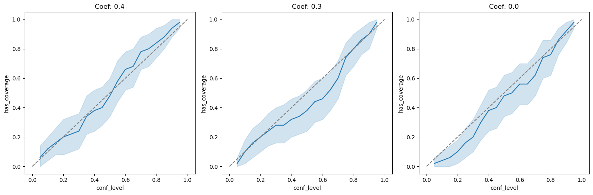

Contents
import jax.numpy as jnp
import jax
import numpy as np
import pandas as pd
import d3p
from twinify.napsu_mq.napsu_mq import NapsuMQModel
from twinify.napsu_mq import rubins_rules as rubin
from twinify.napsu_mq import marginal_query
from twinify.napsu_mq.markov_network import MarkovNetwork
from twinify.napsu_mq import maximum_entropy_inference as mei
from twinify.napsu_mq import privacy_accounting
from tests.napsu_mq.binary_logistic_regression_generator import BinaryLogisticRegressionDataGenerator
import seaborn as sns
import matplotlib.pyplot as plt
import statsmodels.api as sm
from statsmodels.tools.sm_exceptions import PerfectSeparationError
from tqdm import tqdm
n = 2000
d = 4
n_syn_datasets = 100
n_syn_dataset = n
epsilon = 1.0
delta = n**(-2)
conf_levels = np.linspace(0.05, 0.95, 19)
true_params = jnp.array((0.4, 0.3, 0.0))
def gen_data(rng):
data_gen = BinaryLogisticRegressionDataGenerator(true_params)
data = data_gen.generate_data(n, rng)
x_values = data_gen.x_values
values_by_feature = data_gen.values_by_feature
return data, x_values, values_by_feature
def get_dp_suff_stat(rng, queries, data):
suff_stat = jnp.sum(queries.flatten()(data), axis=0)
sensitivity = np.sqrt(suff_stat.shape[0])
sigma_DP = privacy_accounting.sigma(epsilon, delta, sensitivity)
dp_suff_stat = suff_stat + sigma_DP * jax.random.normal(key=rng, shape=suff_stat.shape)
return dp_suff_stat, sigma_DP
def record(ci, conf_level, dim, repeat_ind):
return {
"has_coverage": int(ci[0] <= true_params[dim].item() <= ci[1]),
"conf_level": conf_level,
"dim": dim,
"repeat_ind": repeat_ind
}
def logistic_regression(datasets, col_to_predict=None, add_constant=True):
m, n, d = datasets.shape
if col_to_predict is None: col_to_predict = d - 1
feature_cols = set(range(d))
feature_cols.remove(col_to_predict)
feature_cols = list(feature_cols)
num_coefs = d if add_constant else d - 1
q = np.zeros((m, num_coefs))
u = np.zeros((m, num_coefs))
for i in range(m):
dataset = datasets[i,:,:]
feature_array = sm.add_constant(dataset[:, feature_cols], has_constant="add") if add_constant else dataset[:, feature_cols]
y_array = dataset[:, col_to_predict]
try:
syn_model = sm.GLM(y_array, feature_array, family=sm.families.Binomial())
syn_result = syn_model.fit()
q[i, :] = syn_result.params
u[i, :] = syn_result.bse**2
except PerfectSeparationError:
q[i, :] = np.full(num_coefs, np.nan)
u[i, :] = np.full(num_coefs, np.nan)
return q, u
n_repeats = 50
records = []
rng = d3p.random.PRNGKey(74249069)
rngs = d3p.random.split(rng, n_repeats)
for i in tqdm(range(n_repeats)):
data_rng, inference_rng, sampling_rng = d3p.random.split(rngs[i], 3)
data_rng = d3p.random.convert_to_jax_rng_key(data_rng)
data, x_values, values_by_feature = gen_data(data_rng)
data = pd.DataFrame(data, dtype="category")
model = NapsuMQModel(required_marginals=[tuple(range(d))], use_laplace_approximation=False)
result = model.fit(
data=data,
rng=inference_rng,
epsilon=epsilon,
delta=delta,
query_sets=[tuple(range(d))]
)
synthetic_dfs = result.generate(
rng=sampling_rng,
num_data_per_parameter_sample=n_syn_dataset,
num_parameter_samples=n_syn_datasets,
single_dataframe=False
)
syn_datasets = np.stack(synthetic_dfs, axis=0).astype(int)
q, u = logistic_regression(syn_datasets, add_constant=False)
for j in range(d - 1):
for conf_level in conf_levels:
qi = q[:,j]
ui = u[:,j]
inds = (np.isfinite(qi) & np.isfinite(ui))
qi = qi[inds]
ui = ui[inds]
ci = rubin.conf_int(qi, ui, conf_level)
records.append(record(ci, conf_level, j, i))
df = pd.DataFrame.from_records(records)
0%| | 0/50 [00:00<?, ?it/s]
0%| | 0/16 [00:00<?, ?it/s]
4it [00:00, 7067.07it/s]
4it [00:00, 8733.58it/s]
2it [00:00, 8848.74it/s]
4it [00:00, 15563.28it/s]
8it [00:00, 11362.83it/s]
8it [00:00, 10502.17it/s]
4it [00:00, 19065.02it/s]
8it [00:00, 16031.74it/s]
8it [00:00, 16702.06it/s]
4it [00:00, 17604.63it/s]
2it [00:00, 22017.34it/s]
4it [00:00, 20435.10it/s]
16it [00:00, 6424.98it/s]
2it [00:00, 9088.42it/s]
2it [00:00, 10538.45it/s]
100%|█████████████████████████████████████████████████████████████████████████████████████████████████████████████████████████████████████████████████████████████████| 16/16 [00:00<00:00, 460.26it/s]
100%|█████████████████████████████████████████████████████████████████████████████████████████████████████████████████████████████████████████████████████████████████| 1/1 [00:00<00:00, 36792.14it/s]
100%|███████████████████████████████████████████████████████████████████████████████████████████████████████████████████████████████████████████████████████████████| 14/14 [00:00<00:00, 29913.53it/s]
0%| | 0/2800 [00:00<?, ?it/s]
warmup: 0%| | 1/2800 [00:06<5:17:17, 6.80s/it, 1 steps of size 2.34e+00. acc. prob=0.00]
warmup: 14%|███████████████▋ | 403/2800 [00:06<00:28, 82.84it/s, 7 steps of size 4.99e-01. acc. prob=0.79]
sample: 30%|████████████████████████████████▌ | 845/2800 [00:07<00:09, 206.65it/s, 7 steps of size 4.15e-01. acc. prob=0.84]
sample: 47%|█████████████████████████████████████████████████▍ | 1307/2800 [00:07<00:03, 379.57it/s, 23 steps of size 4.15e-01. acc. prob=0.86]
sample: 63%|███████████████████████████████████████████████████████████████████▎ | 1761/2800 [00:07<00:01, 600.08it/s, 7 steps of size 4.15e-01. acc. prob=0.86]
sample: 79%|████████████████████████████████████████████████████████████████████████████████████▍ | 2211/2800 [00:07<00:00, 874.56it/s, 7 steps of size 4.15e-01. acc. prob=0.86]
sample: 100%|███████████████████████████████████████████████████████████████████████████████████████████████████████████| 2800/2800 [00:07<00:00, 376.73it/s, 7 steps of size 4.15e-01. acc. prob=0.86]
0%| | 0/2800 [00:00<?, ?it/s]
warmup: 15%|███████████████▉ | 416/2800 [00:00<00:00, 4154.97it/s, 3 steps of size 7.19e-01. acc. prob=0.79]
sample: 31%|████████████████████████████████▊ | 858/2800 [00:00<00:00, 4307.30it/s, 7 steps of size 3.50e-01. acc. prob=0.89]
sample: 47%|██████████████████████████████████████████████████ | 1321/2800 [00:00<00:00, 4453.69it/s, 7 steps of size 3.50e-01. acc. prob=0.88]
sample: 64%|███████████████████████████████████████████████████████████████████▍ | 1782/2800 [00:00<00:00, 4512.46it/s, 7 steps of size 3.50e-01. acc. prob=0.87]
sample: 80%|████████████████████████████████████████████████████████████████████████████████████▋ | 2237/2800 [00:00<00:00, 4525.27it/s, 7 steps of size 3.50e-01. acc. prob=0.87]
sample: 100%|██████████████████████████████████████████████████████████████████████████████████████████████████████████| 2800/2800 [00:00<00:00, 4459.98it/s, 7 steps of size 3.50e-01. acc. prob=0.87]
0%| | 0/2800 [00:00<?, ?it/s]
warmup: 14%|███████████████▏ | 398/2800 [00:00<00:00, 3978.93it/s, 7 steps of size 5.02e-01. acc. prob=0.79]
sample: 30%|███████████████████████████████▊ | 832/2800 [00:00<00:00, 4187.70it/s, 7 steps of size 2.98e-01. acc. prob=0.89]
sample: 46%|█████████████████████████████████████████████████ | 1297/2800 [00:00<00:00, 4397.70it/s, 7 steps of size 2.98e-01. acc. prob=0.87]
sample: 63%|██████████████████████████████████████████████████████████████████▋ | 1760/2800 [00:00<00:00, 4488.72it/s, 7 steps of size 2.98e-01. acc. prob=0.87]
sample: 79%|███████████████████████████████████████████████████████████████████████████████████ | 2216/2800 [00:00<00:00, 4511.08it/s, 15 steps of size 2.98e-01. acc. prob=0.87]
sample: 100%|██████████████████████████████████████████████████████████████████████████████████████████████████████████| 2800/2800 [00:00<00:00, 4449.18it/s, 7 steps of size 2.98e-01. acc. prob=0.87]
0%| | 0/2800 [00:00<?, ?it/s]
warmup: 14%|██████████████▊ | 386/2800 [00:00<00:00, 3856.65it/s, 7 steps of size 2.84e-01. acc. prob=0.78]
sample: 30%|███████████████████████████████▋ | 830/2800 [00:00<00:00, 4195.28it/s, 7 steps of size 3.16e-01. acc. prob=0.87]
sample: 46%|████████████████████████████████████████████████▍ | 1281/2800 [00:00<00:00, 4336.27it/s, 7 steps of size 3.16e-01. acc. prob=0.87]
sample: 62%|█████████████████████████████████████████████████████████████████▍ | 1728/2800 [00:00<00:00, 4387.42it/s, 7 steps of size 3.16e-01. acc. prob=0.87]
sample: 78%|██████████████████████████████████████████████████████████████████████████████████▊ | 2189/2800 [00:00<00:00, 4467.08it/s, 7 steps of size 3.16e-01. acc. prob=0.87]
sample: 100%|█████████████████████████████████████████████████████████████████████████████████████████████████████████| 2800/2800 [00:00<00:00, 4394.55it/s, 23 steps of size 3.16e-01. acc. prob=0.87]
2%|███▎ | 1/50 [00:16<13:23, 16.39s/it]
0%| | 0/16 [00:00<?, ?it/s]
4it [00:00, 28197.00it/s]
4it [00:00, 36711.63it/s]
2it [00:00, 34379.54it/s]
4it [00:00, 42473.96it/s]
8it [00:00, 28777.39it/s]
8it [00:00, 27391.37it/s]
4it [00:00, 31536.12it/s]
8it [00:00, 14308.93it/s]
8it [00:00, 24600.02it/s]
4it [00:00, 24105.20it/s]
2it [00:00, 27869.13it/s]
4it [00:00, 37035.80it/s]
16it [00:00, 15577.73it/s]
2it [00:00, 36954.22it/s]
2it [00:00, 33825.03it/s]
100%|█████████████████████████████████████████████████████████████████████████████████████████████████████████████████████████████████████████████████████████████████| 16/16 [00:00<00:00, 839.75it/s]
100%|█████████████████████████████████████████████████████████████████████████████████████████████████████████████████████████████████████████████████████████████████| 1/1 [00:00<00:00, 47662.55it/s]
100%|███████████████████████████████████████████████████████████████████████████████████████████████████████████████████████████████████████████████████████████████| 14/14 [00:00<00:00, 51690.37it/s]
0%| | 0/2800 [00:00<?, ?it/s]
warmup: 0%| | 1/2800 [00:06<5:22:53, 6.92s/it, 1 steps of size 2.34e+00. acc. prob=0.00]
warmup: 14%|███████████████ | 392/2800 [00:07<00:30, 79.21it/s, 11 steps of size 5.29e-01. acc. prob=0.79]
sample: 29%|███████████████████████████████▊ | 824/2800 [00:07<00:09, 198.27it/s, 7 steps of size 2.94e-01. acc. prob=0.85]
sample: 45%|████████████████████████████████████████████████▎ | 1263/2800 [00:07<00:04, 359.91it/s, 7 steps of size 2.94e-01. acc. prob=0.88]
sample: 61%|█████████████████████████████████████████████████████████████████▌ | 1715/2800 [00:07<00:01, 577.10it/s, 7 steps of size 2.94e-01. acc. prob=0.88]
sample: 77%|██████████████████████████████████████████████████████████████████████████████████▏ | 2152/2800 [00:07<00:00, 840.33it/s, 7 steps of size 2.94e-01. acc. prob=0.88]
sample: 100%|███████████████████████████████████████████████████████████████████████████████████████████████████████████| 2800/2800 [00:07<00:00, 369.97it/s, 7 steps of size 2.94e-01. acc. prob=0.88]
0%| | 0/2800 [00:00<?, ?it/s]
warmup: 14%|███████████████ | 394/2800 [00:00<00:00, 3937.01it/s, 7 steps of size 3.77e-01. acc. prob=0.79]
warmup: 28%|██████████████████████████████▏ | 798/2800 [00:00<00:00, 3990.44it/s, 47 steps of size 1.68e-01. acc. prob=0.79]
sample: 44%|███████████████████████████████████████████████▏ | 1246/2800 [00:00<00:00, 4210.25it/s, 7 steps of size 2.47e-01. acc. prob=0.89]
sample: 60%|████████████████████████████████████████████████████████████████ | 1691/2800 [00:00<00:00, 4304.16it/s, 7 steps of size 2.47e-01. acc. prob=0.89]
sample: 77%|█████████████████████████████████████████████████████████████████████████████████▏ | 2145/2800 [00:00<00:00, 4389.04it/s, 7 steps of size 2.47e-01. acc. prob=0.89]
sample: 100%|██████████████████████████████████████████████████████████████████████████████████████████████████████████| 2800/2800 [00:00<00:00, 4321.92it/s, 7 steps of size 2.47e-01. acc. prob=0.89]
0%| | 0/2800 [00:00<?, ?it/s]
warmup: 14%|██████████████▊ | 389/2800 [00:00<00:00, 3882.09it/s, 7 steps of size 5.82e-01. acc. prob=0.79]
sample: 29%|██████████████████████████████▌ | 801/2800 [00:00<00:00, 4021.12it/s, 7 steps of size 3.03e-01. acc. prob=0.61]
sample: 44%|██████████████████████████████████████████████▎ | 1236/2800 [00:00<00:00, 4164.90it/s, 15 steps of size 3.03e-01. acc. prob=0.86]
sample: 60%|███████████████████████████████████████████████████████████████▋ | 1681/2800 [00:00<00:00, 4276.90it/s, 7 steps of size 3.03e-01. acc. prob=0.86]
sample: 76%|████████████████████████████████████████████████████████████████████████████████▎ | 2122/2800 [00:00<00:00, 4321.79it/s, 7 steps of size 3.03e-01. acc. prob=0.86]
sample: 100%|█████████████████████████████████████████████████████████████████████████████████████████████████████████| 2800/2800 [00:00<00:00, 4275.72it/s, 15 steps of size 3.03e-01. acc. prob=0.86]
0%| | 0/2800 [00:00<?, ?it/s]
warmup: 13%|██████████████▎ | 375/2800 [00:00<00:00, 3743.60it/s, 7 steps of size 6.14e-01. acc. prob=0.79]
warmup: 28%|██████████████████████████████ | 786/2800 [00:00<00:00, 3955.30it/s, 7 steps of size 2.81e-01. acc. prob=0.79]
sample: 44%|█████████████████████████████████████████████▊ | 1221/2800 [00:00<00:00, 4133.86it/s, 23 steps of size 2.31e-01. acc. prob=0.87]
sample: 60%|███████████████████████████████████████████████████████████████▏ | 1669/2800 [00:00<00:00, 4267.60it/s, 7 steps of size 2.31e-01. acc. prob=0.87]
sample: 76%|████████████████████████████████████████████████████████████████████████████████▎ | 2123/2800 [00:00<00:00, 4362.86it/s, 7 steps of size 2.31e-01. acc. prob=0.87]
sample: 100%|██████████████████████████████████████████████████████████████████████████████████████████████████████████| 2800/2800 [00:00<00:00, 4285.72it/s, 7 steps of size 2.31e-01. acc. prob=0.87]
4%|██████▌ | 2/50 [00:32<13:09, 16.46s/it]
0%| | 0/16 [00:00<?, ?it/s]
4it [00:00, 27776.85it/s]
4it [00:00, 45964.98it/s]
2it [00:00, 14899.84it/s]
4it [00:00, 44384.17it/s]
8it [00:00, 32263.88it/s]
8it [00:00, 38479.85it/s]
4it [00:00, 44979.13it/s]
8it [00:00, 13378.96it/s]
8it [00:00, 18787.48it/s]
4it [00:00, 27594.11it/s]
2it [00:00, 33156.55it/s]
4it [00:00, 17476.27it/s]
16it [00:00, 15985.91it/s]
2it [00:00, 34952.53it/s]
2it [00:00, 39945.75it/s]
100%|█████████████████████████████████████████████████████████████████████████████████████████████████████████████████████████████████████████████████████████████████| 16/16 [00:00<00:00, 879.02it/s]
100%|█████████████████████████████████████████████████████████████████████████████████████████████████████████████████████████████████████████████████████████████████| 1/1 [00:00<00:00, 45590.26it/s]
100%|███████████████████████████████████████████████████████████████████████████████████████████████████████████████████████████████████████████████████████████████| 14/14 [00:00<00:00, 51644.90it/s]
0%| | 0/2800 [00:00<?, ?it/s]
warmup: 0%| | 1/2800 [00:06<5:20:04, 6.86s/it, 1 steps of size 2.34e+00. acc. prob=0.00]
warmup: 13%|██████████████▋ | 377/2800 [00:06<00:31, 76.83it/s, 3 steps of size 4.59e-01. acc. prob=0.79]
warmup: 28%|█████████████████████████████▉ | 783/2800 [00:07<00:10, 189.59it/s, 15 steps of size 3.89e-01. acc. prob=0.79]
sample: 44%|██████████████████████████████████████████████▉ | 1229/2800 [00:07<00:04, 355.58it/s, 3 steps of size 2.45e-01. acc. prob=0.88]
sample: 59%|███████████████████████████████████████████████████████████████▍ | 1659/2800 [00:07<00:02, 563.03it/s, 7 steps of size 2.45e-01. acc. prob=0.88]
sample: 75%|████████████████████████████████████████████████████████████████████████████████▍ | 2105/2800 [00:07<00:00, 835.34it/s, 7 steps of size 2.45e-01. acc. prob=0.88]
sample: 100%|██████████████████████████████████████████████████████████████████████████████████████████████████████████| 2800/2800 [00:07<00:00, 372.37it/s, 15 steps of size 2.45e-01. acc. prob=0.88]
0%| | 0/2800 [00:00<?, ?it/s]
warmup: 14%|███████████████▏ | 399/2800 [00:00<00:00, 3989.08it/s, 7 steps of size 2.89e-01. acc. prob=0.79]
sample: 29%|██████████████████████████████▉ | 809/2800 [00:00<00:00, 4054.20it/s, 7 steps of size 1.71e-01. acc. prob=0.92]
sample: 45%|███████████████████████████████████████████████▉ | 1266/2800 [00:00<00:00, 4288.40it/s, 7 steps of size 1.71e-01. acc. prob=0.90]
sample: 61%|███████████████████████████████████████████████████████████████▌ | 1696/2800 [00:00<00:00, 4289.32it/s, 15 steps of size 1.71e-01. acc. prob=0.89]
sample: 76%|████████████████████████████████████████████████████████████████████████████████▉ | 2138/2800 [00:00<00:00, 4336.38it/s, 7 steps of size 1.71e-01. acc. prob=0.90]
sample: 100%|█████████████████████████████████████████████████████████████████████████████████████████████████████████| 2800/2800 [00:00<00:00, 4305.78it/s, 31 steps of size 1.71e-01. acc. prob=0.90]
0%| | 0/2800 [00:00<?, ?it/s]
warmup: 14%|██████████████▎ | 379/2800 [00:00<00:00, 3769.57it/s, 27 steps of size 3.69e-01. acc. prob=0.78]
warmup: 28%|█████████████████████████████▋ | 785/2800 [00:00<00:00, 3933.35it/s, 23 steps of size 3.70e-01. acc. prob=0.79]
sample: 43%|█████████████████████████████████████████████▌ | 1215/2800 [00:00<00:00, 4093.27it/s, 23 steps of size 2.80e-01. acc. prob=0.87]
sample: 59%|██████████████████████████████████████████████████████████████▉ | 1662/2800 [00:00<00:00, 4241.55it/s, 7 steps of size 2.80e-01. acc. prob=0.86]
sample: 75%|███████████████████████████████████████████████████████████████████████████████▌ | 2101/2800 [00:00<00:00, 4292.22it/s, 7 steps of size 2.80e-01. acc. prob=0.87]
sample: 100%|██████████████████████████████████████████████████████████████████████████████████████████████████████████| 2800/2800 [00:00<00:00, 4239.90it/s, 7 steps of size 2.80e-01. acc. prob=0.87]
0%| | 0/2800 [00:00<?, ?it/s]
warmup: 13%|██████████████▎ | 377/2800 [00:00<00:00, 3765.57it/s, 31 steps of size 2.03e-01. acc. prob=0.78]
warmup: 28%|██████████████████████████████ | 793/2800 [00:00<00:00, 3984.91it/s, 27 steps of size 2.98e-01. acc. prob=0.79]
sample: 44%|█████████████████████████████████████████████▉ | 1225/2800 [00:00<00:00, 4134.08it/s, 23 steps of size 2.25e-01. acc. prob=0.85]
sample: 59%|██████████████████████████████████████████████████████████████▎ | 1662/2800 [00:00<00:00, 4222.62it/s, 15 steps of size 2.25e-01. acc. prob=0.85]
sample: 75%|███████████████████████████████████████████████████████████████████████████████▋ | 2104/2800 [00:00<00:00, 4290.67it/s, 7 steps of size 2.25e-01. acc. prob=0.85]
sample: 100%|██████████████████████████████████████████████████████████████████████████████████████████████████████████| 2800/2800 [00:00<00:00, 4245.93it/s, 7 steps of size 2.25e-01. acc. prob=0.85]
6%|█████████▊ | 3/50 [00:49<12:53, 16.46s/it]
0%| | 0/16 [00:00<?, ?it/s]
4it [00:00, 36631.48it/s]
4it [00:00, 38746.46it/s]
2it [00:00, 16513.01it/s]
4it [00:00, 40524.68it/s]
8it [00:00, 29407.92it/s]
8it [00:00, 27125.65it/s]
4it [00:00, 32704.12it/s]
8it [00:00, 24474.42it/s]
8it [00:00, 24636.15it/s]
4it [00:00, 23967.45it/s]
2it [00:00, 27413.75it/s]
4it [00:00, 33288.13it/s]
16it [00:00, 18265.89it/s]
2it [00:00, 27413.75it/s]
2it [00:00, 38479.85it/s]
100%|█████████████████████████████████████████████████████████████████████████████████████████████████████████████████████████████████████████████████████████████████| 16/16 [00:00<00:00, 997.13it/s]
100%|█████████████████████████████████████████████████████████████████████████████████████████████████████████████████████████████████████████████████████████████████| 1/1 [00:00<00:00, 59074.70it/s]
100%|███████████████████████████████████████████████████████████████████████████████████████████████████████████████████████████████████████████████████████████████| 14/14 [00:00<00:00, 50360.43it/s]
0%| | 0/2800 [00:00<?, ?it/s]
warmup: 0%| | 1/2800 [00:06<5:26:27, 7.00s/it, 1 steps of size 2.34e+00. acc. prob=0.00]
warmup: 15%|███████████████▉ | 413/2800 [00:07<00:28, 82.56it/s, 27 steps of size 5.37e-01. acc. prob=0.79]
sample: 30%|███████████████████████████████▊ | 831/2800 [00:07<00:10, 196.39it/s, 31 steps of size 3.29e-01. acc. prob=0.85]
sample: 46%|████████████████████████████████████████████████▋ | 1274/2800 [00:07<00:04, 357.99it/s, 7 steps of size 3.29e-01. acc. prob=0.86]
sample: 62%|█████████████████████████████████████████████████████████████████▌ | 1731/2800 [00:07<00:01, 575.72it/s, 23 steps of size 3.29e-01. acc. prob=0.87]
sample: 78%|███████████████████████████████████████████████████████████████████████████████████▎ | 2180/2800 [00:07<00:00, 844.93it/s, 7 steps of size 3.29e-01. acc. prob=0.87]
sample: 100%|███████████████████████████████████████████████████████████████████████████████████████████████████████████| 2800/2800 [00:07<00:00, 366.56it/s, 7 steps of size 3.29e-01. acc. prob=0.87]
0%| | 0/2800 [00:00<?, ?it/s]
warmup: 15%|███████████████▊ | 415/2800 [00:00<00:00, 4149.67it/s, 3 steps of size 1.03e+00. acc. prob=0.79]
sample: 30%|███████████████████████████████▋ | 830/2800 [00:00<00:00, 4078.56it/s, 7 steps of size 2.67e-01. acc. prob=0.89]
sample: 45%|███████████████████████████████████████████████▊ | 1264/2800 [00:00<00:00, 4193.48it/s, 7 steps of size 2.67e-01. acc. prob=0.90]
sample: 61%|████████████████████████████████████████████████████████████████▌ | 1707/2800 [00:00<00:00, 4282.88it/s, 7 steps of size 2.67e-01. acc. prob=0.90]
sample: 77%|█████████████████████████████████████████████████████████████████████████████████▋ | 2159/2800 [00:00<00:00, 4367.21it/s, 7 steps of size 2.67e-01. acc. prob=0.90]
sample: 100%|██████████████████████████████████████████████████████████████████████████████████████████████████████████| 2800/2800 [00:00<00:00, 4326.62it/s, 7 steps of size 2.67e-01. acc. prob=0.90]
0%| | 0/2800 [00:00<?, ?it/s]
warmup: 13%|██████████████ | 373/2800 [00:00<00:00, 3715.10it/s, 23 steps of size 3.01e-01. acc. prob=0.78]
warmup: 28%|█████████████████████████████▉ | 790/2800 [00:00<00:00, 3980.73it/s, 15 steps of size 2.39e-01. acc. prob=0.79]
sample: 44%|██████████████████████████████████████████████▏ | 1220/2800 [00:00<00:00, 4124.89it/s, 7 steps of size 2.63e-01. acc. prob=0.92]
sample: 59%|██████████████████████████████████████████████████████████████▌ | 1652/2800 [00:00<00:00, 4199.35it/s, 7 steps of size 2.63e-01. acc. prob=0.92]
sample: 74%|██████████████████████████████████████████████████████████████████████████████▍ | 2072/2800 [00:00<00:00, 3991.96it/s, 7 steps of size 2.63e-01. acc. prob=0.92]
sample: 100%|██████████████████████████████████████████████████████████████████████████████████████████████████████████| 2800/2800 [00:00<00:00, 4013.51it/s, 7 steps of size 2.63e-01. acc. prob=0.92]
0%| | 0/2800 [00:00<?, ?it/s]
warmup: 14%|███████████████▎ | 400/2800 [00:00<00:00, 3998.60it/s, 7 steps of size 1.86e-01. acc. prob=0.78]
sample: 30%|███████████████████████████████▊ | 831/2800 [00:00<00:00, 4178.71it/s, 3 steps of size 3.22e-01. acc. prob=0.81]
sample: 45%|███████████████████████████████████████████████▉ | 1267/2800 [00:00<00:00, 4260.41it/s, 7 steps of size 3.22e-01. acc. prob=0.83]
sample: 61%|████████████████████████████████████████████████████████████████▊ | 1712/2800 [00:00<00:00, 4333.99it/s, 7 steps of size 3.22e-01. acc. prob=0.83]
sample: 77%|█████████████████████████████████████████████████████████████████████████████████▏ | 2146/2800 [00:00<00:00, 4295.61it/s, 7 steps of size 3.22e-01. acc. prob=0.83]
sample: 100%|██████████████████████████████████████████████████████████████████████████████████████████████████████████| 2800/2800 [00:00<00:00, 4251.78it/s, 7 steps of size 3.22e-01. acc. prob=0.83]
8%|█████████████ | 4/50 [01:05<12:39, 16.51s/it]
0%| | 0/16 [00:00<?, ?it/s]
4it [00:00, 34239.22it/s]
4it [00:00, 44384.17it/s]
2it [00:00, 22429.43it/s]
4it [00:00, 28777.39it/s]
8it [00:00, 29001.24it/s]
8it [00:00, 26694.06it/s]
4it [00:00, 38391.80it/s]
8it [00:00, 24244.53it/s]
8it [00:00, 26843.55it/s]
4it [00:00, 43018.50it/s]
2it [00:00, 26630.50it/s]
4it [00:00, 40721.40it/s]
16it [00:00, 16668.87it/s]
2it [00:00, 35696.20it/s]
2it [00:00, 21959.71it/s]
100%|█████████████████████████████████████████████████████████████████████████████████████████████████████████████████████████████████████████████████████████████████| 16/16 [00:00<00:00, 891.11it/s]
100%|█████████████████████████████████████████████████████████████████████████████████████████████████████████████████████████████████████████████████████████████████| 1/1 [00:00<00:00, 49344.75it/s]
100%|███████████████████████████████████████████████████████████████████████████████████████████████████████████████████████████████████████████████████████████████| 14/14 [00:00<00:00, 46976.20it/s]
0%| | 0/2800 [00:00<?, ?it/s]
warmup: 0%| | 1/2800 [00:06<5:22:31, 6.91s/it, 1 steps of size 2.34e+00. acc. prob=0.00]
warmup: 13%|██████████████ | 363/2800 [00:07<00:33, 73.42it/s, 39 steps of size 3.30e-01. acc. prob=0.79]
warmup: 28%|█████████████████████████████▌ | 772/2800 [00:07<00:10, 186.30it/s, 23 steps of size 2.88e-01. acc. prob=0.79]
sample: 43%|██████████████████████████████████████████████ | 1205/2800 [00:07<00:04, 346.23it/s, 7 steps of size 1.89e-01. acc. prob=0.89]
sample: 58%|█████████████████████████████████████████████████████████████▉ | 1622/2800 [00:07<00:02, 546.01it/s, 7 steps of size 1.89e-01. acc. prob=0.90]
sample: 73%|██████████████████████████████████████████████████████████████████████████████▎ | 2050/2800 [00:07<00:00, 805.35it/s, 7 steps of size 1.89e-01. acc. prob=0.89]
sample: 100%|███████████████████████████████████████████████████████████████████████████████████████████████████████████| 2800/2800 [00:07<00:00, 369.09it/s, 7 steps of size 1.89e-01. acc. prob=0.89]
0%| | 0/2800 [00:00<?, ?it/s]
warmup: 12%|█████████████ | 343/2800 [00:00<00:00, 3423.80it/s, 7 steps of size 2.56e-01. acc. prob=0.78]
warmup: 26%|███████████████████████████▊ | 728/2800 [00:00<00:00, 3674.25it/s, 7 steps of size 2.80e-01. acc. prob=0.79]
sample: 40%|██████████████████████████████████████████▎ | 1118/2800 [00:00<00:00, 3774.04it/s, 7 steps of size 1.37e-01. acc. prob=0.91]
sample: 55%|█████████████████████████████████████████████████████████▋ | 1538/2800 [00:00<00:00, 3941.76it/s, 15 steps of size 1.37e-01. acc. prob=0.92]
sample: 70%|██████████████████████████████████████████████████████████████████████████ | 1956/2800 [00:00<00:00, 4025.03it/s, 7 steps of size 1.37e-01. acc. prob=0.91]
sample: 100%|██████████████████████████████████████████████████████████████████████████████████████████████████████████| 2800/2800 [00:00<00:00, 4011.05it/s, 7 steps of size 1.37e-01. acc. prob=0.91]
0%| | 0/2800 [00:00<?, ?it/s]
warmup: 13%|█████████████▊ | 361/2800 [00:00<00:00, 3602.83it/s, 7 steps of size 2.48e-01. acc. prob=0.78]
warmup: 27%|█████████████████████████████ | 762/2800 [00:00<00:00, 3840.95it/s, 7 steps of size 1.87e-01. acc. prob=0.79]
sample: 42%|████████████████████████████████████████████▉ | 1186/2800 [00:00<00:00, 4021.03it/s, 7 steps of size 2.17e-01. acc. prob=0.88]
sample: 58%|█████████████████████████████████████████████████████████████▏ | 1630/2800 [00:00<00:00, 4184.26it/s, 15 steps of size 2.17e-01. acc. prob=0.88]
sample: 73%|█████████████████████████████████████████████████████████████████████████████▌ | 2049/2800 [00:00<00:00, 4150.52it/s, 3 steps of size 2.17e-01. acc. prob=0.88]
sample: 100%|██████████████████████████████████████████████████████████████████████████████████████████████████████████| 2800/2800 [00:00<00:00, 4104.36it/s, 7 steps of size 2.17e-01. acc. prob=0.88]
0%| | 0/2800 [00:00<?, ?it/s]
warmup: 14%|██████████████▊ | 386/2800 [00:00<00:00, 3856.42it/s, 7 steps of size 1.31e-01. acc. prob=0.78]
warmup: 28%|█████████████████████████████▊ | 787/2800 [00:00<00:00, 3940.12it/s, 15 steps of size 1.94e-01. acc. prob=0.79]
sample: 44%|██████████████████████████████████████████████▎ | 1222/2800 [00:00<00:00, 4125.14it/s, 7 steps of size 2.28e-01. acc. prob=0.89]
sample: 60%|███████████████████████████████████████████████████████████████▍ | 1676/2800 [00:00<00:00, 4286.73it/s, 7 steps of size 2.28e-01. acc. prob=0.89]
sample: 75%|███████████████████████████████████████████████████████████████████████████████▋ | 2105/2800 [00:00<00:00, 4278.66it/s, 3 steps of size 2.28e-01. acc. prob=0.89]
sample: 100%|██████████████████████████████████████████████████████████████████████████████████████████████████████████| 2800/2800 [00:00<00:00, 4216.09it/s, 7 steps of size 2.28e-01. acc. prob=0.89]
10%|████████████████▎ | 5/50 [01:22<12:23, 16.53s/it]
0%| | 0/16 [00:00<?, ?it/s]
4it [00:00, 40329.85it/s]
4it [00:00, 37449.14it/s]
2it [00:00, 42799.02it/s]
4it [00:00, 32017.59it/s]
8it [00:00, 31775.03it/s]
8it [00:00, 27776.85it/s]
4it [00:00, 46474.28it/s]
8it [00:00, 11765.23it/s]
8it [00:00, 18957.31it/s]
4it [00:00, 28339.89it/s]
2it [00:00, 33288.13it/s]
4it [00:00, 36002.61it/s]
16it [00:00, 18708.91it/s]
2it [00:00, 17810.21it/s]
2it [00:00, 35098.78it/s]
100%|█████████████████████████████████████████████████████████████████████████████████████████████████████████████████████████████████████████████████████████████████| 16/16 [00:00<00:00, 897.68it/s]
100%|█████████████████████████████████████████████████████████████████████████████████████████████████████████████████████████████████████████████████████████████████| 1/1 [00:00<00:00, 55188.21it/s]
100%|███████████████████████████████████████████████████████████████████████████████████████████████████████████████████████████████████████████████████████████████| 14/14 [00:00<00:00, 46640.39it/s]
0%| | 0/2800 [00:00<?, ?it/s]
warmup: 0%| | 1/2800 [00:06<5:19:39, 6.85s/it, 1 steps of size 2.34e+00. acc. prob=0.00]
warmup: 12%|█████████████▎ | 346/2800 [00:06<00:34, 70.59it/s, 39 steps of size 1.59e-01. acc. prob=0.78]
warmup: 27%|████████████████████████████▊ | 746/2800 [00:07<00:11, 181.96it/s, 3 steps of size 1.80e-01. acc. prob=0.79]
sample: 42%|█████████████████████████████████████████████ | 1179/2800 [00:07<00:04, 343.37it/s, 7 steps of size 2.09e-01. acc. prob=0.87]
sample: 57%|█████████████████████████████████████████████████████████████▍ | 1609/2800 [00:07<00:02, 551.72it/s, 7 steps of size 2.09e-01. acc. prob=0.87]
sample: 73%|█████████████████████████████████████████████████████████████████████████████▏ | 2038/2800 [00:07<00:00, 813.24it/s, 15 steps of size 2.09e-01. acc. prob=0.87]
sample: 100%|███████████████████████████████████████████████████████████████████████████████████████████████████████████| 2800/2800 [00:07<00:00, 371.65it/s, 7 steps of size 2.09e-01. acc. prob=0.87]
0%| | 0/2800 [00:00<?, ?it/s]
warmup: 13%|█████████████▌ | 356/2800 [00:00<00:00, 3558.08it/s, 7 steps of size 2.89e-01. acc. prob=0.78]
warmup: 27%|████████████████████████████▊ | 761/2800 [00:00<00:00, 3828.49it/s, 47 steps of size 1.35e-01. acc. prob=0.79]
sample: 42%|████████████████████████████████████████████▍ | 1175/2800 [00:00<00:00, 3969.72it/s, 7 steps of size 2.12e-01. acc. prob=0.89]
sample: 58%|█████████████████████████████████████████████████████████████ | 1612/2800 [00:00<00:00, 4124.99it/s, 7 steps of size 2.12e-01. acc. prob=0.89]
sample: 73%|█████████████████████████████████████████████████████████████████████████████▏ | 2038/2800 [00:00<00:00, 4170.72it/s, 7 steps of size 2.12e-01. acc. prob=0.89]
sample: 100%|██████████████████████████████████████████████████████████████████████████████████████████████████████████| 2800/2800 [00:00<00:00, 4127.30it/s, 7 steps of size 2.12e-01. acc. prob=0.89]
0%| | 0/2800 [00:00<?, ?it/s]
warmup: 14%|██████████████▌ | 386/2800 [00:00<00:00, 3842.67it/s, 31 steps of size 2.30e-01. acc. prob=0.78]
warmup: 28%|█████████████████████████████▍ | 771/2800 [00:00<00:00, 3664.91it/s, 7 steps of size 2.28e-01. acc. prob=0.79]
sample: 43%|█████████████████████████████████████████████ | 1202/2800 [00:00<00:00, 3946.42it/s, 15 steps of size 2.69e-01. acc. prob=0.86]
sample: 57%|████████████████████████████████████████████████████████████ | 1600/2800 [00:00<00:00, 3954.21it/s, 31 steps of size 2.69e-01. acc. prob=0.87]
sample: 72%|████████████████████████████████████████████████████████████████████████████▍ | 2019/2800 [00:00<00:00, 4037.54it/s, 7 steps of size 2.69e-01. acc. prob=0.86]
sample: 100%|██████████████████████████████████████████████████████████████████████████████████████████████████████████| 2800/2800 [00:00<00:00, 4027.91it/s, 7 steps of size 2.69e-01. acc. prob=0.86]
0%| | 0/2800 [00:00<?, ?it/s]
warmup: 14%|██████████████▉ | 391/2800 [00:00<00:00, 3907.45it/s, 3 steps of size 4.64e-01. acc. prob=0.79]
warmup: 29%|██████████████████████████████▎ | 800/2800 [00:00<00:00, 4011.24it/s, 15 steps of size 2.54e-01. acc. prob=0.79]
sample: 44%|██████████████████████████████████████████████▎ | 1223/2800 [00:00<00:00, 4109.27it/s, 7 steps of size 2.54e-01. acc. prob=0.90]
sample: 59%|██████████████████████████████████████████████████████████████▌ | 1652/2800 [00:00<00:00, 4178.20it/s, 7 steps of size 2.54e-01. acc. prob=0.90]
sample: 74%|█████████████████████████████████████████████████████████████████████████████▋ | 2070/2800 [00:00<00:00, 4156.67it/s, 15 steps of size 2.54e-01. acc. prob=0.90]
sample: 100%|██████████████████████████████████████████████████████████████████████████████████████████████████████████| 2800/2800 [00:00<00:00, 4135.90it/s, 7 steps of size 2.54e-01. acc. prob=0.90]
12%|███████████████████▌ | 6/50 [01:39<12:11, 16.62s/it]
0%| | 0/16 [00:00<?, ?it/s]
4it [00:00, 31242.49it/s]
4it [00:00, 32513.98it/s]
2it [00:00, 38479.85it/s]
4it [00:00, 33554.43it/s]
8it [00:00, 29641.72it/s]
8it [00:00, 23061.47it/s]
4it [00:00, 47527.52it/s]
8it [00:00, 35848.75it/s]
8it [00:00, 29959.31it/s]
4it [00:00, 48913.17it/s]
2it [00:00, 19239.93it/s]
4it [00:00, 37035.80it/s]
16it [00:00, 20541.43it/s]
2it [00:00, 38479.85it/s]
2it [00:00, 29433.71it/s]
100%|████████████████████████████████████████████████████████████████████████████████████████████████████████████████████████████████████████████████████████████████| 16/16 [00:00<00:00, 1045.81it/s]
100%|█████████████████████████████████████████████████████████████████████████████████████████████████████████████████████████████████████████████████████████████████| 1/1 [00:00<00:00, 59074.70it/s]
100%|███████████████████████████████████████████████████████████████████████████████████████████████████████████████████████████████████████████████████████████████| 14/14 [00:00<00:00, 52616.72it/s]
0%| | 0/2800 [00:00<?, ?it/s]
warmup: 0%| | 1/2800 [00:06<5:22:06, 6.90s/it, 1 steps of size 2.34e+00. acc. prob=0.00]
warmup: 11%|███████████▊ | 305/2800 [00:07<00:40, 61.76it/s, 7 steps of size 1.60e-01. acc. prob=0.78]
warmup: 24%|█████████████████████████▉ | 673/2800 [00:07<00:13, 163.59it/s, 7 steps of size 1.31e-01. acc. prob=0.79]
sample: 37%|████████████████████████████████████████ | 1049/2800 [00:07<00:05, 302.57it/s, 7 steps of size 1.24e-01. acc. prob=0.89]
sample: 52%|██████████████████████████████████████████████████████▉ | 1452/2800 [00:07<00:02, 497.58it/s, 47 steps of size 1.24e-01. acc. prob=0.89]
sample: 67%|██████████████████████████████████████████████████████████████████████▌ | 1865/2800 [00:07<00:01, 749.92it/s, 31 steps of size 1.24e-01. acc. prob=0.89]
sample: 82%|█████████████████████████████████████████████████████████████████████████████████████▌ | 2282/2800 [00:07<00:00, 1058.55it/s, 55 steps of size 1.24e-01. acc. prob=0.89]
sample: 100%|███████████████████████████████████████████████████████████████████████████████████████████████████████████| 2800/2800 [00:07<00:00, 366.79it/s, 7 steps of size 1.24e-01. acc. prob=0.89]
0%| | 0/2800 [00:00<?, ?it/s]
warmup: 13%|█████████████▌ | 354/2800 [00:00<00:00, 3539.01it/s, 7 steps of size 1.64e-01. acc. prob=0.78]
warmup: 26%|███████████████████████████▊ | 735/2800 [00:00<00:00, 3688.92it/s, 23 steps of size 1.63e-01. acc. prob=0.79]
sample: 40%|█████████████████████████████████████████▋ | 1113/2800 [00:00<00:00, 3720.54it/s, 55 steps of size 2.33e-01. acc. prob=0.84]
sample: 54%|█████████████████████████████████████████████████████████▏ | 1510/2800 [00:00<00:00, 3817.53it/s, 7 steps of size 2.33e-01. acc. prob=0.83]
sample: 68%|███████████████████████████████████████████████████████████████████████▋ | 1892/2800 [00:00<00:00, 3797.34it/s, 7 steps of size 2.33e-01. acc. prob=0.83]
sample: 82%|██████████████████████████████████████████████████████████████████████████████████████ | 2296/2800 [00:00<00:00, 3878.89it/s, 15 steps of size 2.33e-01. acc. prob=0.83]
sample: 100%|██████████████████████████████████████████████████████████████████████████████████████████████████████████| 2800/2800 [00:00<00:00, 3769.37it/s, 7 steps of size 2.33e-01. acc. prob=0.83]
0%| | 0/2800 [00:00<?, ?it/s]
warmup: 13%|██████████████ | 367/2800 [00:00<00:00, 3669.37it/s, 7 steps of size 3.80e-01. acc. prob=0.78]
warmup: 26%|████████████████████████████ | 734/2800 [00:00<00:00, 3587.78it/s, 7 steps of size 2.84e-01. acc. prob=0.79]
sample: 40%|█████████████████████████████████████████▉ | 1117/2800 [00:00<00:00, 3693.64it/s, 15 steps of size 1.59e-01. acc. prob=0.89]
sample: 55%|██████████████████████████████████████████████████████████▏ | 1536/2800 [00:00<00:00, 3887.35it/s, 7 steps of size 1.59e-01. acc. prob=0.90]
sample: 69%|█████████████████████████████████████████████████████████████████████████▌ | 1943/2800 [00:00<00:00, 3950.44it/s, 7 steps of size 1.59e-01. acc. prob=0.90]
sample: 85%|█████████████████████████████████████████████████████████████████████████████████████████▋ | 2370/2800 [00:00<00:00, 4056.29it/s, 7 steps of size 1.59e-01. acc. prob=0.90]
sample: 100%|█████████████████████████████████████████████████████████████████████████████████████████████████████████| 2800/2800 [00:00<00:00, 3953.26it/s, 79 steps of size 1.59e-01. acc. prob=0.90]
0%| | 0/2800 [00:00<?, ?it/s]
warmup: 12%|████████████▌ | 333/2800 [00:00<00:00, 3318.35it/s, 31 steps of size 1.27e-01. acc. prob=0.78]
warmup: 26%|███████████████████████████▍ | 717/2800 [00:00<00:00, 3622.14it/s, 7 steps of size 1.53e-01. acc. prob=0.79]
sample: 40%|██████████████████████████████████████████ | 1112/2800 [00:00<00:00, 3771.26it/s, 7 steps of size 1.88e-01. acc. prob=0.87]
sample: 55%|█████████████████████████████████████████████████████████▉ | 1546/2800 [00:00<00:00, 3985.49it/s, 47 steps of size 1.88e-01. acc. prob=0.88]
sample: 70%|█████████████████████████████████████████████████████████████████████████▊ | 1951/2800 [00:00<00:00, 4007.59it/s, 7 steps of size 1.88e-01. acc. prob=0.87]
sample: 84%|█████████████████████████████████████████████████████████████████████████████████████████▏ | 2355/2800 [00:00<00:00, 4016.06it/s, 7 steps of size 1.88e-01. acc. prob=0.87]
sample: 100%|██████████████████████████████████████████████████████████████████████████████████████████████████████████| 2800/2800 [00:00<00:00, 3928.50it/s, 7 steps of size 1.88e-01. acc. prob=0.87]
14%|██████████████████████▊ | 7/50 [01:56<11:59, 16.72s/it]
0%| | 0/16 [00:00<?, ?it/s]
4it [00:00, 40721.40it/s]
4it [00:00, 33893.37it/s]
2it [00:00, 34379.54it/s]
4it [00:00, 39945.75it/s]
8it [00:00, 27191.60it/s]
8it [00:00, 31011.49it/s]
4it [00:00, 40427.03it/s]
8it [00:00, 33454.07it/s]
8it [00:00, 23317.88it/s]
4it [00:00, 26843.55it/s]
2it [00:00, 34100.03it/s]
4it [00:00, 15679.64it/s]
16it [00:00, 17655.58it/s]
2it [00:00, 28149.69it/s]
2it [00:00, 36954.22it/s]
100%|█████████████████████████████████████████████████████████████████████████████████████████████████████████████████████████████████████████████████████████████████| 16/16 [00:00<00:00, 915.17it/s]
100%|█████████████████████████████████████████████████████████████████████████████████████████████████████████████████████████████████████████████████████████████████| 1/1 [00:00<00:00, 45590.26it/s]
100%|███████████████████████████████████████████████████████████████████████████████████████████████████████████████████████████████████████████████████████████████| 14/14 [00:00<00:00, 51644.90it/s]
0%| | 0/2800 [00:00<?, ?it/s]
warmup: 0%| | 1/2800 [00:06<5:18:05, 6.82s/it, 1 steps of size 2.34e+00. acc. prob=0.00]
warmup: 14%|██████████████▉ | 384/2800 [00:06<00:30, 78.74it/s, 7 steps of size 4.15e-01. acc. prob=0.79]
sample: 29%|███████████████████████████████▋ | 823/2800 [00:07<00:09, 201.52it/s, 7 steps of size 3.09e-01. acc. prob=0.89]
sample: 45%|████████████████████████████████████████████████▌ | 1272/2800 [00:07<00:04, 369.17it/s, 7 steps of size 3.09e-01. acc. prob=0.89]
sample: 61%|████████████████████████████████████████████████████████████████▊ | 1695/2800 [00:07<00:01, 573.35it/s, 7 steps of size 3.09e-01. acc. prob=0.89]
sample: 77%|██████████████████████████████████████████████████████████████████████████████████▍ | 2156/2800 [00:07<00:00, 856.89it/s, 7 steps of size 3.09e-01. acc. prob=0.90]
sample: 100%|███████████████████████████████████████████████████████████████████████████████████████████████████████████| 2800/2800 [00:07<00:00, 375.22it/s, 7 steps of size 3.09e-01. acc. prob=0.90]
0%| | 0/2800 [00:00<?, ?it/s]
warmup: 14%|██████████████▉ | 395/2800 [00:00<00:00, 3940.12it/s, 15 steps of size 2.23e-01. acc. prob=0.78]
sample: 29%|███████████████████████████████▎ | 818/2800 [00:00<00:00, 4105.97it/s, 7 steps of size 3.50e-01. acc. prob=0.87]
sample: 45%|████████████████████████████████████████████████▏ | 1273/2800 [00:00<00:00, 4305.67it/s, 7 steps of size 3.50e-01. acc. prob=0.89]
sample: 61%|████████████████████████████████████████████████████████████████▌ | 1704/2800 [00:00<00:00, 4301.20it/s, 7 steps of size 3.50e-01. acc. prob=0.89]
sample: 77%|█████████████████████████████████████████████████████████████████████████████████▎ | 2148/2800 [00:00<00:00, 4348.58it/s, 7 steps of size 3.50e-01. acc. prob=0.89]
sample: 100%|██████████████████████████████████████████████████████████████████████████████████████████████████████████| 2800/2800 [00:00<00:00, 4341.19it/s, 7 steps of size 3.50e-01. acc. prob=0.89]
0%| | 0/2800 [00:00<?, ?it/s]
warmup: 14%|██████████████▋ | 389/2800 [00:00<00:00, 3880.88it/s, 15 steps of size 3.30e-01. acc. prob=0.79]
sample: 29%|███████████████████████████████ | 812/2800 [00:00<00:00, 4085.59it/s, 7 steps of size 3.50e-01. acc. prob=0.87]
sample: 45%|███████████████████████████████████████████████▎ | 1261/2800 [00:00<00:00, 4262.75it/s, 23 steps of size 3.50e-01. acc. prob=0.86]
sample: 60%|███████████████████████████████████████████████████████████████▉ | 1688/2800 [00:00<00:00, 4202.94it/s, 7 steps of size 3.50e-01. acc. prob=0.86]
sample: 76%|████████████████████████████████████████████████████████████████████████████████▍ | 2125/2800 [00:00<00:00, 4262.07it/s, 7 steps of size 3.50e-01. acc. prob=0.86]
sample: 100%|██████████████████████████████████████████████████████████████████████████████████████████████████████████| 2800/2800 [00:00<00:00, 4258.93it/s, 7 steps of size 3.50e-01. acc. prob=0.86]
0%| | 0/2800 [00:00<?, ?it/s]
warmup: 15%|███████████████▍ | 409/2800 [00:00<00:00, 4079.68it/s, 23 steps of size 3.25e-01. acc. prob=0.79]
sample: 30%|███████████████████████████████▍ | 831/2800 [00:00<00:00, 4155.78it/s, 15 steps of size 3.09e-01. acc. prob=0.88]
sample: 45%|████████████████████████████████████████████████ | 1271/2800 [00:00<00:00, 4264.75it/s, 7 steps of size 3.09e-01. acc. prob=0.89]
sample: 62%|█████████████████████████████████████████████████████████████████▎ | 1724/2800 [00:00<00:00, 4367.09it/s, 7 steps of size 3.09e-01. acc. prob=0.89]
sample: 77%|██████████████████████████████████████████████████████████████████████████████████ | 2169/2800 [00:00<00:00, 4394.39it/s, 7 steps of size 3.09e-01. acc. prob=0.89]
sample: 100%|██████████████████████████████████████████████████████████████████████████████████████████████████████████| 2800/2800 [00:00<00:00, 4351.15it/s, 7 steps of size 3.09e-01. acc. prob=0.89]
16%|██████████████████████████ | 8/50 [02:12<11:41, 16.70s/it]
0%| | 0/16 [00:00<?, ?it/s]
4it [00:00, 35098.78it/s]
4it [00:00, 39199.10it/s]
2it [00:00, 16131.94it/s]
4it [00:00, 32832.13it/s]
8it [00:00, 31595.51it/s]
8it [00:00, 24403.22it/s]
4it [00:00, 36472.21it/s]
8it [00:00, 33621.68it/s]
8it [00:00, 38657.18it/s]
4it [00:00, 48770.98it/s]
2it [00:00, 19065.02it/s]
4it [00:00, 40820.48it/s]
16it [00:00, 18941.25it/s]
2it [00:00, 19784.45it/s]
2it [00:00, 36954.22it/s]
100%|█████████████████████████████████████████████████████████████████████████████████████████████████████████████████████████████████████████████████████████████████| 16/16 [00:00<00:00, 972.30it/s]
100%|█████████████████████████████████████████████████████████████████████████████████████████████████████████████████████████████████████████████████████████████████| 1/1 [00:00<00:00, 58254.22it/s]
100%|███████████████████████████████████████████████████████████████████████████████████████████████████████████████████████████████████████████████████████████████| 14/14 [00:00<00:00, 50188.25it/s]
0%| | 0/2800 [00:00<?, ?it/s]
warmup: 0%| | 1/2800 [00:06<5:19:48, 6.86s/it, 1 steps of size 2.34e+00. acc. prob=0.00]
warmup: 13%|██████████████▎ | 367/2800 [00:06<00:32, 74.85it/s, 7 steps of size 2.41e-01. acc. prob=0.78]
warmup: 28%|█████████████████████████████▌ | 775/2800 [00:07<00:10, 188.32it/s, 31 steps of size 1.14e-01. acc. prob=0.79]
sample: 42%|█████████████████████████████████████████████▍ | 1189/2800 [00:07<00:04, 342.02it/s, 7 steps of size 2.46e-01. acc. prob=0.89]
sample: 58%|██████████████████████████████████████████████████████████████▎ | 1632/2800 [00:07<00:02, 557.21it/s, 7 steps of size 2.46e-01. acc. prob=0.89]
sample: 74%|███████████████████████████████████████████████████████████████████████████████▍ | 2080/2800 [00:07<00:00, 831.58it/s, 7 steps of size 2.46e-01. acc. prob=0.89]
sample: 100%|███████████████████████████████████████████████████████████████████████████████████████████████████████████| 2800/2800 [00:07<00:00, 372.23it/s, 7 steps of size 2.46e-01. acc. prob=0.89]
0%| | 0/2800 [00:00<?, ?it/s]
warmup: 14%|██████████████▋ | 383/2800 [00:00<00:00, 3824.53it/s, 7 steps of size 2.48e-01. acc. prob=0.78]
warmup: 28%|██████████████████████████████▎ | 793/2800 [00:00<00:00, 3985.35it/s, 7 steps of size 4.08e-01. acc. prob=0.79]
sample: 43%|█████████████████████████████████████████████▉ | 1213/2800 [00:00<00:00, 4080.77it/s, 7 steps of size 2.85e-01. acc. prob=0.88]
sample: 59%|█████████████████████████████████████████████████████████████▊ | 1649/2800 [00:00<00:00, 4185.55it/s, 15 steps of size 2.85e-01. acc. prob=0.88]
sample: 74%|██████████████████████████████████████████████████████████████████████████████▉ | 2084/2800 [00:00<00:00, 4243.10it/s, 7 steps of size 2.85e-01. acc. prob=0.88]
sample: 100%|██████████████████████████████████████████████████████████████████████████████████████████████████████████| 2800/2800 [00:00<00:00, 4239.22it/s, 7 steps of size 2.85e-01. acc. prob=0.88]
0%| | 0/2800 [00:00<?, ?it/s]
warmup: 13%|██████████████ | 367/2800 [00:00<00:00, 3665.45it/s, 7 steps of size 1.46e-01. acc. prob=0.78]
warmup: 28%|█████████████████████████████▌ | 781/2800 [00:00<00:00, 3934.74it/s, 31 steps of size 2.50e-01. acc. prob=0.79]
sample: 43%|█████████████████████████████████████████████▏ | 1192/2800 [00:00<00:00, 4014.11it/s, 7 steps of size 2.58e-01. acc. prob=0.86]
sample: 58%|████████████████████████████████████████████████████████████▋ | 1619/2800 [00:00<00:00, 4112.53it/s, 23 steps of size 2.58e-01. acc. prob=0.86]
sample: 73%|█████████████████████████████████████████████████████████████████████████████▍ | 2047/2800 [00:00<00:00, 4170.91it/s, 7 steps of size 2.58e-01. acc. prob=0.86]
sample: 100%|██████████████████████████████████████████████████████████████████████████████████████████████████████████| 2800/2800 [00:00<00:00, 4130.63it/s, 7 steps of size 2.58e-01. acc. prob=0.86]
0%| | 0/2800 [00:00<?, ?it/s]
warmup: 14%|██████████████▋ | 385/2800 [00:00<00:00, 3844.23it/s, 7 steps of size 5.72e-01. acc. prob=0.79]
warmup: 28%|██████████████████████████████▎ | 793/2800 [00:00<00:00, 3981.26it/s, 3 steps of size 3.55e-01. acc. prob=0.79]
sample: 43%|█████████████████████████████████████████████ | 1200/2800 [00:00<00:00, 4018.44it/s, 31 steps of size 3.16e-01. acc. prob=0.84]
sample: 57%|████████████████████████████████████████████████████████████▋ | 1602/2800 [00:00<00:00, 4013.70it/s, 7 steps of size 3.16e-01. acc. prob=0.84]
sample: 72%|████████████████████████████████████████████████████████████████████████████▏ | 2014/2800 [00:00<00:00, 4050.04it/s, 7 steps of size 3.16e-01. acc. prob=0.84]
sample: 100%|██████████████████████████████████████████████████████████████████████████████████████████████████████████| 2800/2800 [00:00<00:00, 4058.07it/s, 7 steps of size 3.16e-01. acc. prob=0.83]
18%|█████████████████████████████▎ | 9/50 [02:29<11:24, 16.70s/it]
0%| | 0/16 [00:00<?, ?it/s]
4it [00:00, 42048.16it/s]
4it [00:00, 43464.29it/s]
2it [00:00, 40721.40it/s]
4it [00:00, 35469.80it/s]
8it [00:00, 30311.14it/s]
8it [00:00, 16400.02it/s]
4it [00:00, 42048.16it/s]
8it [00:00, 33454.07it/s]
8it [00:00, 34344.35it/s]
4it [00:00, 48913.17it/s]
2it [00:00, 28244.47it/s]
4it [00:00, 19714.71it/s]
16it [00:00, 19086.71it/s]
2it [00:00, 20610.83it/s]
2it [00:00, 37786.52it/s]
100%|████████████████████████████████████████████████████████████████████████████████████████████████████████████████████████████████████████████████████████████████| 16/16 [00:00<00:00, 1015.62it/s]
100%|█████████████████████████████████████████████████████████████████████████████████████████████████████████████████████████████████████████████████████████████████| 1/1 [00:00<00:00, 55924.05it/s]
100%|███████████████████████████████████████████████████████████████████████████████████████████████████████████████████████████████████████████████████████████████| 14/14 [00:00<00:00, 43464.29it/s]
0%| | 0/2800 [00:00<?, ?it/s]
warmup: 0%| | 1/2800 [00:06<5:20:40, 6.87s/it, 1 steps of size 2.34e+00. acc. prob=0.00]
warmup: 14%|██████████████▋ | 380/2800 [00:06<00:31, 77.30it/s, 11 steps of size 3.48e-01. acc. prob=0.78]
warmup: 28%|██████████████████████████████▏ | 789/2800 [00:07<00:10, 190.71it/s, 11 steps of size 5.19e-01. acc. prob=0.79]
sample: 43%|█████████████████████████████████████████████▋ | 1208/2800 [00:07<00:04, 345.86it/s, 23 steps of size 2.91e-01. acc. prob=0.87]
sample: 59%|███████████████████████████████████████████████████████████████▏ | 1654/2800 [00:07<00:02, 561.89it/s, 7 steps of size 2.91e-01. acc. prob=0.87]
sample: 74%|███████████████████████████████████████████████████████████████████████████████▌ | 2082/2800 [00:07<00:00, 821.35it/s, 7 steps of size 2.91e-01. acc. prob=0.87]
sample: 100%|███████████████████████████████████████████████████████████████████████████████████████████████████████████| 2800/2800 [00:07<00:00, 371.45it/s, 7 steps of size 2.91e-01. acc. prob=0.87]
0%| | 0/2800 [00:00<?, ?it/s]
warmup: 13%|██████████████ | 370/2800 [00:00<00:00, 3689.61it/s, 15 steps of size 3.01e-01. acc. prob=0.78]
warmup: 28%|█████████████████████████████▋ | 777/2800 [00:00<00:00, 3910.28it/s, 7 steps of size 4.26e-02. acc. prob=0.79]
sample: 43%|█████████████████████████████████████████████▎ | 1197/2800 [00:00<00:00, 4039.97it/s, 7 steps of size 1.46e-01. acc. prob=0.91]
sample: 59%|██████████████████████████████████████████████████████████████▎ | 1645/2800 [00:00<00:00, 4210.18it/s, 7 steps of size 1.46e-01. acc. prob=0.91]
sample: 75%|███████████████████████████████████████████████████████████████████████████████▎ | 2096/2800 [00:00<00:00, 4316.42it/s, 7 steps of size 1.46e-01. acc. prob=0.91]
sample: 100%|██████████████████████████████████████████████████████████████████████████████████████████████████████████| 2800/2800 [00:00<00:00, 4216.72it/s, 7 steps of size 1.46e-01. acc. prob=0.91]
0%| | 0/2800 [00:00<?, ?it/s]
warmup: 13%|██████████████▏ | 371/2800 [00:00<00:00, 3704.29it/s, 7 steps of size 2.97e-01. acc. prob=0.78]
warmup: 28%|█████████████████████████████▍ | 777/2800 [00:00<00:00, 3913.08it/s, 15 steps of size 1.71e-01. acc. prob=0.79]
sample: 44%|██████████████████████████████████████████████▎ | 1224/2800 [00:00<00:00, 4164.96it/s, 7 steps of size 2.49e-01. acc. prob=0.87]
sample: 59%|██████████████████████████████████████████████████████████████▋ | 1655/2800 [00:00<00:00, 4219.97it/s, 7 steps of size 2.49e-01. acc. prob=0.87]
sample: 75%|███████████████████████████████████████████████████████████████████████████████▏ | 2092/2800 [00:00<00:00, 4273.16it/s, 7 steps of size 2.49e-01. acc. prob=0.87]
sample: 100%|██████████████████████████████████████████████████████████████████████████████████████████████████████████| 2800/2800 [00:00<00:00, 4242.57it/s, 7 steps of size 2.49e-01. acc. prob=0.87]
0%| | 0/2800 [00:00<?, ?it/s]
warmup: 14%|███████████████▏ | 397/2800 [00:00<00:00, 3965.96it/s, 7 steps of size 4.10e-01. acc. prob=0.79]
sample: 29%|██████████████████████████████▋ | 812/2800 [00:00<00:00, 4066.14it/s, 15 steps of size 2.20e-01. acc. prob=0.90]
sample: 45%|███████████████████████████████████████████████▎ | 1249/2800 [00:00<00:00, 4202.12it/s, 7 steps of size 2.20e-01. acc. prob=0.89]
sample: 60%|███████████████████████████████████████████████████████████████▎ | 1689/2800 [00:00<00:00, 4275.80it/s, 23 steps of size 2.20e-01. acc. prob=0.88]
sample: 76%|████████████████████████████████████████████████████████████████████████████████▊ | 2136/2800 [00:00<00:00, 4345.09it/s, 7 steps of size 2.20e-01. acc. prob=0.88]
sample: 100%|██████████████████████████████████████████████████████████████████████████████████████████████████████████| 2800/2800 [00:00<00:00, 4288.99it/s, 7 steps of size 2.20e-01. acc. prob=0.88]
20%|████████████████████████████████▍ | 10/50 [02:46<11:05, 16.65s/it]
0%| | 0/16 [00:00<?, ?it/s]
4it [00:00, 32768.00it/s]
4it [00:00, 29433.71it/s]
2it [00:00, 26630.50it/s]
4it [00:00, 45964.98it/s]
8it [00:00, 33058.55it/s]
8it [00:00, 25003.30it/s]
4it [00:00, 43919.41it/s]
8it [00:00, 37365.74it/s]
8it [00:00, 15155.57it/s]
4it [00:00, 40524.68it/s]
2it [00:00, 35696.20it/s]
4it [00:00, 18872.01it/s]
16it [00:00, 16545.58it/s]
2it [00:00, 38479.85it/s]
2it [00:00, 34379.54it/s]
100%|█████████████████████████████████████████████████████████████████████████████████████████████████████████████████████████████████████████████████████████████████| 16/16 [00:00<00:00, 977.65it/s]
100%|█████████████████████████████████████████████████████████████████████████████████████████████████████████████████████████████████████████████████████████████████| 1/1 [00:00<00:00, 51781.53it/s]
100%|███████████████████████████████████████████████████████████████████████████████████████████████████████████████████████████████████████████████████████████████| 14/14 [00:00<00:00, 37425.27it/s]
0%| | 0/2800 [00:00<?, ?it/s]
warmup: 0%| | 1/2800 [00:06<5:17:57, 6.82s/it, 1 steps of size 2.34e+00. acc. prob=0.00]
warmup: 13%|██████████████▏ | 365/2800 [00:06<00:32, 74.87it/s, 7 steps of size 3.02e-01. acc. prob=0.78]
warmup: 28%|█████████████████████████████▌ | 772/2800 [00:07<00:10, 188.67it/s, 31 steps of size 1.10e-01. acc. prob=0.79]
sample: 42%|████████████████████████████████████████████▌ | 1167/2800 [00:07<00:04, 335.76it/s, 7 steps of size 3.18e-01. acc. prob=0.81]
sample: 56%|███████████████████████████████████████████████████████████▎ | 1568/2800 [00:07<00:02, 530.03it/s, 23 steps of size 3.18e-01. acc. prob=0.81]
sample: 70%|██████████████████████████████████████████████████████████████████████████▏ | 1961/2800 [00:07<00:01, 768.88it/s, 39 steps of size 3.18e-01. acc. prob=0.82]
sample: 84%|█████████████████████████████████████████████████████████████████████████████████████████▎ | 2359/2800 [00:07<00:00, 1061.58it/s, 7 steps of size 3.18e-01. acc. prob=0.82]
sample: 100%|███████████████████████████████████████████████████████████████████████████████████████████████████████████| 2800/2800 [00:07<00:00, 371.74it/s, 7 steps of size 3.18e-01. acc. prob=0.82]
0%| | 0/2800 [00:00<?, ?it/s]
warmup: 13%|█████████████▊ | 365/2800 [00:00<00:00, 3642.02it/s, 39 steps of size 2.20e-01. acc. prob=0.78]
warmup: 28%|█████████████████████████████▌ | 781/2800 [00:00<00:00, 3924.60it/s, 55 steps of size 1.92e-01. acc. prob=0.79]
sample: 44%|██████████████████████████████████████████████▎ | 1222/2800 [00:00<00:00, 4144.83it/s, 7 steps of size 2.09e-01. acc. prob=0.91]
sample: 59%|██████████████████████████████████████████████████████████████▋ | 1657/2800 [00:00<00:00, 4225.18it/s, 7 steps of size 2.09e-01. acc. prob=0.90]
sample: 74%|██████████████████████████████████████████████████████████████████████████████▊ | 2082/2800 [00:00<00:00, 4232.64it/s, 7 steps of size 2.09e-01. acc. prob=0.90]
sample: 100%|██████████████████████████████████████████████████████████████████████████████████████████████████████████| 2800/2800 [00:00<00:00, 4161.22it/s, 7 steps of size 2.09e-01. acc. prob=0.90]
0%| | 0/2800 [00:00<?, ?it/s]
warmup: 13%|██████████████▏ | 370/2800 [00:00<00:00, 3697.16it/s, 3 steps of size 1.70e-01. acc. prob=0.78]
warmup: 28%|████████████████████████████▉ | 772/2800 [00:00<00:00, 3831.20it/s, 159 steps of size 1.13e-01. acc. prob=0.79]
sample: 42%|████████████████████████████████████████████▎ | 1171/2800 [00:00<00:00, 3900.30it/s, 7 steps of size 2.79e-01. acc. prob=0.83]
sample: 57%|████████████████████████████████████████████████████████████▏ | 1589/2800 [00:00<00:00, 4007.19it/s, 7 steps of size 2.79e-01. acc. prob=0.84]
sample: 71%|███████████████████████████████████████████████████████████████████████████▎ | 1990/2800 [00:00<00:00, 3981.84it/s, 7 steps of size 2.79e-01. acc. prob=0.83]
sample: 100%|██████████████████████████████████████████████████████████████████████████████████████████████████████████| 2800/2800 [00:00<00:00, 4020.12it/s, 7 steps of size 2.79e-01. acc. prob=0.84]
0%| | 0/2800 [00:00<?, ?it/s]
warmup: 14%|██████████████▊ | 387/2800 [00:00<00:00, 3866.01it/s, 3 steps of size 2.03e-01. acc. prob=0.78]
warmup: 28%|██████████████████████████████▏ | 798/2800 [00:00<00:00, 4002.18it/s, 23 steps of size 2.36e-01. acc. prob=0.79]
sample: 44%|███████████████████████████████████████████████ | 1244/2800 [00:00<00:00, 4207.37it/s, 7 steps of size 2.31e-01. acc. prob=0.88]
sample: 60%|███████████████████████████████████████████████████████████████▌ | 1680/2800 [00:00<00:00, 4266.12it/s, 7 steps of size 2.31e-01. acc. prob=0.88]
sample: 75%|███████████████████████████████████████████████████████████████████████████████▉ | 2113/2800 [00:00<00:00, 4289.03it/s, 7 steps of size 2.31e-01. acc. prob=0.88]
sample: 100%|██████████████████████████████████████████████████████████████████████████████████████████████████████████| 2800/2800 [00:00<00:00, 4205.92it/s, 7 steps of size 2.31e-01. acc. prob=0.88]
22%|███████████████████████████████████▋ | 11/50 [03:02<10:51, 16.71s/it]
0%| | 0/16 [00:00<?, ?it/s]
4it [00:00, 32768.00it/s]
4it [00:00, 45466.71it/s]
2it [00:00, 44384.17it/s]
4it [00:00, 21481.71it/s]
8it [00:00, 35696.20it/s]
8it [00:00, 24690.53it/s]
4it [00:00, 30338.55it/s]
8it [00:00, 18396.07it/s]
8it [00:00, 28484.24it/s]
4it [00:00, 45100.04it/s]
2it [00:00, 35098.78it/s]
4it [00:00, 27822.91it/s]
16it [00:00, 18451.71it/s]
2it [00:00, 28532.68it/s]
2it [00:00, 9000.65it/s]
100%|█████████████████████████████████████████████████████████████████████████████████████████████████████████████████████████████████████████████████████████████████| 16/16 [00:00<00:00, 860.22it/s]
100%|█████████████████████████████████████████████████████████████████████████████████████████████████████████████████████████████████████████████████████████████████| 1/1 [00:00<00:00, 52428.80it/s]
100%|███████████████████████████████████████████████████████████████████████████████████████████████████████████████████████████████████████████████████████████████| 14/14 [00:00<00:00, 45134.71it/s]
0%| | 0/2800 [00:00<?, ?it/s]
warmup: 0%| | 1/2800 [00:07<5:31:57, 7.12s/it, 1 steps of size 2.34e+00. acc. prob=0.00]
warmup: 13%|██████████████▍ | 372/2800 [00:07<00:33, 73.15it/s, 7 steps of size 2.55e-01. acc. prob=0.78]
warmup: 28%|██████████████████████████████▏ | 789/2800 [00:07<00:10, 185.18it/s, 15 steps of size 2.01e-01. acc. prob=0.79]
sample: 43%|██████████████████████████████████████████████▎ | 1212/2800 [00:07<00:04, 337.24it/s, 7 steps of size 3.02e-01. acc. prob=0.84]
sample: 59%|██████████████████████████████████████████████████████████████▋ | 1640/2800 [00:07<00:02, 538.18it/s, 7 steps of size 3.02e-01. acc. prob=0.85]
sample: 74%|██████████████████████████████████████████████████████████████████████████████▋ | 2058/2800 [00:07<00:00, 785.31it/s, 7 steps of size 3.02e-01. acc. prob=0.85]
sample: 100%|███████████████████████████████████████████████████████████████████████████████████████████████████████████| 2800/2800 [00:07<00:00, 359.22it/s, 7 steps of size 3.02e-01. acc. prob=0.85]
0%| | 0/2800 [00:00<?, ?it/s]
warmup: 13%|██████████████ | 369/2800 [00:00<00:00, 3686.51it/s, 3 steps of size 3.04e-01. acc. prob=0.78]
warmup: 28%|█████████████████████████████▌ | 780/2800 [00:00<00:00, 3932.23it/s, 15 steps of size 1.98e-01. acc. prob=0.79]
sample: 43%|█████████████████████████████████████████████▌ | 1202/2800 [00:00<00:00, 4062.62it/s, 7 steps of size 2.13e-01. acc. prob=0.86]
sample: 58%|█████████████████████████████████████████████████████████████▉ | 1636/2800 [00:00<00:00, 4169.50it/s, 7 steps of size 2.13e-01. acc. prob=0.86]
sample: 74%|█████████████████████████████████████████████████████████████████████████████▉ | 2059/2800 [00:00<00:00, 4190.59it/s, 7 steps of size 2.13e-01. acc. prob=0.85]
sample: 100%|█████████████████████████████████████████████████████████████████████████████████████████████████████████| 2800/2800 [00:00<00:00, 4153.19it/s, 23 steps of size 2.13e-01. acc. prob=0.85]
0%| | 0/2800 [00:00<?, ?it/s]
warmup: 13%|█████████████▋ | 358/2800 [00:00<00:00, 3575.32it/s, 7 steps of size 2.25e-01. acc. prob=0.78]
warmup: 28%|█████████████████████████████▉ | 782/2800 [00:00<00:00, 3965.52it/s, 3 steps of size 1.15e-01. acc. prob=0.79]
sample: 43%|█████████████████████████████████████████████▊ | 1210/2800 [00:00<00:00, 4106.37it/s, 7 steps of size 2.41e-01. acc. prob=0.89]
sample: 59%|██████████████████████████████████████████████████████████████▋ | 1656/2800 [00:00<00:00, 4244.31it/s, 7 steps of size 2.41e-01. acc. prob=0.89]
sample: 75%|███████████████████████████████████████████████████████████████████████████████ | 2089/2800 [00:00<00:00, 4272.70it/s, 7 steps of size 2.41e-01. acc. prob=0.89]
sample: 100%|██████████████████████████████████████████████████████████████████████████████████████████████████████████| 2800/2800 [00:00<00:00, 4232.72it/s, 7 steps of size 2.41e-01. acc. prob=0.89]
0%| | 0/2800 [00:00<?, ?it/s]
warmup: 13%|██████████████▎ | 375/2800 [00:00<00:00, 3744.09it/s, 7 steps of size 2.03e-01. acc. prob=0.78]
sample: 29%|██████████████████████████████▉ | 809/2800 [00:00<00:00, 4089.56it/s, 7 steps of size 2.39e-01. acc. prob=0.85]
sample: 44%|███████████████████████████████████████████████ | 1243/2800 [00:00<00:00, 4201.29it/s, 7 steps of size 2.39e-01. acc. prob=0.88]
sample: 60%|███████████████████████████████████████████████████████████████▉ | 1688/2800 [00:00<00:00, 4297.23it/s, 7 steps of size 2.39e-01. acc. prob=0.87]
sample: 76%|████████████████████████████████████████████████████████████████████████████████ | 2135/2800 [00:00<00:00, 4352.15it/s, 23 steps of size 2.39e-01. acc. prob=0.87]
sample: 100%|██████████████████████████████████████████████████████████████████████████████████████████████████████████| 2800/2800 [00:00<00:00, 4279.85it/s, 7 steps of size 2.39e-01. acc. prob=0.87]
24%|██████████████████████████████████████▉ | 12/50 [03:19<10:36, 16.74s/it]
0%| | 0/16 [00:00<?, ?it/s]
4it [00:00, 26504.29it/s]
4it [00:00, 44979.13it/s]
2it [00:00, 12576.62it/s]
4it [00:00, 33621.68it/s]
8it [00:00, 29511.37it/s]
8it [00:00, 18735.03it/s]
4it [00:00, 43919.41it/s]
8it [00:00, 31359.28it/s]
8it [00:00, 13200.01it/s]
4it [00:00, 30066.70it/s]
2it [00:00, 11634.69it/s]
4it [00:00, 26173.50it/s]
16it [00:00, 16460.35it/s]
2it [00:00, 34663.67it/s]
2it [00:00, 33961.98it/s]
100%|█████████████████████████████████████████████████████████████████████████████████████████████████████████████████████████████████████████████████████████████████| 16/16 [00:00<00:00, 889.08it/s]
100%|█████████████████████████████████████████████████████████████████████████████████████████████████████████████████████████████████████████████████████████████████| 1/1 [00:00<00:00, 59074.70it/s]
100%|███████████████████████████████████████████████████████████████████████████████████████████████████████████████████████████████████████████████████████████████| 14/14 [00:00<00:00, 44620.26it/s]
0%| | 0/2800 [00:00<?, ?it/s]
warmup: 0%| | 1/2800 [00:06<5:19:49, 6.86s/it, 1 steps of size 2.34e+00. acc. prob=0.00]
warmup: 12%|████████████▉ | 332/2800 [00:06<00:36, 67.71it/s, 7 steps of size 3.97e-01. acc. prob=0.78]
warmup: 27%|████████████████████████████▍ | 743/2800 [00:07<00:11, 182.22it/s, 31 steps of size 5.06e-01. acc. prob=0.79]
sample: 41%|███████████████████████████████████████████▉ | 1161/2800 [00:07<00:04, 337.70it/s, 31 steps of size 2.59e-01. acc. prob=0.87]
sample: 57%|████████████████████████████████████████████████████████████▋ | 1588/2800 [00:07<00:02, 544.68it/s, 7 steps of size 2.59e-01. acc. prob=0.87]
sample: 72%|█████████████████████████████████████████████████████████████████████████████▎ | 2024/2800 [00:07<00:00, 811.43it/s, 7 steps of size 2.59e-01. acc. prob=0.87]
sample: 100%|███████████████████████████████████████████████████████████████████████████████████████████████████████████| 2800/2800 [00:07<00:00, 371.36it/s, 7 steps of size 2.59e-01. acc. prob=0.87]
0%| | 0/2800 [00:00<?, ?it/s]
warmup: 13%|█████████████▍ | 352/2800 [00:00<00:00, 3517.81it/s, 7 steps of size 3.10e-01. acc. prob=0.78]
warmup: 27%|████████████████████████████▊ | 760/2800 [00:00<00:00, 3843.67it/s, 15 steps of size 4.80e-01. acc. prob=0.79]
sample: 42%|████████████████████████████████████████████▉ | 1187/2800 [00:00<00:00, 4034.60it/s, 7 steps of size 2.24e-01. acc. prob=0.90]
sample: 57%|████████████████████████████████████████████████████████████▏ | 1604/2800 [00:00<00:00, 4082.94it/s, 31 steps of size 2.24e-01. acc. prob=0.91]
sample: 72%|████████████████████████████████████████████████████████████████████████████▊ | 2028/2800 [00:00<00:00, 4138.55it/s, 7 steps of size 2.24e-01. acc. prob=0.91]
sample: 100%|██████████████████████████████████████████████████████████████████████████████████████████████████████████| 2800/2800 [00:00<00:00, 4093.87it/s, 7 steps of size 2.24e-01. acc. prob=0.91]
0%| | 0/2800 [00:00<?, ?it/s]
warmup: 13%|█████████████▉ | 365/2800 [00:00<00:00, 3642.75it/s, 7 steps of size 4.27e-01. acc. prob=0.78]
warmup: 28%|█████████████████████████████▋ | 785/2800 [00:00<00:00, 3966.99it/s, 15 steps of size 3.80e-01. acc. prob=0.79]
sample: 44%|██████████████████████████████████████████████▍ | 1225/2800 [00:00<00:00, 4162.56it/s, 7 steps of size 2.64e-01. acc. prob=0.88]
sample: 60%|███████████████████████████████████████████████████████████████▎ | 1671/2800 [00:00<00:00, 4278.02it/s, 7 steps of size 2.64e-01. acc. prob=0.88]
sample: 75%|███████████████████████████████████████████████████████████████████████████████ | 2108/2800 [00:00<00:00, 4305.03it/s, 23 steps of size 2.64e-01. acc. prob=0.88]
sample: 100%|██████████████████████████████████████████████████████████████████████████████████████████████████████████| 2800/2800 [00:00<00:00, 4246.05it/s, 7 steps of size 2.64e-01. acc. prob=0.88]
0%| | 0/2800 [00:00<?, ?it/s]
warmup: 13%|█████████████▋ | 358/2800 [00:00<00:00, 3576.02it/s, 7 steps of size 4.15e-01. acc. prob=0.78]
warmup: 28%|█████████████████████████████▋ | 778/2800 [00:00<00:00, 3940.03it/s, 7 steps of size 3.21e-01. acc. prob=0.79]
sample: 43%|█████████████████████████████████████████████▋ | 1208/2800 [00:00<00:00, 4100.45it/s, 7 steps of size 2.84e-01. acc. prob=0.88]
sample: 59%|█████████████████████████████████████████████████████████████▌ | 1641/2800 [00:00<00:00, 4190.94it/s, 15 steps of size 2.84e-01. acc. prob=0.89]
sample: 74%|█████████████████████████████████████████████████████████████████████████████▍ | 2065/2800 [00:00<00:00, 4199.69it/s, 31 steps of size 2.84e-01. acc. prob=0.88]
sample: 100%|██████████████████████████████████████████████████████████████████████████████████████████████████████████| 2800/2800 [00:00<00:00, 4177.77it/s, 7 steps of size 2.84e-01. acc. prob=0.88]
26%|██████████████████████████████████████████ | 13/50 [03:36<10:17, 16.70s/it]
0%| | 0/16 [00:00<?, ?it/s]
4it [00:00, 38568.31it/s]
4it [00:00, 41221.66it/s]
2it [00:00, 35544.95it/s]
4it [00:00, 32768.00it/s]
8it [00:00, 19373.23it/s]
8it [00:00, 34627.90it/s]
4it [00:00, 31300.78it/s]
8it [00:00, 11748.75it/s]
8it [00:00, 19054.19it/s]
4it [00:00, 33420.75it/s]
2it [00:00, 37786.52it/s]
4it [00:00, 44979.13it/s]
16it [00:00, 15063.72it/s]
2it [00:00, 27413.75it/s]
2it [00:00, 35098.78it/s]
100%|█████████████████████████████████████████████████████████████████████████████████████████████████████████████████████████████████████████████████████████████████| 16/16 [00:00<00:00, 870.74it/s]
100%|█████████████████████████████████████████████████████████████████████████████████████████████████████████████████████████████████████████████████████████████████| 1/1 [00:00<00:00, 52428.80it/s]
100%|███████████████████████████████████████████████████████████████████████████████████████████████████████████████████████████████████████████████████████████████| 14/14 [00:00<00:00, 45732.29it/s]
0%| | 0/2800 [00:00<?, ?it/s]
warmup: 0%| | 1/2800 [00:06<5:21:00, 6.88s/it, 1 steps of size 2.34e+00. acc. prob=0.00]
warmup: 13%|█████████████▊ | 355/2800 [00:06<00:33, 72.14it/s, 7 steps of size 5.16e-01. acc. prob=0.78]
warmup: 27%|█████████████████████████████▏ | 758/2800 [00:07<00:11, 183.88it/s, 7 steps of size 3.07e-01. acc. prob=0.79]
sample: 42%|████████████████████████████████████████████▏ | 1168/2800 [00:07<00:04, 335.65it/s, 23 steps of size 2.73e-01. acc. prob=0.86]
sample: 57%|████████████████████████████████████████████████████████████▊ | 1605/2800 [00:07<00:02, 547.26it/s, 15 steps of size 2.73e-01. acc. prob=0.86]
sample: 73%|██████████████████████████████████████████████████████████████████████████████ | 2043/2800 [00:07<00:00, 814.45it/s, 7 steps of size 2.73e-01. acc. prob=0.86]
sample: 100%|███████████████████████████████████████████████████████████████████████████████████████████████████████████| 2800/2800 [00:07<00:00, 370.58it/s, 3 steps of size 2.73e-01. acc. prob=0.86]
0%| | 0/2800 [00:00<?, ?it/s]
warmup: 14%|██████████████▎ | 379/2800 [00:00<00:00, 3789.09it/s, 15 steps of size 2.77e-01. acc. prob=0.78]
warmup: 27%|█████████████████████████████ | 759/2800 [00:00<00:00, 3795.04it/s, 7 steps of size 2.45e-01. acc. prob=0.79]
sample: 42%|████████████████████████████████████████████▊ | 1184/2800 [00:00<00:00, 4000.15it/s, 7 steps of size 2.26e-01. acc. prob=0.88]
sample: 57%|████████████████████████████████████████████████████████████▌ | 1599/2800 [00:00<00:00, 4057.76it/s, 7 steps of size 2.26e-01. acc. prob=0.88]
sample: 72%|████████████████████████████████████████████████████████████████████████████▊ | 2029/2800 [00:00<00:00, 4144.41it/s, 7 steps of size 2.26e-01. acc. prob=0.87]
sample: 100%|██████████████████████████████████████████████████████████████████████████████████████████████████████████| 2800/2800 [00:00<00:00, 4142.85it/s, 7 steps of size 2.26e-01. acc. prob=0.87]
0%| | 0/2800 [00:00<?, ?it/s]
warmup: 14%|██████████████▍ | 379/2800 [00:00<00:00, 3784.70it/s, 3 steps of size 1.99e-01. acc. prob=0.78]
warmup: 28%|█████████████████████████████▊ | 779/2800 [00:00<00:00, 3910.54it/s, 3 steps of size 1.32e-01. acc. prob=0.79]
sample: 43%|██████████████████████████████████████████████ | 1216/2800 [00:00<00:00, 4118.01it/s, 7 steps of size 2.40e-01. acc. prob=0.86]
sample: 59%|█████████████████████████████████████████████████████████████▊ | 1649/2800 [00:00<00:00, 4197.43it/s, 31 steps of size 2.40e-01. acc. prob=0.86]
sample: 75%|███████████████████████████████████████████████████████████████████████████████▏ | 2093/2800 [00:00<00:00, 4281.65it/s, 7 steps of size 2.40e-01. acc. prob=0.86]
sample: 100%|██████████████████████████████████████████████████████████████████████████████████████████████████████████| 2800/2800 [00:00<00:00, 4219.67it/s, 7 steps of size 2.40e-01. acc. prob=0.86]
0%| | 0/2800 [00:00<?, ?it/s]
warmup: 13%|██████████████▎ | 374/2800 [00:00<00:00, 3735.19it/s, 7 steps of size 2.02e-01. acc. prob=0.78]
warmup: 28%|█████████████████████████████▉ | 791/2800 [00:00<00:00, 3990.36it/s, 15 steps of size 3.11e-01. acc. prob=0.79]
sample: 43%|█████████████████████████████████████████████▍ | 1212/2800 [00:00<00:00, 4085.15it/s, 23 steps of size 2.85e-01. acc. prob=0.86]
sample: 59%|█████████████████████████████████████████████████████████████▋ | 1646/2800 [00:00<00:00, 4180.98it/s, 15 steps of size 2.85e-01. acc. prob=0.86]
sample: 74%|██████████████████████████████████████████████████████████████████████████████▏ | 2065/2800 [00:00<00:00, 4174.20it/s, 7 steps of size 2.85e-01. acc. prob=0.86]
sample: 100%|██████████████████████████████████████████████████████████████████████████████████████████████████████████| 2800/2800 [00:00<00:00, 4139.90it/s, 7 steps of size 2.85e-01. acc. prob=0.85]
28%|█████████████████████████████████████████████▎ | 14/50 [03:53<10:02, 16.74s/it]
0%| | 0/16 [00:00<?, ?it/s]
4it [00:00, 26843.55it/s]
4it [00:00, 34735.44it/s]
2it [00:00, 36954.22it/s]
4it [00:00, 46995.00it/s]
8it [00:00, 32140.26it/s]
8it [00:00, 25324.10it/s]
4it [00:00, 46091.25it/s]
8it [00:00, 34030.86it/s]
8it [00:00, 15621.24it/s]
4it [00:00, 30066.70it/s]
2it [00:00, 13046.05it/s]
4it [00:00, 40721.40it/s]
16it [00:00, 14373.28it/s]
2it [00:00, 37117.73it/s]
2it [00:00, 36314.32it/s]
100%|█████████████████████████████████████████████████████████████████████████████████████████████████████████████████████████████████████████████████████████████████| 16/16 [00:00<00:00, 896.77it/s]
100%|██████████████████████████████████████████████████████████████████████████████████████████████████████████████████████████████████████████████████████████████████| 1/1 [00:00<00:00, 9020.01it/s]
100%|███████████████████████████████████████████████████████████████████████████████████████████████████████████████████████████████████████████████████████████████| 14/14 [00:00<00:00, 39568.91it/s]
0%| | 0/2800 [00:00<?, ?it/s]
warmup: 0%| | 1/2800 [00:07<5:32:46, 7.13s/it, 1 steps of size 2.34e+00. acc. prob=0.00]
warmup: 14%|██████████████▉ | 383/2800 [00:07<00:32, 75.13it/s, 3 steps of size 2.46e-01. acc. prob=0.78]
warmup: 27%|█████████████████████████████▎ | 768/2800 [00:07<00:11, 178.11it/s, 23 steps of size 2.64e-01. acc. prob=0.79]
sample: 42%|████████████████████████████████████████████▌ | 1165/2800 [00:07<00:05, 320.33it/s, 7 steps of size 2.54e-01. acc. prob=0.88]
sample: 54%|█████████████████████████████████████████████████████████▍ | 1502/2800 [00:07<00:02, 472.65it/s, 7 steps of size 2.54e-01. acc. prob=0.88]
sample: 68%|█████████████████████████████████████████████████████████████████████████▎ | 1918/2800 [00:07<00:01, 721.01it/s, 7 steps of size 2.54e-01. acc. prob=0.87]
sample: 84%|████████████████████████████████████████████████████████████████████████████████████████▊ | 2345/2800 [00:07<00:00, 1032.42it/s, 7 steps of size 2.54e-01. acc. prob=0.88]
sample: 100%|███████████████████████████████████████████████████████████████████████████████████████████████████████████| 2800/2800 [00:07<00:00, 356.52it/s, 7 steps of size 2.54e-01. acc. prob=0.88]
0%| | 0/2800 [00:00<?, ?it/s]
warmup: 12%|█████████████ | 343/2800 [00:00<00:00, 3427.81it/s, 7 steps of size 2.86e-01. acc. prob=0.78]
warmup: 26%|████████████████████████████▎ | 740/2800 [00:00<00:00, 3742.24it/s, 7 steps of size 2.38e-01. acc. prob=0.79]
sample: 41%|███████████████████████████████████████████▉ | 1160/2800 [00:00<00:00, 3948.63it/s, 7 steps of size 2.59e-01. acc. prob=0.88]
sample: 56%|███████████████████████████████████████████████████████████▌ | 1574/2800 [00:00<00:00, 4021.01it/s, 7 steps of size 2.59e-01. acc. prob=0.89]
sample: 72%|███████████████████████████████████████████████████████████████████████████▉ | 2006/2800 [00:00<00:00, 4128.56it/s, 7 steps of size 2.59e-01. acc. prob=0.89]
sample: 100%|██████████████████████████████████████████████████████████████████████████████████████████████████████████| 2800/2800 [00:00<00:00, 4026.12it/s, 7 steps of size 2.59e-01. acc. prob=0.89]
0%| | 0/2800 [00:00<?, ?it/s]
warmup: 12%|█████████████▎ | 350/2800 [00:00<00:00, 3490.79it/s, 11 steps of size 2.88e-01. acc. prob=0.78]
warmup: 27%|████████████████████████████▌ | 748/2800 [00:00<00:00, 3777.92it/s, 7 steps of size 2.44e-01. acc. prob=0.79]
sample: 41%|███████████████████████████████████████████▍ | 1148/2800 [00:00<00:00, 3878.41it/s, 7 steps of size 2.57e-01. acc. prob=0.87]
sample: 56%|███████████████████████████████████████████████████████████ | 1576/2800 [00:00<00:00, 4034.16it/s, 31 steps of size 2.57e-01. acc. prob=0.86]
sample: 71%|███████████████████████████████████████████████████████████████████████████▍ | 1993/2800 [00:00<00:00, 4081.11it/s, 7 steps of size 2.57e-01. acc. prob=0.86]
sample: 100%|██████████████████████████████████████████████████████████████████████████████████████████████████████████| 2800/2800 [00:00<00:00, 4001.26it/s, 7 steps of size 2.57e-01. acc. prob=0.87]
0%| | 0/2800 [00:00<?, ?it/s]
warmup: 12%|████████████▏ | 322/2800 [00:00<00:00, 3205.41it/s, 47 steps of size 2.38e-01. acc. prob=0.78]
warmup: 25%|███████████████████████████ | 707/2800 [00:00<00:00, 3581.20it/s, 7 steps of size 2.79e-01. acc. prob=0.79]
sample: 40%|██████████████████████████████████████████▎ | 1117/2800 [00:00<00:00, 3816.39it/s, 7 steps of size 1.87e-01. acc. prob=0.89]
sample: 55%|██████████████████████████████████████████████████████████ | 1534/2800 [00:00<00:00, 3955.62it/s, 7 steps of size 1.87e-01. acc. prob=0.90]
sample: 69%|█████████████████████████████████████████████████████████████████████████▌ | 1942/2800 [00:00<00:00, 3998.00it/s, 7 steps of size 1.87e-01. acc. prob=0.90]
sample: 84%|████████████████████████████████████████████████████████████████████████████████████████▉ | 2348/2800 [00:00<00:00, 4016.91it/s, 7 steps of size 1.87e-01. acc. prob=0.90]
sample: 100%|██████████████████████████████████████████████████████████████████████████████████████████████████████████| 2800/2800 [00:00<00:00, 3953.21it/s, 7 steps of size 1.87e-01. acc. prob=0.90]
30%|████████████████████████████████████████████████▌ | 15/50 [04:10<09:50, 16.87s/it]
0%| | 0/16 [00:00<?, ?it/s]
4it [00:00, 38479.85it/s]
4it [00:00, 42581.77it/s]
2it [00:00, 19418.07it/s]
4it [00:00, 37365.74it/s]
8it [00:00, 36041.28it/s]
8it [00:00, 24122.52it/s]
4it [00:00, 28387.84it/s]
8it [00:00, 17128.35it/s]
8it [00:00, 28339.89it/s]
4it [00:00, 42153.81it/s]
2it [00:00, 24385.49it/s]
4it [00:00, 34169.48it/s]
16it [00:00, 15210.53it/s]
2it [00:00, 33961.98it/s]
2it [00:00, 25890.77it/s]
100%|█████████████████████████████████████████████████████████████████████████████████████████████████████████████████████████████████████████████████████████████████| 16/16 [00:00<00:00, 888.20it/s]
100%|█████████████████████████████████████████████████████████████████████████████████████████████████████████████████████████████████████████████████████████████████| 1/1 [00:00<00:00, 52428.80it/s]
100%|███████████████████████████████████████████████████████████████████████████████████████████████████████████████████████████████████████████████████████████████| 14/14 [00:00<00:00, 41764.05it/s]
0%| | 0/2800 [00:00<?, ?it/s]
warmup: 0%| | 1/2800 [00:07<5:26:46, 7.00s/it, 1 steps of size 2.34e+00. acc. prob=0.00]
warmup: 13%|██████████████ | 365/2800 [00:07<00:33, 72.88it/s, 19 steps of size 5.94e-01. acc. prob=0.79]
warmup: 28%|█████████████████████████████▌ | 775/2800 [00:07<00:10, 184.65it/s, 15 steps of size 6.20e-01. acc. prob=0.79]
sample: 43%|██████████████████████████████████████████████▍ | 1214/2800 [00:07<00:04, 345.01it/s, 7 steps of size 3.07e-01. acc. prob=0.88]
sample: 59%|███████████████████████████████████████████████████████████████ | 1650/2800 [00:07<00:02, 552.43it/s, 7 steps of size 3.07e-01. acc. prob=0.87]
sample: 74%|██████████████████████████████████████████████████████████████████████████████▋ | 2059/2800 [00:07<00:00, 795.51it/s, 7 steps of size 3.07e-01. acc. prob=0.87]
sample: 100%|███████████████████████████████████████████████████████████████████████████████████████████████████████████| 2800/2800 [00:07<00:00, 364.66it/s, 7 steps of size 3.07e-01. acc. prob=0.87]
0%| | 0/2800 [00:00<?, ?it/s]
warmup: 13%|█████████████▌ | 356/2800 [00:00<00:00, 3554.85it/s, 7 steps of size 4.11e-01. acc. prob=0.78]
warmup: 27%|████████████████████████████▋ | 751/2800 [00:00<00:00, 3784.61it/s, 3 steps of size 4.72e+00. acc. prob=0.79]
sample: 40%|██████████████████████████████████████████▊ | 1130/2800 [00:00<00:00, 3593.21it/s, 7 steps of size 2.83e-01. acc. prob=0.90]
sample: 53%|████████████████████████████████████████████████████████▍ | 1491/2800 [00:00<00:00, 3460.47it/s, 7 steps of size 2.83e-01. acc. prob=0.90]
sample: 67%|██████████████████████████████████████████████████████████████████████▌ | 1882/2800 [00:00<00:00, 3613.21it/s, 15 steps of size 2.83e-01. acc. prob=0.89]
sample: 82%|███████████████████████████████████████████████████████████████████████████████████████▎ | 2306/2800 [00:00<00:00, 3817.62it/s, 7 steps of size 2.83e-01. acc. prob=0.89]
sample: 100%|██████████████████████████████████████████████████████████████████████████████████████████████████████████| 2800/2800 [00:00<00:00, 3805.13it/s, 7 steps of size 2.83e-01. acc. prob=0.89]
0%| | 0/2800 [00:00<?, ?it/s]
warmup: 14%|███████████████ | 398/2800 [00:00<00:00, 3964.82it/s, 23 steps of size 6.35e-01. acc. prob=0.79]
sample: 29%|██████████████████████████████▊ | 807/2800 [00:00<00:00, 4036.68it/s, 7 steps of size 3.18e-01. acc. prob=0.91]
sample: 45%|███████████████████████████████████████████████▎ | 1251/2800 [00:00<00:00, 4220.20it/s, 7 steps of size 3.18e-01. acc. prob=0.89]
sample: 60%|████████████████████████████████████████████████████████████████▏ | 1694/2800 [00:00<00:00, 4301.71it/s, 7 steps of size 3.18e-01. acc. prob=0.88]
sample: 76%|████████████████████████████████████████████████████████████████████████████████▉ | 2138/2800 [00:00<00:00, 4351.00it/s, 7 steps of size 3.18e-01. acc. prob=0.88]
sample: 100%|██████████████████████████████████████████████████████████████████████████████████████████████████████████| 2800/2800 [00:00<00:00, 4246.87it/s, 7 steps of size 3.18e-01. acc. prob=0.88]
0%| | 0/2800 [00:00<?, ?it/s]
warmup: 11%|███████████▋ | 305/2800 [00:00<00:00, 3048.45it/s, 7 steps of size 3.61e-01. acc. prob=0.78]
warmup: 22%|███████████████████████▎ | 610/2800 [00:00<00:00, 2756.99it/s, 7 steps of size 4.82e-01. acc. prob=0.79]
sample: 34%|████████████████████████████████████▍ | 952/2800 [00:00<00:00, 3041.93it/s, 7 steps of size 3.13e-01. acc. prob=0.86]
sample: 49%|████████████████████████████████████████████████████▏ | 1380/2800 [00:00<00:00, 3513.64it/s, 7 steps of size 3.13e-01. acc. prob=0.85]
sample: 65%|████████████████████████████████████████████████████████████████████▍ | 1807/2800 [00:00<00:00, 3778.78it/s, 7 steps of size 3.13e-01. acc. prob=0.85]
sample: 80%|████████████████████████████████████████████████████████████████████████████████████▋ | 2238/2800 [00:00<00:00, 3955.97it/s, 7 steps of size 3.13e-01. acc. prob=0.85]
sample: 100%|██████████████████████████████████████████████████████████████████████████████████████████████████████████| 2800/2800 [00:00<00:00, 3740.00it/s, 7 steps of size 3.13e-01. acc. prob=0.85]
32%|███████████████████████████████████████████████████▊ | 16/50 [04:27<09:39, 17.05s/it]
0%| | 0/16 [00:00<?, ?it/s]
4it [00:00, 19622.47it/s]
4it [00:00, 13992.67it/s]
2it [00:00, 25266.89it/s]
4it [00:00, 22764.20it/s]
8it [00:00, 23109.11it/s]
8it [00:00, 25172.12it/s]
4it [00:00, 43464.29it/s]
8it [00:00, 21223.55it/s]
8it [00:00, 26567.25it/s]
4it [00:00, 30066.70it/s]
2it [00:00, 23763.76it/s]
4it [00:00, 29852.70it/s]
16it [00:00, 11079.55it/s]
2it [00:00, 34379.54it/s]
2it [00:00, 38479.85it/s]
100%|█████████████████████████████████████████████████████████████████████████████████████████████████████████████████████████████████████████████████████████████████| 16/16 [00:00<00:00, 786.36it/s]
100%|█████████████████████████████████████████████████████████████████████████████████████████████████████████████████████████████████████████████████████████████████| 1/1 [00:00<00:00, 33288.13it/s]
100%|███████████████████████████████████████████████████████████████████████████████████████████████████████████████████████████████████████████████████████████████| 14/14 [00:00<00:00, 45625.68it/s]
0%| | 0/2800 [00:00<?, ?it/s]
warmup: 0%| | 1/2800 [00:06<5:24:41, 6.96s/it, 1 steps of size 2.34e+00. acc. prob=0.00]
warmup: 14%|███████████████▏ | 395/2800 [00:07<00:30, 79.38it/s, 15 steps of size 2.87e-01. acc. prob=0.78]
sample: 30%|████████████████████████████████ | 830/2800 [00:07<00:09, 198.64it/s, 7 steps of size 3.80e-01. acc. prob=0.86]
sample: 46%|█████████████████████████████████████████████████▏ | 1288/2800 [00:07<00:04, 366.71it/s, 7 steps of size 3.80e-01. acc. prob=0.86]
sample: 62%|█████████████████████████████████████████████████████████████████▊ | 1740/2800 [00:07<00:01, 582.44it/s, 15 steps of size 3.80e-01. acc. prob=0.85]
sample: 78%|███████████████████████████████████████████████████████████████████████████████████▊ | 2193/2800 [00:07<00:00, 855.16it/s, 7 steps of size 3.80e-01. acc. prob=0.86]
sample: 100%|██████████████████████████████████████████████████████████████████████████████████████████████████████████| 2800/2800 [00:07<00:00, 368.61it/s, 15 steps of size 3.80e-01. acc. prob=0.85]
0%| | 0/2800 [00:00<?, ?it/s]
warmup: 14%|███████████████▎ | 401/2800 [00:00<00:00, 4006.08it/s, 7 steps of size 2.46e-01. acc. prob=0.79]
sample: 30%|███████████████████████████████▋ | 837/2800 [00:00<00:00, 4207.53it/s, 23 steps of size 3.40e-01. acc. prob=0.84]
sample: 46%|████████████████████████████████████████████████ | 1281/2800 [00:00<00:00, 4308.28it/s, 15 steps of size 3.40e-01. acc. prob=0.88]
sample: 61%|████████████████████████████████████████████████████████████████▎ | 1716/2800 [00:00<00:00, 4322.12it/s, 23 steps of size 3.40e-01. acc. prob=0.87]
sample: 77%|██████████████████████████████████████████████████████████████████████████████████ | 2169/2800 [00:00<00:00, 4393.44it/s, 7 steps of size 3.40e-01. acc. prob=0.87]
sample: 100%|██████████████████████████████████████████████████████████████████████████████████████████████████████████| 2800/2800 [00:00<00:00, 4353.36it/s, 7 steps of size 3.40e-01. acc. prob=0.87]
0%| | 0/2800 [00:00<?, ?it/s]
warmup: 14%|██████████████▊ | 388/2800 [00:00<00:00, 3878.02it/s, 7 steps of size 3.68e-01. acc. prob=0.79]
sample: 30%|███████████████████████████████▌ | 826/2800 [00:00<00:00, 4169.98it/s, 7 steps of size 3.35e-01. acc. prob=0.85]
sample: 46%|████████████████████████████████████████████████▍ | 1279/2800 [00:00<00:00, 4332.94it/s, 7 steps of size 3.35e-01. acc. prob=0.86]
sample: 62%|█████████████████████████████████████████████████████████████████▍ | 1727/2800 [00:00<00:00, 4389.24it/s, 7 steps of size 3.35e-01. acc. prob=0.87]
sample: 78%|█████████████████████████████████████████████████████████████████████████████████▉ | 2184/2800 [00:00<00:00, 4453.31it/s, 15 steps of size 3.35e-01. acc. prob=0.86]
sample: 100%|█████████████████████████████████████████████████████████████████████████████████████████████████████████| 2800/2800 [00:00<00:00, 4390.16it/s, 15 steps of size 3.35e-01. acc. prob=0.86]
0%| | 0/2800 [00:00<?, ?it/s]
warmup: 14%|███████████████▏ | 399/2800 [00:00<00:00, 3986.78it/s, 7 steps of size 4.56e-01. acc. prob=0.79]
sample: 30%|████████████████████████████████▏ | 841/2800 [00:00<00:00, 4239.71it/s, 7 steps of size 4.13e-01. acc. prob=0.87]
sample: 46%|█████████████████████████████████████████████████ | 1296/2800 [00:00<00:00, 4380.70it/s, 7 steps of size 4.13e-01. acc. prob=0.87]
sample: 63%|██████████████████████████████████████████████████████████████████▎ | 1752/2800 [00:00<00:00, 4449.46it/s, 7 steps of size 4.13e-01. acc. prob=0.87]
sample: 79%|███████████████████████████████████████████████████████████████████████████████████▌ | 2208/2800 [00:00<00:00, 4489.25it/s, 7 steps of size 4.13e-01. acc. prob=0.86]
sample: 100%|██████████████████████████████████████████████████████████████████████████████████████████████████████████| 2800/2800 [00:00<00:00, 4419.28it/s, 7 steps of size 4.13e-01. acc. prob=0.86]
34%|███████████████████████████████████████████████████████ | 17/50 [04:44<09:18, 16.92s/it]
0%| | 0/16 [00:00<?, ?it/s]
4it [00:00, 35172.36it/s]
4it [00:00, 35098.78it/s]
2it [00:00, 27324.46it/s]
4it [00:00, 46091.25it/s]
8it [00:00, 27776.85it/s]
8it [00:00, 21931.00it/s]
4it [00:00, 4419.71it/s]
8it [00:00, 12841.34it/s]
8it [00:00, 15203.64it/s]
4it [00:00, 13888.42it/s]
2it [00:00, 29852.70it/s]
4it [00:00, 25343.23it/s]
16it [00:00, 11252.32it/s]
2it [00:00, 26379.27it/s]
2it [00:00, 17084.74it/s]
100%|█████████████████████████████████████████████████████████████████████████████████████████████████████████████████████████████████████████████████████████████████| 16/16 [00:00<00:00, 571.16it/s]
100%|█████████████████████████████████████████████████████████████████████████████████████████████████████████████████████████████████████████████████████████████████| 1/1 [00:00<00:00, 11491.24it/s]
100%|███████████████████████████████████████████████████████████████████████████████████████████████████████████████████████████████████████████████████████████████| 14/14 [00:00<00:00, 37117.73it/s]
0%| | 0/2800 [00:00<?, ?it/s]
warmup: 0%| | 1/2800 [00:06<5:24:05, 6.95s/it, 1 steps of size 2.34e+00. acc. prob=0.00]
warmup: 11%|███████████▍ | 297/2800 [00:07<00:41, 59.78it/s, 11 steps of size 9.39e-02. acc. prob=0.78]
warmup: 24%|█████████████████████████▉ | 673/2800 [00:07<00:13, 163.30it/s, 7 steps of size 1.14e-01. acc. prob=0.79]
sample: 38%|█████████████████████████████████████████ | 1075/2800 [00:07<00:05, 311.51it/s, 7 steps of size 1.69e-01. acc. prob=0.88]
sample: 53%|████████████████████████████████████████████████████████▉ | 1489/2800 [00:07<00:02, 510.72it/s, 7 steps of size 1.69e-01. acc. prob=0.89]
sample: 68%|███████████████████████████████████████████████████████████████████████▉ | 1900/2800 [00:07<00:01, 759.75it/s, 55 steps of size 1.69e-01. acc. prob=0.89]
sample: 83%|███████████████████████████████████████████████████████████████████████████████████████▌ | 2313/2800 [00:07<00:00, 1062.75it/s, 7 steps of size 1.69e-01. acc. prob=0.89]
sample: 100%|███████████████████████████████████████████████████████████████████████████████████████████████████████████| 2800/2800 [00:07<00:00, 365.36it/s, 7 steps of size 1.69e-01. acc. prob=0.89]
0%| | 0/2800 [00:00<?, ?it/s]
warmup: 13%|█████████████▋ | 360/2800 [00:00<00:00, 3589.84it/s, 15 steps of size 1.59e-01. acc. prob=0.78]
warmup: 26%|███████████████████████████▍ | 726/2800 [00:00<00:00, 3628.63it/s, 39 steps of size 2.46e-01. acc. prob=0.79]
sample: 39%|█████████████████████████████████████████▊ | 1103/2800 [00:00<00:00, 3690.66it/s, 7 steps of size 1.10e-01. acc. prob=0.84]
sample: 53%|███████████████████████████████████████████████████████▉ | 1477/2800 [00:00<00:00, 3709.46it/s, 7 steps of size 1.10e-01. acc. prob=0.84]
sample: 67%|███████████████████████████████████████████████████████████████████████▏ | 1881/2800 [00:00<00:00, 3825.77it/s, 7 steps of size 1.10e-01. acc. prob=0.84]
sample: 81%|█████████████████████████████████████████████████████████████████████████████████████▊ | 2267/2800 [00:00<00:00, 3837.21it/s, 7 steps of size 1.10e-01. acc. prob=0.84]
sample: 100%|██████████████████████████████████████████████████████████████████████████████████████████████████████████| 2800/2800 [00:00<00:00, 3784.26it/s, 7 steps of size 1.10e-01. acc. prob=0.84]
0%| | 0/2800 [00:00<?, ?it/s]
warmup: 13%|█████████████▉ | 364/2800 [00:00<00:00, 3636.26it/s, 7 steps of size 3.69e-01. acc. prob=0.78]
warmup: 27%|████████████████████████████▏ | 745/2800 [00:00<00:00, 3734.42it/s, 11 steps of size 4.09e-01. acc. prob=0.79]
sample: 41%|███████████████████████████████████████████ | 1136/2800 [00:00<00:00, 3811.00it/s, 7 steps of size 1.37e-01. acc. prob=0.90]
sample: 56%|███████████████████████████████████████████████████████████▎ | 1566/2800 [00:00<00:00, 4001.53it/s, 7 steps of size 1.37e-01. acc. prob=0.90]
sample: 70%|██████████████████████████████████████████████████████████████████████████▍ | 1967/2800 [00:00<00:00, 3894.32it/s, 7 steps of size 1.37e-01. acc. prob=0.90]
sample: 85%|██████████████████████████████████████████████████████████████████████████████████████████▏ | 2382/2800 [00:00<00:00, 3978.48it/s, 7 steps of size 1.37e-01. acc. prob=0.90]
sample: 100%|██████████████████████████████████████████████████████████████████████████████████████████████████████████| 2800/2800 [00:00<00:00, 3929.97it/s, 7 steps of size 1.37e-01. acc. prob=0.90]
0%| | 0/2800 [00:00<?, ?it/s]
warmup: 12%|████████████▋ | 335/2800 [00:00<00:00, 3343.95it/s, 39 steps of size 2.44e-01. acc. prob=0.78]
warmup: 26%|███████████████████████████▌ | 722/2800 [00:00<00:00, 3651.14it/s, 7 steps of size 1.38e-01. acc. prob=0.79]
sample: 40%|█████████████████████████████████████████▊ | 1106/2800 [00:00<00:00, 3734.15it/s, 7 steps of size 1.69e-01. acc. prob=0.88]
sample: 54%|█████████████████████████████████████████████████████████▍ | 1517/2800 [00:00<00:00, 3881.26it/s, 7 steps of size 1.69e-01. acc. prob=0.88]
sample: 69%|████████████████████████████████████████████████████████████████████████▉ | 1925/2800 [00:00<00:00, 3950.99it/s, 7 steps of size 1.69e-01. acc. prob=0.88]
sample: 83%|███████████████████████████████████████████████████████████████████████████████████████▊ | 2321/2800 [00:00<00:00, 3932.21it/s, 7 steps of size 1.69e-01. acc. prob=0.88]
sample: 100%|██████████████████████████████████████████████████████████████████████████████████████████████████████████| 2800/2800 [00:00<00:00, 3885.64it/s, 7 steps of size 1.69e-01. acc. prob=0.88]
36%|██████████████████████████████████████████████████████████▎ | 18/50 [05:01<09:01, 16.91s/it]
0%| | 0/16 [00:00<?, ?it/s]
4it [00:00, 40041.09it/s]
4it [00:00, 39199.10it/s]
2it [00:00, 27776.85it/s]
4it [00:00, 44384.17it/s]
8it [00:00, 28679.00it/s]
8it [00:00, 33189.35it/s]
4it [00:00, 36631.48it/s]
8it [00:00, 23045.63it/s]
8it [00:00, 9215.72it/s]
4it [00:00, 34169.48it/s]
2it [00:00, 10010.27it/s]
4it [00:00, 18497.48it/s]
16it [00:00, 15462.87it/s]
2it [00:00, 25420.02it/s]
2it [00:00, 35246.25it/s]
100%|█████████████████████████████████████████████████████████████████████████████████████████████████████████████████████████████████████████████████████████████████| 16/16 [00:00<00:00, 881.25it/s]
100%|█████████████████████████████████████████████████████████████████████████████████████████████████████████████████████████████████████████████████████████████████| 1/1 [00:00<00:00, 59074.70it/s]
100%|███████████████████████████████████████████████████████████████████████████████████████████████████████████████████████████████████████████████████████████████| 14/14 [00:00<00:00, 48609.48it/s]
0%| | 0/2800 [00:00<?, ?it/s]
warmup: 0%| | 1/2800 [00:06<5:21:55, 6.90s/it, 1 steps of size 2.34e+00. acc. prob=0.00]
warmup: 13%|█████████████▉ | 358/2800 [00:07<00:33, 72.55it/s, 7 steps of size 3.95e-01. acc. prob=0.78]
warmup: 27%|█████████████████████████████▌ | 768/2800 [00:07<00:10, 185.94it/s, 3 steps of size 2.50e-01. acc. prob=0.79]
sample: 43%|█████████████████████████████████████████████▏ | 1195/2800 [00:07<00:04, 343.86it/s, 15 steps of size 2.92e-01. acc. prob=0.88]
sample: 59%|██████████████████████████████████████████████████████████████▋ | 1640/2800 [00:07<00:02, 558.75it/s, 7 steps of size 2.92e-01. acc. prob=0.87]
sample: 75%|████████████████████████████████████████████████████████████████████████████████ | 2096/2800 [00:07<00:00, 837.05it/s, 7 steps of size 2.92e-01. acc. prob=0.87]
sample: 100%|███████████████████████████████████████████████████████████████████████████████████████████████████████████| 2800/2800 [00:07<00:00, 370.23it/s, 7 steps of size 2.92e-01. acc. prob=0.87]
0%| | 0/2800 [00:00<?, ?it/s]
warmup: 14%|██████████████▍ | 380/2800 [00:00<00:00, 3789.88it/s, 15 steps of size 2.66e-01. acc. prob=0.78]
warmup: 28%|██████████████████████████████▍ | 798/2800 [00:00<00:00, 4016.85it/s, 7 steps of size 2.99e-01. acc. prob=0.79]
sample: 44%|██████████████████████████████████████████████▌ | 1240/2800 [00:00<00:00, 4200.52it/s, 23 steps of size 2.67e-01. acc. prob=0.89]
sample: 60%|███████████████████████████████████████████████████████████████▍ | 1675/2800 [00:00<00:00, 4256.51it/s, 7 steps of size 2.67e-01. acc. prob=0.89]
sample: 75%|███████████████████████████████████████████████████████████████████████████████ | 2109/2800 [00:00<00:00, 4279.73it/s, 23 steps of size 2.67e-01. acc. prob=0.89]
sample: 100%|██████████████████████████████████████████████████████████████████████████████████████████████████████████| 2800/2800 [00:00<00:00, 4254.77it/s, 7 steps of size 2.67e-01. acc. prob=0.89]
0%| | 0/2800 [00:00<?, ?it/s]
warmup: 14%|███████████████▎ | 400/2800 [00:00<00:00, 3992.97it/s, 7 steps of size 3.13e-01. acc. prob=0.79]
sample: 30%|████████████████████████████████ | 839/2800 [00:00<00:00, 4221.52it/s, 7 steps of size 2.94e-01. acc. prob=0.90]
sample: 46%|████████████████████████████████████████████████▉ | 1294/2800 [00:00<00:00, 4369.64it/s, 7 steps of size 2.94e-01. acc. prob=0.90]
sample: 62%|█████████████████████████████████████████████████████████████████▊ | 1738/2800 [00:00<00:00, 4396.67it/s, 7 steps of size 2.94e-01. acc. prob=0.90]
sample: 78%|██████████████████████████████████████████████████████████████████████████████████▊ | 2189/2800 [00:00<00:00, 4436.31it/s, 7 steps of size 2.94e-01. acc. prob=0.90]
sample: 100%|██████████████████████████████████████████████████████████████████████████████████████████████████████████| 2800/2800 [00:00<00:00, 4398.61it/s, 3 steps of size 2.94e-01. acc. prob=0.90]
0%| | 0/2800 [00:00<?, ?it/s]
warmup: 13%|██████████████▍ | 377/2800 [00:00<00:00, 3769.40it/s, 7 steps of size 1.86e-01. acc. prob=0.78]
warmup: 28%|██████████████████████████████▏ | 796/2800 [00:00<00:00, 4006.21it/s, 63 steps of size 1.49e-01. acc. prob=0.79]
sample: 45%|███████████████████████████████████████████████▏ | 1248/2800 [00:00<00:00, 4237.57it/s, 7 steps of size 2.51e-01. acc. prob=0.89]
sample: 61%|████████████████████████████████████████████████████████████████▎ | 1700/2800 [00:00<00:00, 4347.81it/s, 7 steps of size 2.51e-01. acc. prob=0.89]
sample: 76%|████████████████████████████████████████████████████████████████████████████████▊ | 2135/2800 [00:00<00:00, 4338.61it/s, 7 steps of size 2.51e-01. acc. prob=0.89]
sample: 100%|██████████████████████████████████████████████████████████████████████████████████████████████████████████| 2800/2800 [00:00<00:00, 4316.48it/s, 7 steps of size 2.51e-01. acc. prob=0.89]
38%|█████████████████████████████████████████████████████████████▌ | 19/50 [05:18<08:44, 16.91s/it]
0%| | 0/16 [00:00<?, ?it/s]
4it [00:00, 31536.12it/s]
4it [00:00, 48072.25it/s]
2it [00:00, 16545.58it/s]
4it [00:00, 45964.98it/s]
8it [00:00, 11765.23it/s]
8it [00:00, 14893.22it/s]
4it [00:00, 26504.29it/s]
8it [00:00, 21236.98it/s]
8it [00:00, 34030.86it/s]
4it [00:00, 28976.19it/s]
2it [00:00, 39199.10it/s]
4it [00:00, 27822.91it/s]
16it [00:00, 15970.70it/s]
2it [00:00, 33420.75it/s]
2it [00:00, 36314.32it/s]
100%|█████████████████████████████████████████████████████████████████████████████████████████████████████████████████████████████████████████████████████████████████| 16/16 [00:00<00:00, 883.01it/s]
100%|█████████████████████████████████████████████████████████████████████████████████████████████████████████████████████████████████████████████████████████████████| 1/1 [00:00<00:00, 32263.88it/s]
100%|███████████████████████████████████████████████████████████████████████████████████████████████████████████████████████████████████████████████████████████████| 14/14 [00:00<00:00, 42550.91it/s]
0%| | 0/2800 [00:00<?, ?it/s]
warmup: 0%| | 1/2800 [00:06<5:21:58, 6.90s/it, 1 steps of size 2.34e+00. acc. prob=0.00]
warmup: 13%|██████████████▎ | 367/2800 [00:07<00:32, 74.36it/s, 7 steps of size 3.08e-01. acc. prob=0.78]
warmup: 27%|█████████████████████████████▎ | 767/2800 [00:07<00:10, 184.86it/s, 15 steps of size 2.22e-01. acc. prob=0.79]
sample: 43%|██████████████████████████████████████████████ | 1204/2800 [00:07<00:04, 346.64it/s, 7 steps of size 2.34e-01. acc. prob=0.88]
sample: 59%|███████████████████████████████████████████████████████████████▏ | 1654/2800 [00:07<00:02, 564.00it/s, 7 steps of size 2.34e-01. acc. prob=0.88]
sample: 75%|███████████████████████████████████████████████████████████████████████████████▉ | 2092/2800 [00:07<00:00, 829.36it/s, 7 steps of size 2.34e-01. acc. prob=0.88]
sample: 100%|███████████████████████████████████████████████████████████████████████████████████████████████████████████| 2800/2800 [00:07<00:00, 370.08it/s, 7 steps of size 2.34e-01. acc. prob=0.88]
0%| | 0/2800 [00:00<?, ?it/s]
warmup: 13%|██████████████▍ | 377/2800 [00:00<00:00, 3769.40it/s, 7 steps of size 3.71e-01. acc. prob=0.79]
warmup: 28%|█████████████████████████████▊ | 786/2800 [00:00<00:00, 3955.95it/s, 15 steps of size 2.17e-01. acc. prob=0.79]
sample: 44%|██████████████████████████████████████████████▏ | 1220/2800 [00:00<00:00, 4129.60it/s, 7 steps of size 2.36e-01. acc. prob=0.88]
sample: 59%|██████████████████████████████████████████████████████████████▉ | 1662/2800 [00:00<00:00, 4241.49it/s, 7 steps of size 2.36e-01. acc. prob=0.88]
sample: 75%|███████████████████████████████████████████████████████████████████████████████▊ | 2107/2800 [00:00<00:00, 4315.30it/s, 7 steps of size 2.36e-01. acc. prob=0.89]
sample: 100%|██████████████████████████████████████████████████████████████████████████████████████████████████████████| 2800/2800 [00:00<00:00, 4232.24it/s, 7 steps of size 2.36e-01. acc. prob=0.88]
0%| | 0/2800 [00:00<?, ?it/s]
warmup: 14%|██████████████▋ | 383/2800 [00:00<00:00, 3826.71it/s, 3 steps of size 3.09e-01. acc. prob=0.78]
warmup: 28%|██████████████████████████████ | 793/2800 [00:00<00:00, 3984.48it/s, 31 steps of size 2.74e-01. acc. prob=0.79]
sample: 43%|██████████████████████████████████████████████ | 1217/2800 [00:00<00:00, 4099.37it/s, 7 steps of size 2.91e-01. acc. prob=0.86]
sample: 58%|█████████████████████████████████████████████████████████████▊ | 1633/2800 [00:00<00:00, 4122.90it/s, 7 steps of size 2.91e-01. acc. prob=0.85]
sample: 74%|██████████████████████████████████████████████████████████████████████████████▍ | 2071/2800 [00:00<00:00, 4214.64it/s, 7 steps of size 2.91e-01. acc. prob=0.85]
sample: 100%|██████████████████████████████████████████████████████████████████████████████████████████████████████████| 2800/2800 [00:00<00:00, 4181.46it/s, 7 steps of size 2.91e-01. acc. prob=0.85]
0%| | 0/2800 [00:00<?, ?it/s]
warmup: 14%|██████████████▎ | 378/2800 [00:00<00:00, 3774.53it/s, 31 steps of size 2.37e-01. acc. prob=0.78]
warmup: 28%|█████████████████████████████▌ | 782/2800 [00:00<00:00, 3928.34it/s, 39 steps of size 3.10e-01. acc. prob=0.79]
sample: 43%|█████████████████████████████████████████████▍ | 1199/2800 [00:00<00:00, 4035.56it/s, 7 steps of size 2.08e-01. acc. prob=0.88]
sample: 58%|█████████████████████████████████████████████████████████████▉ | 1637/2800 [00:00<00:00, 4169.06it/s, 7 steps of size 2.08e-01. acc. prob=0.88]
sample: 74%|██████████████████████████████████████████████████████████████████████████████▎ | 2069/2800 [00:00<00:00, 4222.57it/s, 7 steps of size 2.08e-01. acc. prob=0.89]
sample: 100%|██████████████████████████████████████████████████████████████████████████████████████████████████████████| 2800/2800 [00:00<00:00, 4142.47it/s, 7 steps of size 2.08e-01. acc. prob=0.89]
40%|████████████████████████████████████████████████████████████████▊ | 20/50 [05:34<08:24, 16.83s/it]
0%| | 0/16 [00:00<?, ?it/s]
4it [00:00, 38836.15it/s]
4it [00:00, 40721.40it/s]
2it [00:00, 16677.15it/s]
4it [00:00, 28826.83it/s]
8it [00:00, 33222.21it/s]
8it [00:00, 26071.82it/s]
4it [00:00, 33621.68it/s]
8it [00:00, 13427.14it/s]
8it [00:00, 26843.55it/s]
4it [00:00, 37617.08it/s]
2it [00:00, 29746.84it/s]
4it [00:00, 37035.80it/s]
16it [00:00, 16685.45it/s]
2it [00:00, 33961.98it/s]
2it [00:00, 41527.76it/s]
100%|█████████████████████████████████████████████████████████████████████████████████████████████████████████████████████████████████████████████████████████████████| 16/16 [00:00<00:00, 911.21it/s]
100%|█████████████████████████████████████████████████████████████████████████████████████████████████████████████████████████████████████████████████████████████████| 1/1 [00:00<00:00, 59074.70it/s]
100%|███████████████████████████████████████████████████████████████████████████████████████████████████████████████████████████████████████████████████████████████| 14/14 [00:00<00:00, 49469.47it/s]
0%| | 0/2800 [00:00<?, ?it/s]
warmup: 0%| | 1/2800 [00:07<5:31:18, 7.10s/it, 1 steps of size 2.34e+00. acc. prob=0.00]
warmup: 13%|██████████████▎ | 367/2800 [00:07<00:33, 72.31it/s, 7 steps of size 1.62e-01. acc. prob=0.78]
warmup: 27%|████████████████████████████▌ | 749/2800 [00:07<00:11, 174.96it/s, 31 steps of size 2.73e-01. acc. prob=0.79]
sample: 42%|████████████████████████████████████████████▋ | 1170/2800 [00:07<00:04, 326.92it/s, 7 steps of size 2.17e-01. acc. prob=0.86]
sample: 56%|████████████████████████████████████████████████████████████▏ | 1575/2800 [00:07<00:02, 516.99it/s, 7 steps of size 2.17e-01. acc. prob=0.87]
sample: 71%|███████████████████████████████████████████████████████████████████████████▌ | 1995/2800 [00:07<00:01, 767.00it/s, 39 steps of size 2.17e-01. acc. prob=0.87]
sample: 100%|███████████████████████████████████████████████████████████████████████████████████████████████████████████| 2800/2800 [00:07<00:00, 359.09it/s, 7 steps of size 2.17e-01. acc. prob=0.87]
0%| | 0/2800 [00:00<?, ?it/s]
warmup: 13%|█████████████▎ | 352/2800 [00:00<00:00, 3504.02it/s, 23 steps of size 2.64e-01. acc. prob=0.78]
warmup: 27%|████████████████████████████▊ | 761/2800 [00:00<00:00, 3839.86it/s, 47 steps of size 1.59e-01. acc. prob=0.79]
sample: 42%|████████████████████████████████████████████▉ | 1188/2800 [00:00<00:00, 4034.51it/s, 7 steps of size 1.45e-01. acc. prob=0.88]
sample: 57%|████████████████████████████████████████████████████████████▎ | 1592/2800 [00:00<00:00, 4012.49it/s, 7 steps of size 1.45e-01. acc. prob=0.88]
sample: 72%|████████████████████████████████████████████████████████████████████████████ | 2027/2800 [00:00<00:00, 4127.58it/s, 47 steps of size 1.45e-01. acc. prob=0.88]
sample: 100%|██████████████████████████████████████████████████████████████████████████████████████████████████████████| 2800/2800 [00:00<00:00, 4062.44it/s, 7 steps of size 1.45e-01. acc. prob=0.88]
0%| | 0/2800 [00:00<?, ?it/s]
warmup: 11%|███████████▌ | 306/2800 [00:00<00:00, 3038.91it/s, 35 steps of size 3.47e-01. acc. prob=0.78]
warmup: 24%|█████████████████████████▏ | 658/2800 [00:00<00:00, 3320.79it/s, 3 steps of size 1.40e-01. acc. prob=0.79]
sample: 38%|████████████████████████████████████████ | 1057/2800 [00:00<00:00, 3623.46it/s, 7 steps of size 1.76e-01. acc. prob=0.87]
sample: 52%|███████████████████████████████████████████████████████▏ | 1457/2800 [00:00<00:00, 3771.18it/s, 7 steps of size 1.76e-01. acc. prob=0.88]
sample: 67%|██████████████████████████████████████████████████████████████████████▍ | 1879/2800 [00:00<00:00, 3923.44it/s, 47 steps of size 1.76e-01. acc. prob=0.88]
sample: 82%|██████████████████████████████████████████████████████████████████████████████████████▊ | 2292/2800 [00:00<00:00, 3991.77it/s, 7 steps of size 1.76e-01. acc. prob=0.88]
sample: 100%|██████████████████████████████████████████████████████████████████████████████████████████████████████████| 2800/2800 [00:00<00:00, 3867.34it/s, 7 steps of size 1.76e-01. acc. prob=0.88]
0%| | 0/2800 [00:00<?, ?it/s]
warmup: 12%|████████████▉ | 341/2800 [00:00<00:00, 3392.87it/s, 47 steps of size 2.23e-01. acc. prob=0.78]
warmup: 26%|███████████████████████████▋ | 733/2800 [00:00<00:00, 3689.46it/s, 31 steps of size 3.71e-01. acc. prob=0.79]
sample: 41%|███████████████████████████████████████████▊ | 1156/2800 [00:00<00:00, 3935.02it/s, 7 steps of size 2.38e-01. acc. prob=0.88]
sample: 56%|███████████████████████████████████████████████████████████▋ | 1575/2800 [00:00<00:00, 4033.20it/s, 7 steps of size 2.38e-01. acc. prob=0.88]
sample: 71%|██████████████████████████████████████████████████████████████████████████▉ | 1979/2800 [00:00<00:00, 3987.24it/s, 7 steps of size 2.38e-01. acc. prob=0.88]
sample: 100%|██████████████████████████████████████████████████████████████████████████████████████████████████████████| 2800/2800 [00:00<00:00, 4032.32it/s, 7 steps of size 2.38e-01. acc. prob=0.88]
42%|████████████████████████████████████████████████████████████████████ | 21/50 [05:52<08:13, 17.02s/it]
0%| | 0/16 [00:00<?, ?it/s]
4it [00:00, 31242.49it/s]
4it [00:00, 43018.50it/s]
2it [00:00, 38479.85it/s]
4it [00:00, 11667.05it/s]
8it [00:00, 16777.22it/s]
8it [00:00, 18914.56it/s]
4it [00:00, 44034.69it/s]
8it [00:00, 25712.21it/s]
8it [00:00, 33655.40it/s]
4it [00:00, 44384.17it/s]
2it [00:00, 27776.85it/s]
4it [00:00, 40820.48it/s]
16it [00:00, 16631.69it/s]
2it [00:00, 10058.28it/s]
2it [00:00, 19784.45it/s]
100%|█████████████████████████████████████████████████████████████████████████████████████████████████████████████████████████████████████████████████████████████████| 16/16 [00:00<00:00, 717.34it/s]
100%|█████████████████████████████████████████████████████████████████████████████████████████████████████████████████████████████████████████████████████████████████| 1/1 [00:00<00:00, 45590.26it/s]
100%|███████████████████████████████████████████████████████████████████████████████████████████████████████████████████████████████████████████████████████████████| 14/14 [00:00<00:00, 46055.10it/s]
0%| | 0/2800 [00:00<?, ?it/s]
warmup: 0%| | 1/2800 [00:07<5:31:40, 7.11s/it, 1 steps of size 2.34e+00. acc. prob=0.00]
warmup: 12%|█████████████▏ | 340/2800 [00:07<00:36, 66.91it/s, 3 steps of size 3.19e-01. acc. prob=0.78]
warmup: 26%|███████████████████████████▎ | 715/2800 [00:07<00:12, 167.71it/s, 47 steps of size 2.01e-01. acc. prob=0.79]
sample: 39%|█████████████████████████████████████████▋ | 1091/2800 [00:07<00:05, 302.85it/s, 7 steps of size 1.16e-01. acc. prob=0.89]
sample: 53%|█████████████████████████████████████████████████████████▏ | 1495/2800 [00:07<00:02, 493.42it/s, 7 steps of size 1.16e-01. acc. prob=0.89]
sample: 68%|████████████████████████████████████████████████████████████████████████▎ | 1911/2800 [00:07<00:01, 742.29it/s, 47 steps of size 1.16e-01. acc. prob=0.89]
sample: 83%|████████████████████████████████████████████████████████████████████████████████████████▍ | 2335/2800 [00:07<00:00, 1051.39it/s, 7 steps of size 1.16e-01. acc. prob=0.89]
sample: 100%|███████████████████████████████████████████████████████████████████████████████████████████████████████████| 2800/2800 [00:07<00:00, 357.64it/s, 7 steps of size 1.16e-01. acc. prob=0.88]
0%| | 0/2800 [00:00<?, ?it/s]
warmup: 11%|███████████▊ | 312/2800 [00:00<00:00, 3117.19it/s, 15 steps of size 1.28e-01. acc. prob=0.78]
warmup: 25%|██████████████████████████▍ | 691/2800 [00:00<00:00, 3509.35it/s, 7 steps of size 2.02e-01. acc. prob=0.79]
sample: 39%|█████████████████████████████████████████ | 1096/2800 [00:00<00:00, 3751.64it/s, 15 steps of size 1.71e-01. acc. prob=0.88]
sample: 54%|████████████████████████████████████████████████████████▊ | 1502/2800 [00:00<00:00, 3871.19it/s, 7 steps of size 1.71e-01. acc. prob=0.88]
sample: 69%|████████████████████████████████████████████████████████████████████████▋ | 1921/2800 [00:00<00:00, 3985.76it/s, 7 steps of size 1.71e-01. acc. prob=0.87]
sample: 84%|████████████████████████████████████████████████████████████████████████████████████████▋ | 2342/2800 [00:00<00:00, 4061.54it/s, 7 steps of size 1.71e-01. acc. prob=0.88]
sample: 100%|██████████████████████████████████████████████████████████████████████████████████████████████████████████| 2800/2800 [00:00<00:00, 3941.03it/s, 7 steps of size 1.71e-01. acc. prob=0.88]
0%| | 0/2800 [00:00<?, ?it/s]
warmup: 12%|█████████████ | 341/2800 [00:00<00:00, 3407.88it/s, 7 steps of size 3.78e-01. acc. prob=0.78]
warmup: 25%|██████████████████████████▉ | 712/2800 [00:00<00:00, 3579.01it/s, 31 steps of size 4.25e-01. acc. prob=0.79]
sample: 40%|█████████████████████████████████████████▊ | 1106/2800 [00:00<00:00, 3741.88it/s, 7 steps of size 1.09e-01. acc. prob=0.90]
sample: 54%|█████████████████████████████████████████████████████████ | 1507/2800 [00:00<00:00, 3845.67it/s, 7 steps of size 1.09e-01. acc. prob=0.90]
sample: 68%|███████████████████████████████████████████████████████████████████████▉ | 1901/2800 [00:00<00:00, 3878.59it/s, 7 steps of size 1.09e-01. acc. prob=0.90]
sample: 83%|███████████████████████████████████████████████████████████████████████████████████████▋ | 2316/2800 [00:00<00:00, 3969.15it/s, 7 steps of size 1.09e-01. acc. prob=0.90]
sample: 100%|██████████████████████████████████████████████████████████████████████████████████████████████████████████| 2800/2800 [00:00<00:00, 3849.83it/s, 7 steps of size 1.09e-01. acc. prob=0.90]
0%| | 0/2800 [00:00<?, ?it/s]
warmup: 11%|████████████▏ | 319/2800 [00:00<00:00, 3187.04it/s, 7 steps of size 1.41e-01. acc. prob=0.78]
warmup: 25%|██████████████████████████▋ | 697/2800 [00:00<00:00, 3531.59it/s, 7 steps of size 1.62e-01. acc. prob=0.79]
sample: 39%|█████████████████████████████████████████▎ | 1092/2800 [00:00<00:00, 3720.88it/s, 7 steps of size 1.89e-01. acc. prob=0.88]
sample: 53%|████████████████████████████████████████████████████████▎ | 1487/2800 [00:00<00:00, 3810.22it/s, 7 steps of size 1.89e-01. acc. prob=0.87]
sample: 68%|████████████████████████████████████████████████████████████████████████ | 1903/2800 [00:00<00:00, 3936.23it/s, 7 steps of size 1.89e-01. acc. prob=0.87]
sample: 83%|████████████████████████████████████████████████████████████████████████████████████████ | 2326/2800 [00:00<00:00, 4035.13it/s, 7 steps of size 1.89e-01. acc. prob=0.88]
sample: 100%|██████████████████████████████████████████████████████████████████████████████████████████████████████████| 2800/2800 [00:00<00:00, 3900.02it/s, 7 steps of size 1.89e-01. acc. prob=0.88]
44%|███████████████████████████████████████████████████████████████████████▎ | 22/50 [06:09<07:56, 17.02s/it]
0%| | 0/16 [00:00<?, ?it/s]
4it [00:00, 40041.09it/s]
4it [00:00, 47662.55it/s]
2it [00:00, 15621.24it/s]
4it [00:00, 39290.90it/s]
8it [00:00, 31388.62it/s]
8it [00:00, 27571.43it/s]
4it [00:00, 44979.13it/s]
8it [00:00, 22998.24it/s]
8it [00:00, 24018.92it/s]
4it [00:00, 35772.32it/s]
2it [00:00, 14588.88it/s]
4it [00:00, 40041.09it/s]
16it [00:00, 17758.37it/s]
2it [00:00, 16384.00it/s]
2it [00:00, 24105.20it/s]
100%|█████████████████████████████████████████████████████████████████████████████████████████████████████████████████████████████████████████████████████████████████| 16/16 [00:00<00:00, 890.01it/s]
100%|█████████████████████████████████████████████████████████████████████████████████████████████████████████████████████████████████████████████████████████████████| 1/1 [00:00<00:00, 45590.26it/s]
100%|███████████████████████████████████████████████████████████████████████████████████████████████████████████████████████████████████████████████████████████████| 14/14 [00:00<00:00, 46163.72it/s]
0%| | 0/2800 [00:00<?, ?it/s]
warmup: 0%| | 1/2800 [00:06<5:23:00, 6.92s/it, 1 steps of size 2.34e+00. acc. prob=0.00]
warmup: 13%|██████████████▏ | 363/2800 [00:07<00:33, 73.32it/s, 7 steps of size 3.88e-01. acc. prob=0.78]
warmup: 27%|█████████████████████████████▋ | 769/2800 [00:07<00:10, 185.21it/s, 3 steps of size 6.07e-02. acc. prob=0.79]
sample: 43%|█████████████████████████████████████████████▌ | 1192/2800 [00:07<00:04, 341.13it/s, 7 steps of size 1.27e-01. acc. prob=0.88]
sample: 58%|█████████████████████████████████████████████████████████████▏ | 1617/2800 [00:07<00:02, 545.06it/s, 23 steps of size 1.27e-01. acc. prob=0.88]
sample: 73%|█████████████████████████████████████████████████████████████████████████████▊ | 2056/2800 [00:07<00:00, 811.70it/s, 15 steps of size 1.27e-01. acc. prob=0.88]
sample: 100%|███████████████████████████████████████████████████████████████████████████████████████████████████████████| 2800/2800 [00:07<00:00, 368.42it/s, 7 steps of size 1.27e-01. acc. prob=0.88]
0%| | 0/2800 [00:00<?, ?it/s]
warmup: 14%|███████████████▏ | 396/2800 [00:00<00:00, 3959.16it/s, 7 steps of size 2.44e-01. acc. prob=0.78]
warmup: 28%|██████████████████████████████▎ | 792/2800 [00:00<00:00, 3918.79it/s, 7 steps of size 2.00e-01. acc. prob=0.79]
sample: 42%|████████████████████████████████████████████▌ | 1187/2800 [00:00<00:00, 3923.07it/s, 31 steps of size 2.59e-01. acc. prob=0.89]
sample: 58%|█████████████████████████████████████████████████████████████▊ | 1634/2800 [00:00<00:00, 4137.58it/s, 7 steps of size 2.59e-01. acc. prob=0.89]
sample: 73%|████████████████████████████████████████████████████████████████████████████▉ | 2050/2800 [00:00<00:00, 4139.08it/s, 31 steps of size 2.59e-01. acc. prob=0.89]
sample: 100%|██████████████████████████████████████████████████████████████████████████████████████████████████████████| 2800/2800 [00:00<00:00, 4141.27it/s, 7 steps of size 2.59e-01. acc. prob=0.89]
0%| | 0/2800 [00:00<?, ?it/s]
warmup: 13%|█████████████▍ | 353/2800 [00:00<00:00, 3528.24it/s, 7 steps of size 2.07e-01. acc. prob=0.78]
warmup: 27%|█████████████████████████████ | 759/2800 [00:00<00:00, 3840.38it/s, 3 steps of size 3.95e-01. acc. prob=0.79]
sample: 43%|█████████████████████████████████████████████▏ | 1194/2800 [00:00<00:00, 4071.91it/s, 7 steps of size 2.38e-01. acc. prob=0.87]
sample: 58%|█████████████████████████████████████████████████████████████▎ | 1618/2800 [00:00<00:00, 4137.79it/s, 7 steps of size 2.38e-01. acc. prob=0.88]
sample: 73%|█████████████████████████████████████████████████████████████████████████████▋ | 2053/2800 [00:00<00:00, 4212.91it/s, 7 steps of size 2.38e-01. acc. prob=0.88]
sample: 100%|██████████████████████████████████████████████████████████████████████████████████████████████████████████| 2800/2800 [00:00<00:00, 4145.21it/s, 7 steps of size 2.38e-01. acc. prob=0.88]
0%| | 0/2800 [00:00<?, ?it/s]
warmup: 13%|██████████████▏ | 374/2800 [00:00<00:00, 3731.12it/s, 11 steps of size 1.79e-01. acc. prob=0.78]
warmup: 27%|████████████████████████████▋ | 759/2800 [00:00<00:00, 3795.16it/s, 31 steps of size 9.00e-02. acc. prob=0.79]
sample: 42%|████████████████████████████████████████████▎ | 1170/2800 [00:00<00:00, 3937.65it/s, 7 steps of size 2.21e-01. acc. prob=0.88]
sample: 57%|████████████████████████████████████████████████████████████▍ | 1598/2800 [00:00<00:00, 4072.59it/s, 7 steps of size 2.21e-01. acc. prob=0.88]
sample: 73%|█████████████████████████████████████████████████████████████████████████████ | 2037/2800 [00:00<00:00, 4185.98it/s, 7 steps of size 2.21e-01. acc. prob=0.88]
sample: 100%|██████████████████████████████████████████████████████████████████████████████████████████████████████████| 2800/2800 [00:00<00:00, 4141.95it/s, 7 steps of size 2.21e-01. acc. prob=0.88]
46%|██████████████████████████████████████████████████████████████████████████▌ | 23/50 [06:26<07:36, 16.91s/it]
0%| | 0/16 [00:00<?, ?it/s]
4it [00:00, 35620.42it/s]
4it [00:00, 49490.31it/s]
2it [00:00, 38479.85it/s]
4it [00:00, 46995.00it/s]
8it [00:00, 32232.88it/s]
8it [00:00, 24929.00it/s]
4it [00:00, 37701.61it/s]
8it [00:00, 14413.42it/s]
8it [00:00, 28460.08it/s]
4it [00:00, 37786.52it/s]
2it [00:00, 34379.54it/s]
4it [00:00, 45839.39it/s]
16it [00:00, 16178.61it/s]
2it [00:00, 40136.88it/s]
2it [00:00, 28926.23it/s]
100%|█████████████████████████████████████████████████████████████████████████████████████████████████████████████████████████████████████████████████████████████████| 16/16 [00:00<00:00, 911.22it/s]
100%|█████████████████████████████████████████████████████████████████████████████████████████████████████████████████████████████████████████████████████████████████| 1/1 [00:00<00:00, 49344.75it/s]
100%|███████████████████████████████████████████████████████████████████████████████████████████████████████████████████████████████████████████████████████████████| 14/14 [00:00<00:00, 42674.60it/s]
0%| | 0/2800 [00:00<?, ?it/s]
warmup: 0%| | 1/2800 [00:06<5:22:57, 6.92s/it, 1 steps of size 2.34e+00. acc. prob=0.00]
warmup: 12%|█████████████▌ | 349/2800 [00:07<00:34, 70.50it/s, 7 steps of size 2.55e-01. acc. prob=0.78]
warmup: 26%|████████████████████████████▎ | 733/2800 [00:07<00:11, 176.31it/s, 7 steps of size 2.68e-01. acc. prob=0.79]
sample: 41%|███████████████████████████████████████████▍ | 1136/2800 [00:07<00:05, 324.88it/s, 7 steps of size 2.25e-01. acc. prob=0.85]
sample: 55%|███████████████████████████████████████████████████████████▏ | 1548/2800 [00:07<00:02, 522.96it/s, 7 steps of size 2.25e-01. acc. prob=0.85]
sample: 70%|██████████████████████████████████████████████████████████████████████████▌ | 1951/2800 [00:07<00:01, 766.23it/s, 7 steps of size 2.25e-01. acc. prob=0.85]
sample: 84%|████████████████████████████████████████████████████████████████████████████████████████▏ | 2350/2800 [00:07<00:00, 1056.69it/s, 23 steps of size 2.25e-01. acc. prob=0.85]
sample: 100%|███████████████████████████████████████████████████████████████████████████████████████████████████████████| 2800/2800 [00:07<00:00, 366.90it/s, 7 steps of size 2.25e-01. acc. prob=0.85]
0%| | 0/2800 [00:00<?, ?it/s]
warmup: 14%|███████████████ | 397/2800 [00:00<00:00, 3961.09it/s, 11 steps of size 6.36e-01. acc. prob=0.79]
warmup: 28%|██████████████████████████████▎ | 794/2800 [00:00<00:00, 3896.21it/s, 3 steps of size 3.06e-01. acc. prob=0.79]
sample: 44%|██████████████████████████████████████████████▋ | 1234/2800 [00:00<00:00, 4123.36it/s, 7 steps of size 2.55e-01. acc. prob=0.87]
sample: 59%|██████████████████████████████████████████████████████████████▍ | 1648/2800 [00:00<00:00, 4126.67it/s, 7 steps of size 2.55e-01. acc. prob=0.87]
sample: 74%|██████████████████████████████████████████████████████████████████████████████▉ | 2085/2800 [00:00<00:00, 4211.31it/s, 7 steps of size 2.55e-01. acc. prob=0.88]
sample: 100%|██████████████████████████████████████████████████████████████████████████████████████████████████████████| 2800/2800 [00:00<00:00, 4174.08it/s, 7 steps of size 2.55e-01. acc. prob=0.87]
0%| | 0/2800 [00:00<?, ?it/s]
warmup: 13%|█████████████▍ | 354/2800 [00:00<00:00, 3520.15it/s, 31 steps of size 5.03e-01. acc. prob=0.79]
warmup: 27%|████████████████████████████▌ | 747/2800 [00:00<00:00, 3759.79it/s, 3 steps of size 5.37e-01. acc. prob=0.79]
sample: 41%|███████████████████████████████████████████▋ | 1155/2800 [00:00<00:00, 3905.50it/s, 7 steps of size 1.47e-01. acc. prob=0.87]
sample: 56%|███████████████████████████████████████████████████████████▋ | 1577/2800 [00:00<00:00, 4028.50it/s, 7 steps of size 1.47e-01. acc. prob=0.86]
sample: 71%|███████████████████████████████████████████████████████████████████████████ | 1983/2800 [00:00<00:00, 4038.92it/s, 7 steps of size 1.47e-01. acc. prob=0.87]
sample: 100%|██████████████████████████████████████████████████████████████████████████████████████████████████████████| 2800/2800 [00:00<00:00, 4047.18it/s, 7 steps of size 1.47e-01. acc. prob=0.87]
0%| | 0/2800 [00:00<?, ?it/s]
warmup: 13%|█████████████▌ | 354/2800 [00:00<00:00, 3537.95it/s, 7 steps of size 1.55e-01. acc. prob=0.78]
warmup: 27%|████████████████████████████▏ | 746/2800 [00:00<00:00, 3761.63it/s, 19 steps of size 2.71e-01. acc. prob=0.79]
sample: 41%|███████████████████████████████████████████▉ | 1161/2800 [00:00<00:00, 3938.13it/s, 7 steps of size 1.52e-01. acc. prob=0.89]
sample: 57%|████████████████████████████████████████████████████████████▎ | 1592/2800 [00:00<00:00, 4081.68it/s, 7 steps of size 1.52e-01. acc. prob=0.89]
sample: 72%|████████████████████████████████████████████████████████████████████████████▍ | 2019/2800 [00:00<00:00, 4147.52it/s, 7 steps of size 1.52e-01. acc. prob=0.89]
sample: 100%|██████████████████████████████████████████████████████████████████████████████████████████████████████████| 2800/2800 [00:00<00:00, 4117.94it/s, 7 steps of size 1.52e-01. acc. prob=0.89]
48%|█████████████████████████████████████████████████████████████████████████████▊ | 24/50 [06:43<07:21, 16.98s/it]
0%| | 0/16 [00:00<?, ?it/s]
4it [00:00, 34450.14it/s]
4it [00:00, 45964.98it/s]
2it [00:00, 9653.17it/s]
4it [00:00, 38130.04it/s]
8it [00:00, 37871.82it/s]
8it [00:00, 30643.32it/s]
4it [00:00, 33288.13it/s]
8it [00:00, 36671.51it/s]
8it [00:00, 22354.72it/s]
4it [00:00, 23967.45it/s]
2it [00:00, 28926.23it/s]
4it [00:00, 30727.50it/s]
16it [00:00, 15090.82it/s]
2it [00:00, 36954.22it/s]
2it [00:00, 37117.73it/s]
100%|█████████████████████████████████████████████████████████████████████████████████████████████████████████████████████████████████████████████████████████████████| 16/16 [00:00<00:00, 918.38it/s]
100%|█████████████████████████████████████████████████████████████████████████████████████████████████████████████████████████████████████████████████████████████████| 1/1 [00:00<00:00, 58254.22it/s]
100%|███████████████████████████████████████████████████████████████████████████████████████████████████████████████████████████████████████████████████████████████| 14/14 [00:00<00:00, 49511.18it/s]
0%| | 0/2800 [00:00<?, ?it/s]
warmup: 0%| | 1/2800 [00:06<5:22:27, 6.91s/it, 1 steps of size 2.34e+00. acc. prob=0.00]
warmup: 14%|██████████████▊ | 383/2800 [00:07<00:31, 77.49it/s, 15 steps of size 2.83e-01. acc. prob=0.78]
warmup: 28%|█████████████████████████████▉ | 775/2800 [00:07<00:10, 185.50it/s, 7 steps of size 1.67e-01. acc. prob=0.79]
sample: 43%|█████████████████████████████████████████████▉ | 1202/2800 [00:07<00:04, 343.17it/s, 7 steps of size 2.31e-01. acc. prob=0.86]
sample: 58%|█████████████████████████████████████████████████████████████▉ | 1621/2800 [00:07<00:02, 544.20it/s, 7 steps of size 2.31e-01. acc. prob=0.86]
sample: 74%|██████████████████████████████████████████████████████████████████████████████ | 2061/2800 [00:07<00:00, 812.03it/s, 15 steps of size 2.31e-01. acc. prob=0.86]
sample: 100%|███████████████████████████████████████████████████████████████████████████████████████████████████████████| 2800/2800 [00:07<00:00, 368.98it/s, 7 steps of size 2.31e-01. acc. prob=0.87]
0%| | 0/2800 [00:00<?, ?it/s]
warmup: 12%|████████████▉ | 337/2800 [00:00<00:00, 3368.81it/s, 7 steps of size 3.70e-01. acc. prob=0.78]
warmup: 26%|███████████████████████████▊ | 735/2800 [00:00<00:00, 3723.49it/s, 23 steps of size 4.49e-01. acc. prob=0.79]
sample: 42%|███████████████████████████████████████████▋ | 1164/2800 [00:00<00:00, 3979.05it/s, 15 steps of size 2.27e-01. acc. prob=0.88]
sample: 57%|███████████████████████████████████████████████████████████▉ | 1583/2800 [00:00<00:00, 4060.94it/s, 7 steps of size 2.27e-01. acc. prob=0.88]
sample: 72%|████████████████████████████████████████████████████████████████████████████▎ | 2016/2800 [00:00<00:00, 4157.42it/s, 7 steps of size 2.27e-01. acc. prob=0.88]
sample: 100%|█████████████████████████████████████████████████████████████████████████████████████████████████████████| 2800/2800 [00:00<00:00, 4112.23it/s, 31 steps of size 2.27e-01. acc. prob=0.88]
0%| | 0/2800 [00:00<?, ?it/s]
warmup: 13%|██████████████▏ | 376/2800 [00:00<00:00, 3729.58it/s, 47 steps of size 2.73e-01. acc. prob=0.78]
warmup: 28%|██████████████████████████████ | 793/2800 [00:00<00:00, 3980.98it/s, 31 steps of size 2.07e-01. acc. prob=0.79]
sample: 44%|██████████████████████████████████████████████▍ | 1228/2800 [00:00<00:00, 4147.06it/s, 7 steps of size 2.37e-01. acc. prob=0.89]
sample: 59%|██████████████████████████████████████████████████████████████▌ | 1653/2800 [00:00<00:00, 4186.33it/s, 7 steps of size 2.37e-01. acc. prob=0.89]
sample: 74%|██████████████████████████████████████████████████████████████████████████████▏ | 2084/2800 [00:00<00:00, 4226.46it/s, 23 steps of size 2.37e-01. acc. prob=0.89]
sample: 100%|██████████████████████████████████████████████████████████████████████████████████████████████████████████| 2800/2800 [00:00<00:00, 4204.73it/s, 7 steps of size 2.37e-01. acc. prob=0.89]
0%| | 0/2800 [00:00<?, ?it/s]
warmup: 13%|██████████████▎ | 377/2800 [00:00<00:00, 3752.33it/s, 23 steps of size 1.33e-01. acc. prob=0.78]
warmup: 28%|█████████████████████████████▋ | 785/2800 [00:00<00:00, 3939.96it/s, 15 steps of size 3.77e-01. acc. prob=0.79]
sample: 44%|██████████████████████████████████████████████▍ | 1227/2800 [00:00<00:00, 4157.15it/s, 7 steps of size 3.26e-01. acc. prob=0.85]
sample: 59%|██████████████████████████████████████████████████████████████▉ | 1661/2800 [00:00<00:00, 4229.18it/s, 7 steps of size 3.26e-01. acc. prob=0.86]
sample: 75%|██████████████████████████████████████████████████████████████████████████████▋ | 2099/2800 [00:00<00:00, 4279.70it/s, 23 steps of size 3.26e-01. acc. prob=0.86]
sample: 100%|██████████████████████████████████████████████████████████████████████████████████████████████████████████| 2800/2800 [00:00<00:00, 4214.74it/s, 7 steps of size 3.26e-01. acc. prob=0.86]
50%|█████████████████████████████████████████████████████████████████████████████████ | 25/50 [06:59<07:01, 16.88s/it]
0%| | 0/16 [00:00<?, ?it/s]
4it [00:00, 37035.80it/s]
4it [00:00, 34521.02it/s]
2it [00:00, 33825.03it/s]
4it [00:00, 41734.37it/s]
8it [00:00, 35062.10it/s]
8it [00:00, 31388.62it/s]
4it [00:00, 42908.48it/s]
8it [00:00, 27985.35it/s]
8it [00:00, 13791.38it/s]
4it [00:00, 21592.30it/s]
2it [00:00, 13595.80it/s]
4it [00:00, 40427.03it/s]
16it [00:00, 15325.16it/s]
2it [00:00, 23563.51it/s]
2it [00:00, 31775.03it/s]
100%|█████████████████████████████████████████████████████████████████████████████████████████████████████████████████████████████████████████████████████████████████| 16/16 [00:00<00:00, 907.76it/s]
100%|█████████████████████████████████████████████████████████████████████████████████████████████████████████████████████████████████████████████████████████████████| 1/1 [00:00<00:00, 43690.67it/s]
100%|███████████████████████████████████████████████████████████████████████████████████████████████████████████████████████████████████████████████████████████████| 14/14 [00:00<00:00, 50533.78it/s]
0%| | 0/2800 [00:00<?, ?it/s]
warmup: 0%| | 1/2800 [00:06<5:23:38, 6.94s/it, 1 steps of size 2.34e+00. acc. prob=0.00]
warmup: 12%|█████████████▌ | 349/2800 [00:07<00:34, 70.35it/s, 7 steps of size 7.24e-02. acc. prob=0.78]
warmup: 24%|█████████████████████████▏ | 666/2800 [00:07<00:13, 157.12it/s, 159 steps of size 1.06e-01. acc. prob=0.79]
sample: 36%|█████████████████████████████████████▌ | 1003/2800 [00:07<00:06, 280.62it/s, 119 steps of size 3.52e-02. acc. prob=0.88]
sample: 49%|████████████████████████████████████████████████████ | 1364/2800 [00:07<00:03, 453.96it/s, 7 steps of size 3.52e-02. acc. prob=0.88]
sample: 63%|███████████████████████████████████████████████████████████████████ | 1773/2800 [00:07<00:01, 705.27it/s, 87 steps of size 3.52e-02. acc. prob=0.89]
sample: 77%|██████████████████████████████████████████████████████████████████████████████████▌ | 2160/2800 [00:07<00:00, 989.82it/s, 7 steps of size 3.52e-02. acc. prob=0.89]
sample: 100%|███████████████████████████████████████████████████████████████████████████████████████████████████████████| 2800/2800 [00:07<00:00, 363.70it/s, 7 steps of size 3.52e-02. acc. prob=0.89]
0%| | 0/2800 [00:00<?, ?it/s]
warmup: 12%|████████████▋ | 336/2800 [00:00<00:00, 3346.19it/s, 23 steps of size 1.98e-01. acc. prob=0.78]
warmup: 25%|██████████████████████████ | 689/2800 [00:00<00:00, 3453.13it/s, 23 steps of size 2.13e-01. acc. prob=0.79]
sample: 38%|████████████████████████████████████████ | 1058/2800 [00:00<00:00, 3560.17it/s, 7 steps of size 6.44e-02. acc. prob=0.86]
sample: 52%|███████████████████████████████████████████████████████ | 1456/2800 [00:00<00:00, 3724.57it/s, 7 steps of size 6.44e-02. acc. prob=0.85]
sample: 66%|█████████████████████████████████████████████████████████████████████▋ | 1841/2800 [00:00<00:00, 3767.22it/s, 7 steps of size 6.44e-02. acc. prob=0.85]
sample: 79%|███████████████████████████████████████████████████████████████████████████████████▉ | 2218/2800 [00:00<00:00, 3718.45it/s, 7 steps of size 6.44e-02. acc. prob=0.85]
sample: 100%|██████████████████████████████████████████████████████████████████████████████████████████████████████████| 2800/2800 [00:00<00:00, 3727.58it/s, 7 steps of size 6.44e-02. acc. prob=0.85]
0%| | 0/2800 [00:00<?, ?it/s]
warmup: 12%|████████████▊ | 339/2800 [00:00<00:00, 3367.87it/s, 39 steps of size 1.38e-01. acc. prob=0.78]
warmup: 25%|██████████████████████████▍ | 699/2800 [00:00<00:00, 3501.05it/s, 31 steps of size 2.31e-01. acc. prob=0.79]
sample: 38%|████████████████████████████████████████▊ | 1077/2800 [00:00<00:00, 3628.07it/s, 7 steps of size 1.07e-01. acc. prob=0.89]
sample: 53%|███████████████████████████████████████████████████████▏ | 1471/2800 [00:00<00:00, 3742.88it/s, 39 steps of size 1.07e-01. acc. prob=0.88]
sample: 66%|██████████████████████████████████████████████████████████████████████▍ | 1862/2800 [00:00<00:00, 3801.79it/s, 7 steps of size 1.07e-01. acc. prob=0.88]
sample: 81%|████████████████████████████████████████████████████████████████████████████████████▌ | 2255/2800 [00:00<00:00, 3835.97it/s, 39 steps of size 1.07e-01. acc. prob=0.88]
sample: 100%|██████████████████████████████████████████████████████████████████████████████████████████████████████████| 2800/2800 [00:00<00:00, 3705.67it/s, 7 steps of size 1.07e-01. acc. prob=0.88]
0%| | 0/2800 [00:00<?, ?it/s]
warmup: 9%|█████████▉ | 265/2800 [00:00<00:00, 2589.00it/s, 319 steps of size 9.44e-02. acc. prob=0.78]
warmup: 22%|███████████████████████▏ | 607/2800 [00:00<00:00, 3070.23it/s, 7 steps of size 1.85e-01. acc. prob=0.79]
sample: 35%|████████████████████████████████████▊ | 973/2800 [00:00<00:00, 3331.57it/s, 23 steps of size 1.07e-01. acc. prob=0.90]
sample: 49%|████████████████████████████████████████████████████▏ | 1380/2800 [00:00<00:00, 3620.88it/s, 7 steps of size 1.07e-01. acc. prob=0.89]
sample: 64%|███████████████████████████████████████████████████████████████████▍ | 1782/2800 [00:00<00:00, 3763.76it/s, 7 steps of size 1.07e-01. acc. prob=0.89]
sample: 78%|██████████████████████████████████████████████████████████████████████████████████▏ | 2191/2800 [00:00<00:00, 3866.60it/s, 39 steps of size 1.07e-01. acc. prob=0.89]
sample: 100%|██████████████████████████████████████████████████████████████████████████████████████████████████████████| 2800/2800 [00:00<00:00, 3732.07it/s, 7 steps of size 1.07e-01. acc. prob=0.89]
52%|████████████████████████████████████████████████████████████████████████████████████▏ | 26/50 [07:16<06:45, 16.91s/it]
0%| | 0/16 [00:00<?, ?it/s]
4it [00:00, 41630.81it/s]
4it [00:00, 32832.13it/s]
2it [00:00, 14614.30it/s]
4it [00:00, 48770.98it/s]
8it [00:00, 28876.45it/s]
8it [00:00, 28173.33it/s]
4it [00:00, 25771.45it/s]
8it [00:00, 7720.76it/s]
8it [00:00, 22610.80it/s]
4it [00:00, 38391.80it/s]
2it [00:00, 37617.08it/s]
4it [00:00, 18275.83it/s]
16it [00:00, 19000.24it/s]
2it [00:00, 32263.88it/s]
2it [00:00, 37617.08it/s]
100%|█████████████████████████████████████████████████████████████████████████████████████████████████████████████████████████████████████████████████████████████████| 16/16 [00:00<00:00, 860.49it/s]
100%|█████████████████████████████████████████████████████████████████████████████████████████████████████████████████████████████████████████████████████████████████| 1/1 [00:00<00:00, 50533.78it/s]
100%|███████████████████████████████████████████████████████████████████████████████████████████████████████████████████████████████████████████████████████████████| 14/14 [00:00<00:00, 52616.72it/s]
0%| | 0/2800 [00:00<?, ?it/s]
warmup: 0%| | 1/2800 [00:06<5:22:41, 6.92s/it, 1 steps of size 2.34e+00. acc. prob=0.00]
warmup: 13%|██████████████▌ | 373/2800 [00:07<00:32, 75.41it/s, 7 steps of size 3.96e-01. acc. prob=0.78]
sample: 29%|███████████████████████████████ | 805/2800 [00:07<00:10, 194.65it/s, 7 steps of size 3.54e-01. acc. prob=0.96]
sample: 45%|███████████████████████████████████████████████▊ | 1250/2800 [00:07<00:04, 358.82it/s, 7 steps of size 3.54e-01. acc. prob=0.89]
sample: 61%|█████████████████████████████████████████████████████████████████ | 1703/2800 [00:07<00:01, 576.68it/s, 7 steps of size 3.54e-01. acc. prob=0.88]
sample: 77%|█████████████████████████████████████████████████████████████████████████████████▊ | 2161/2800 [00:07<00:00, 854.40it/s, 23 steps of size 3.54e-01. acc. prob=0.89]
sample: 100%|███████████████████████████████████████████████████████████████████████████████████████████████████████████| 2800/2800 [00:07<00:00, 370.31it/s, 7 steps of size 3.54e-01. acc. prob=0.89]
0%| | 0/2800 [00:00<?, ?it/s]
warmup: 15%|███████████████▋ | 409/2800 [00:00<00:00, 4082.07it/s, 7 steps of size 4.93e-01. acc. prob=0.79]
sample: 30%|████████████████████████████████▏ | 841/2800 [00:00<00:00, 4218.70it/s, 7 steps of size 2.69e-01. acc. prob=0.92]
sample: 46%|████████████████████████████████████████████████▎ | 1276/2800 [00:00<00:00, 4278.50it/s, 7 steps of size 2.69e-01. acc. prob=0.90]
sample: 61%|███████████████████████████████████████████████████████████████▉ | 1704/2800 [00:00<00:00, 4278.32it/s, 23 steps of size 2.69e-01. acc. prob=0.89]
sample: 77%|█████████████████████████████████████████████████████████████████████████████████▍ | 2152/2800 [00:00<00:00, 4349.93it/s, 7 steps of size 2.69e-01. acc. prob=0.89]
sample: 100%|██████████████████████████████████████████████████████████████████████████████████████████████████████████| 2800/2800 [00:00<00:00, 4318.97it/s, 7 steps of size 2.69e-01. acc. prob=0.90]
0%| | 0/2800 [00:00<?, ?it/s]
warmup: 14%|██████████████▉ | 392/2800 [00:00<00:00, 3916.94it/s, 7 steps of size 3.38e-01. acc. prob=0.79]
sample: 29%|███████████████████████████████▏ | 824/2800 [00:00<00:00, 4150.96it/s, 15 steps of size 2.82e-01. acc. prob=0.88]
sample: 45%|███████████████████████████████████████████████▌ | 1257/2800 [00:00<00:00, 4230.50it/s, 7 steps of size 2.82e-01. acc. prob=0.88]
sample: 61%|████████████████████████████████████████████████████████████████▌ | 1707/2800 [00:00<00:00, 4336.55it/s, 7 steps of size 2.82e-01. acc. prob=0.89]
sample: 77%|█████████████████████████████████████████████████████████████████████████████████▊ | 2160/2800 [00:00<00:00, 4403.85it/s, 7 steps of size 2.82e-01. acc. prob=0.88]
sample: 100%|██████████████████████████████████████████████████████████████████████████████████████████████████████████| 2800/2800 [00:00<00:00, 4360.71it/s, 7 steps of size 2.82e-01. acc. prob=0.88]
0%| | 0/2800 [00:00<?, ?it/s]
warmup: 14%|██████████████▉ | 395/2800 [00:00<00:00, 3948.35it/s, 11 steps of size 3.86e-01. acc. prob=0.79]
sample: 29%|███████████████████████████████▏ | 816/2800 [00:00<00:00, 4101.46it/s, 7 steps of size 3.36e-01. acc. prob=0.88]
sample: 45%|███████████████████████████████████████████████▌ | 1258/2800 [00:00<00:00, 4244.13it/s, 7 steps of size 3.36e-01. acc. prob=0.87]
sample: 60%|████████████████████████████████████████████████████████████████ | 1692/2800 [00:00<00:00, 4279.49it/s, 7 steps of size 3.36e-01. acc. prob=0.86]
sample: 76%|████████████████████████████████████████████████████████████████████████████████▎ | 2120/2800 [00:00<00:00, 4189.28it/s, 3 steps of size 3.36e-01. acc. prob=0.86]
sample: 100%|██████████████████████████████████████████████████████████████████████████████████████████████████████████| 2800/2800 [00:00<00:00, 4226.05it/s, 7 steps of size 3.36e-01. acc. prob=0.86]
54%|███████████████████████████████████████████████████████████████████████████████████████▍ | 27/50 [07:33<06:29, 16.93s/it]
0%| | 0/16 [00:00<?, ?it/s]
4it [00:00, 40041.09it/s]
4it [00:00, 43018.50it/s]
2it [00:00, 32896.50it/s]
4it [00:00, 40920.04it/s]
8it [00:00, 30066.70it/s]
8it [00:00, 33058.55it/s]
4it [00:00, 36792.14it/s]
8it [00:00, 15406.08it/s]
8it [00:00, 26400.03it/s]
4it [00:00, 43919.41it/s]
2it [00:00, 28532.68it/s]
4it [00:00, 31476.95it/s]
16it [00:00, 18497.48it/s]
2it [00:00, 36954.22it/s]
2it [00:00, 32768.00it/s]
100%|█████████████████████████████████████████████████████████████████████████████████████████████████████████████████████████████████████████████████████████████████| 16/16 [00:00<00:00, 876.09it/s]
100%|█████████████████████████████████████████████████████████████████████████████████████████████████████████████████████████████████████████████████████████████████| 1/1 [00:00<00:00, 58254.22it/s]
100%|███████████████████████████████████████████████████████████████████████████████████████████████████████████████████████████████████████████████████████████████| 14/14 [00:00<00:00, 44996.36it/s]
0%| | 0/2800 [00:00<?, ?it/s]
warmup: 0%| | 1/2800 [00:06<5:23:22, 6.93s/it, 1 steps of size 2.34e+00. acc. prob=0.00]
warmup: 14%|███████████████▍ | 395/2800 [00:07<00:30, 79.70it/s, 3 steps of size 3.68e-01. acc. prob=0.79]
warmup: 28%|██████████████████████████████▍ | 796/2800 [00:07<00:10, 189.87it/s, 31 steps of size 3.26e-01. acc. prob=0.79]
sample: 44%|███████████████████████████████████████████████▎ | 1238/2800 [00:07<00:04, 352.74it/s, 7 steps of size 2.26e-01. acc. prob=0.89]
sample: 60%|████████████████████████████████████████████████████████████████▏ | 1679/2800 [00:07<00:01, 564.23it/s, 7 steps of size 2.26e-01. acc. prob=0.89]
sample: 76%|████████████████████████████████████████████████████████████████████████████████▊ | 2115/2800 [00:07<00:00, 827.26it/s, 7 steps of size 2.26e-01. acc. prob=0.89]
sample: 100%|███████████████████████████████████████████████████████████████████████████████████████████████████████████| 2800/2800 [00:07<00:00, 368.84it/s, 7 steps of size 2.26e-01. acc. prob=0.89]
0%| | 0/2800 [00:00<?, ?it/s]
warmup: 13%|█████████████▍ | 354/2800 [00:00<00:00, 3530.85it/s, 15 steps of size 3.55e-01. acc. prob=0.78]
warmup: 28%|█████████████████████████████▊ | 781/2800 [00:00<00:00, 3960.78it/s, 7 steps of size 1.20e-01. acc. prob=0.79]
sample: 43%|█████████████████████████████████████████████▋ | 1208/2800 [00:00<00:00, 4100.70it/s, 7 steps of size 2.09e-01. acc. prob=0.87]
sample: 58%|█████████████████████████████████████████████████████████████▉ | 1636/2800 [00:00<00:00, 4168.99it/s, 7 steps of size 2.09e-01. acc. prob=0.87]
sample: 74%|██████████████████████████████████████████████████████████████████████████████▋ | 2077/2800 [00:00<00:00, 4253.33it/s, 7 steps of size 2.09e-01. acc. prob=0.88]
sample: 100%|██████████████████████████████████████████████████████████████████████████████████████████████████████████| 2800/2800 [00:00<00:00, 4185.91it/s, 7 steps of size 2.09e-01. acc. prob=0.88]
0%| | 0/2800 [00:00<?, ?it/s]
warmup: 13%|█████████████▍ | 353/2800 [00:00<00:00, 3524.95it/s, 7 steps of size 3.33e-01. acc. prob=0.78]
warmup: 27%|█████████████████████████████▍ | 769/2800 [00:00<00:00, 3896.23it/s, 7 steps of size 7.30e-02. acc. prob=0.79]
sample: 42%|████████████████████████████████████████████▉ | 1186/2800 [00:00<00:00, 4019.14it/s, 7 steps of size 3.15e-01. acc. prob=0.86]
sample: 58%|█████████████████████████████████████████████████████████████▊ | 1633/2800 [00:00<00:00, 4195.01it/s, 7 steps of size 3.15e-01. acc. prob=0.86]
sample: 74%|█████████████████████████████████████████████████████████████████████████████▌ | 2069/2800 [00:00<00:00, 4248.79it/s, 23 steps of size 3.15e-01. acc. prob=0.86]
sample: 100%|██████████████████████████████████████████████████████████████████████████████████████████████████████████| 2800/2800 [00:00<00:00, 4188.37it/s, 7 steps of size 3.15e-01. acc. prob=0.86]
0%| | 0/2800 [00:00<?, ?it/s]
warmup: 14%|███████████████▏ | 397/2800 [00:00<00:00, 3962.94it/s, 7 steps of size 2.78e-01. acc. prob=0.78]
sample: 29%|███████████████████████████████▎ | 819/2800 [00:00<00:00, 4109.99it/s, 7 steps of size 1.02e-01. acc. prob=0.85]
sample: 44%|███████████████████████████████████████████████ | 1244/2800 [00:00<00:00, 4171.62it/s, 7 steps of size 1.02e-01. acc. prob=0.87]
sample: 60%|███████████████████████████████████████████████████████████████▎ | 1672/2800 [00:00<00:00, 4213.32it/s, 7 steps of size 1.02e-01. acc. prob=0.87]
sample: 75%|███████████████████████████████████████████████████████████████████████████████▌ | 2100/2800 [00:00<00:00, 4236.25it/s, 7 steps of size 1.02e-01. acc. prob=0.88]
sample: 100%|██████████████████████████████████████████████████████████████████████████████████████████████████████████| 2800/2800 [00:00<00:00, 4204.92it/s, 7 steps of size 1.02e-01. acc. prob=0.88]
56%|██████████████████████████████████████████████████████████████████████████████████████████▋ | 28/50 [07:50<06:10, 16.84s/it]
0%| | 0/16 [00:00<?, ?it/s]
4it [00:00, 41221.66it/s]
4it [00:00, 40721.40it/s]
2it [00:00, 37617.08it/s]
4it [00:00, 23933.26it/s]
8it [00:00, 32263.88it/s]
8it [00:00, 23831.27it/s]
4it [00:00, 38391.80it/s]
8it [00:00, 32513.98it/s]
8it [00:00, 31625.29it/s]
4it [00:00, 41221.66it/s]
2it [00:00, 9300.01it/s]
4it [00:00, 38391.80it/s]
16it [00:00, 15764.36it/s]
2it [00:00, 33420.75it/s]
2it [00:00, 39383.14it/s]
100%|█████████████████████████████████████████████████████████████████████████████████████████████████████████████████████████████████████████████████████████████████| 16/16 [00:00<00:00, 963.92it/s]
100%|█████████████████████████████████████████████████████████████████████████████████████████████████████████████████████████████████████████████████████████████████| 1/1 [00:00<00:00, 47662.55it/s]
100%|███████████████████████████████████████████████████████████████████████████████████████████████████████████████████████████████████████████████████████████████| 14/14 [00:00<00:00, 42674.60it/s]
0%| | 0/2800 [00:00<?, ?it/s]
warmup: 0%| | 1/2800 [00:06<5:24:17, 6.95s/it, 1 steps of size 2.34e+00. acc. prob=0.00]
warmup: 10%|██████████▊ | 279/2800 [00:07<00:44, 56.12it/s, 95 steps of size 4.20e-02. acc. prob=0.78]
warmup: 22%|███████████████████████▉ | 621/2800 [00:07<00:14, 150.18it/s, 7 steps of size 7.48e-02. acc. prob=0.79]
sample: 33%|███████████████████████████████████▌ | 922/2800 [00:07<00:07, 260.01it/s, 7 steps of size 5.14e-02. acc. prob=0.87]
sample: 46%|█████████████████████████████████████████████████▌ | 1298/2800 [00:07<00:03, 442.01it/s, 7 steps of size 5.14e-02. acc. prob=0.87]
sample: 58%|██████████████████████████████████████████████████████████████▎ | 1631/2800 [00:07<00:01, 641.69it/s, 7 steps of size 5.14e-02. acc. prob=0.87]
sample: 72%|████████████████████████████████████████████████████████████████████████████▌ | 2005/2800 [00:07<00:00, 920.25it/s, 7 steps of size 5.14e-02. acc. prob=0.87]
sample: 85%|██████████████████████████████████████████████████████████████████████████████████████████▎ | 2385/2800 [00:07<00:00, 1247.94it/s, 7 steps of size 5.14e-02. acc. prob=0.87]
sample: 100%|███████████████████████████████████████████████████████████████████████████████████████████████████████████| 2800/2800 [00:07<00:00, 360.72it/s, 7 steps of size 5.14e-02. acc. prob=0.86]
0%| | 0/2800 [00:00<?, ?it/s]
warmup: 11%|███████████▌ | 306/2800 [00:00<00:00, 3057.00it/s, 23 steps of size 1.13e-01. acc. prob=0.78]
warmup: 22%|███████████████████████▍ | 612/2800 [00:00<00:00, 2972.73it/s, 7 steps of size 8.46e-02. acc. prob=0.79]
sample: 32%|██████████████████████████████████▊ | 910/2800 [00:00<00:00, 2920.95it/s, 7 steps of size 5.12e-02. acc. prob=0.86]
sample: 44%|██████████████████████████████████████████████▉ | 1240/2800 [00:00<00:00, 3066.37it/s, 7 steps of size 5.12e-02. acc. prob=0.85]
sample: 57%|████████████████████████████████████████████████████████████▍ | 1595/2800 [00:00<00:00, 3236.66it/s, 7 steps of size 5.12e-02. acc. prob=0.85]
sample: 69%|████████████████████████████████████████████████████████████████████████▍ | 1931/2800 [00:00<00:00, 3276.65it/s, 63 steps of size 5.12e-02. acc. prob=0.85]
sample: 82%|██████████████████████████████████████████████████████████████████████████████████████▊ | 2293/2800 [00:00<00:00, 3386.15it/s, 7 steps of size 5.12e-02. acc. prob=0.85]
sample: 100%|██████████████████████████████████████████████████████████████████████████████████████████████████████████| 2800/2800 [00:00<00:00, 3223.99it/s, 7 steps of size 5.12e-02. acc. prob=0.85]
0%| | 0/2800 [00:00<?, ?it/s]
warmup: 11%|███████████▎ | 300/2800 [00:00<00:00, 2991.21it/s, 15 steps of size 3.57e-02. acc. prob=0.78]
warmup: 24%|█████████████████████████▌ | 670/2800 [00:00<00:00, 3405.33it/s, 7 steps of size 9.55e-02. acc. prob=0.79]
sample: 36%|██████████████████████████████████████▎ | 1011/2800 [00:00<00:00, 3086.39it/s, 7 steps of size 9.63e-02. acc. prob=0.87]
sample: 50%|█████████████████████████████████████████████████████ | 1402/2800 [00:00<00:00, 3390.62it/s, 7 steps of size 9.63e-02. acc. prob=0.88]
sample: 65%|████████████████████████████████████████████████████████████████████▋ | 1814/2800 [00:00<00:00, 3641.16it/s, 7 steps of size 9.63e-02. acc. prob=0.88]
sample: 78%|██████████████████████████████████████████████████████████████████████████████████▌ | 2182/2800 [00:00<00:00, 3511.77it/s, 7 steps of size 9.63e-02. acc. prob=0.88]
sample: 100%|██████████████████████████████████████████████████████████████████████████████████████████████████████████| 2800/2800 [00:00<00:00, 3491.22it/s, 7 steps of size 9.63e-02. acc. prob=0.88]
0%| | 0/2800 [00:00<?, ?it/s]
warmup: 11%|███████████▊ | 311/2800 [00:00<00:00, 3108.01it/s, 15 steps of size 3.45e-02. acc. prob=0.78]
warmup: 22%|███████████████████████▊ | 622/2800 [00:00<00:00, 3050.71it/s, 7 steps of size 7.22e-02. acc. prob=0.79]
sample: 36%|██████████████████████████████████████ | 995/2800 [00:00<00:00, 3355.36it/s, 7 steps of size 5.46e-02. acc. prob=0.89]
sample: 50%|████████████████████████████████████████████████████ | 1389/2800 [00:00<00:00, 3575.10it/s, 79 steps of size 5.46e-02. acc. prob=0.89]
sample: 64%|███████████████████████████████████████████████████████████████████▊ | 1790/2800 [00:00<00:00, 3729.42it/s, 7 steps of size 5.46e-02. acc. prob=0.89]
sample: 78%|██████████████████████████████████████████████████████████████████████████████████▊ | 2187/2800 [00:00<00:00, 3809.60it/s, 7 steps of size 5.46e-02. acc. prob=0.89]
sample: 100%|██████████████████████████████████████████████████████████████████████████████████████████████████████████| 2800/2800 [00:00<00:00, 3647.82it/s, 7 steps of size 5.46e-02. acc. prob=0.89]
58%|█████████████████████████████████████████████████████████████████████████████████████████████▉ | 29/50 [08:07<05:56, 16.96s/it]
0%| | 0/16 [00:00<?, ?it/s]
4it [00:00, 23696.63it/s]
4it [00:00, 44384.17it/s]
2it [00:00, 12905.55it/s]
4it [00:00, 47527.52it/s]
8it [00:00, 34807.50it/s]
8it [00:00, 17093.44it/s]
4it [00:00, 35098.78it/s]
8it [00:00, 21050.46it/s]
8it [00:00, 19901.80it/s]
4it [00:00, 21129.99it/s]
2it [00:00, 34379.54it/s]
4it [00:00, 39662.45it/s]
16it [00:00, 14086.66it/s]
2it [00:00, 34379.54it/s]
2it [00:00, 33420.75it/s]
100%|█████████████████████████████████████████████████████████████████████████████████████████████████████████████████████████████████████████████████████████████████| 16/16 [00:00<00:00, 888.49it/s]
100%|█████████████████████████████████████████████████████████████████████████████████████████████████████████████████████████████████████████████████████████████████| 1/1 [00:00<00:00, 55924.05it/s]
100%|███████████████████████████████████████████████████████████████████████████████████████████████████████████████████████████████████████████████████████████████| 14/14 [00:00<00:00, 46976.20it/s]
0%| | 0/2800 [00:00<?, ?it/s]
warmup: 0%| | 1/2800 [00:06<5:21:46, 6.90s/it, 1 steps of size 2.34e+00. acc. prob=0.00]
warmup: 13%|██████████████▎ | 370/2800 [00:06<00:32, 75.01it/s, 11 steps of size 2.72e-01. acc. prob=0.78]
warmup: 28%|█████████████████████████████▌ | 775/2800 [00:07<00:10, 186.98it/s, 15 steps of size 2.55e-01. acc. prob=0.79]
sample: 43%|█████████████████████████████████████████████▋ | 1196/2800 [00:07<00:04, 342.59it/s, 7 steps of size 2.81e-01. acc. prob=0.86]
sample: 58%|█████████████████████████████████████████████████████████████▉ | 1620/2800 [00:07<00:02, 546.63it/s, 7 steps of size 2.81e-01. acc. prob=0.85]
sample: 74%|██████████████████████████████████████████████████████████████████████████████▋ | 2058/2800 [00:07<00:00, 813.34it/s, 7 steps of size 2.81e-01. acc. prob=0.85]
sample: 100%|███████████████████████████████████████████████████████████████████████████████████████████████████████████| 2800/2800 [00:07<00:00, 369.72it/s, 3 steps of size 2.81e-01. acc. prob=0.85]
0%| | 0/2800 [00:00<?, ?it/s]
warmup: 13%|██████████████▎ | 373/2800 [00:00<00:00, 3725.71it/s, 7 steps of size 3.70e-01. acc. prob=0.78]
warmup: 28%|█████████████████████████████▏ | 772/2800 [00:00<00:00, 3877.78it/s, 11 steps of size 4.21e-01. acc. prob=0.79]
sample: 43%|█████████████████████████████████████████████▍ | 1199/2800 [00:00<00:00, 4053.44it/s, 7 steps of size 1.80e-01. acc. prob=0.90]
sample: 58%|█████████████████████████████████████████████████████████████▋ | 1630/2800 [00:00<00:00, 4153.86it/s, 7 steps of size 1.80e-01. acc. prob=0.89]
sample: 74%|██████████████████████████████████████████████████████████████████████████████ | 2063/2800 [00:00<00:00, 4217.18it/s, 7 steps of size 1.80e-01. acc. prob=0.89]
sample: 100%|██████████████████████████████████████████████████████████████████████████████████████████████████████████| 2800/2800 [00:00<00:00, 4185.65it/s, 7 steps of size 1.80e-01. acc. prob=0.89]
0%| | 0/2800 [00:00<?, ?it/s]
warmup: 13%|██████████████ | 370/2800 [00:00<00:00, 3694.46it/s, 31 steps of size 4.24e-01. acc. prob=0.78]
warmup: 27%|████████████████████████████▋ | 757/2800 [00:00<00:00, 3794.55it/s, 15 steps of size 1.91e-01. acc. prob=0.79]
sample: 42%|████████████████████████████████████████████▉ | 1186/2800 [00:00<00:00, 4019.80it/s, 7 steps of size 2.14e-01. acc. prob=0.89]
sample: 58%|█████████████████████████████████████████████████████████████▏ | 1631/2800 [00:00<00:00, 4184.26it/s, 31 steps of size 2.14e-01. acc. prob=0.89]
sample: 74%|█████████████████████████████████████████████████████████████████████████████▍ | 2066/2800 [00:00<00:00, 4243.88it/s, 15 steps of size 2.14e-01. acc. prob=0.89]
sample: 100%|██████████████████████████████████████████████████████████████████████████████████████████████████████████| 2800/2800 [00:00<00:00, 4164.57it/s, 7 steps of size 2.14e-01. acc. prob=0.89]
0%| | 0/2800 [00:00<?, ?it/s]
warmup: 13%|██████████████ | 369/2800 [00:00<00:00, 3685.68it/s, 7 steps of size 3.30e-01. acc. prob=0.78]
warmup: 28%|█████████████████████████████▎ | 774/2800 [00:00<00:00, 3893.71it/s, 19 steps of size 4.27e-01. acc. prob=0.79]
sample: 43%|█████████████████████████████████████████████▌ | 1205/2800 [00:00<00:00, 4080.51it/s, 7 steps of size 2.50e-01. acc. prob=0.87]
sample: 59%|██████████████████████████████████████████████████████████████▍ | 1648/2800 [00:00<00:00, 4216.69it/s, 7 steps of size 2.50e-01. acc. prob=0.87]
sample: 75%|███████████████████████████████████████████████████████████████████████████████ | 2087/2800 [00:00<00:00, 4278.68it/s, 7 steps of size 2.50e-01. acc. prob=0.88]
sample: 100%|██████████████████████████████████████████████████████████████████████████████████████████████████████████| 2800/2800 [00:00<00:00, 4180.86it/s, 7 steps of size 2.50e-01. acc. prob=0.88]
60%|█████████████████████████████████████████████████████████████████████████████████████████████████▏ | 30/50 [08:24<05:40, 17.01s/it]
0%| | 0/16 [00:00<?, ?it/s]
4it [00:00, 34450.14it/s]
4it [00:00, 38479.85it/s]
2it [00:00, 16100.98it/s]
4it [00:00, 43919.41it/s]
8it [00:00, 32800.03it/s]
8it [00:00, 37957.50it/s]
4it [00:00, 39199.10it/s]
8it [00:00, 36913.57it/s]
8it [00:00, 30202.01it/s]
4it [00:00, 38746.46it/s]
2it [00:00, 30283.78it/s]
4it [00:00, 22733.36it/s]
16it [00:00, 19531.10it/s]
2it [00:00, 33961.98it/s]
2it [00:00, 35544.95it/s]
100%|████████████████████████████████████████████████████████████████████████████████████████████████████████████████████████████████████████████████████████████████| 16/16 [00:00<00:00, 1003.90it/s]
100%|█████████████████████████████████████████████████████████████████████████████████████████████████████████████████████████████████████████████████████████████████| 1/1 [00:00<00:00, 24385.49it/s]
100%|███████████████████████████████████████████████████████████████████████████████████████████████████████████████████████████████████████████████████████████████| 14/14 [00:00<00:00, 41645.57it/s]
0%| | 0/2800 [00:00<?, ?it/s]
warmup: 0%| | 1/2800 [00:06<5:22:22, 6.91s/it, 1 steps of size 2.34e+00. acc. prob=0.00]
warmup: 14%|██████████████▉ | 385/2800 [00:07<00:30, 77.91it/s, 7 steps of size 2.43e-01. acc. prob=0.78]
sample: 29%|██████████████████████████████▉ | 808/2800 [00:07<00:10, 194.66it/s, 15 steps of size 3.67e-01. acc. prob=0.83]
sample: 44%|██████████████████████████████████████████████▏ | 1221/2800 [00:07<00:04, 346.59it/s, 23 steps of size 3.67e-01. acc. prob=0.83]
sample: 59%|███████████████████████████████████████████████████████████████ | 1650/2800 [00:07<00:02, 552.71it/s, 7 steps of size 3.67e-01. acc. prob=0.83]
sample: 75%|███████████████████████████████████████████████████████████████████████████████▊ | 2090/2800 [00:07<00:00, 819.95it/s, 7 steps of size 3.67e-01. acc. prob=0.83]
sample: 100%|███████████████████████████████████████████████████████████████████████████████████████████████████████████| 2800/2800 [00:07<00:00, 369.70it/s, 7 steps of size 3.67e-01. acc. prob=0.83]
0%| | 0/2800 [00:00<?, ?it/s]
warmup: 14%|███████████████▏ | 397/2800 [00:00<00:00, 3965.48it/s, 7 steps of size 3.17e-01. acc. prob=0.79]
sample: 29%|███████████████████████████████ | 813/2800 [00:00<00:00, 4075.75it/s, 7 steps of size 2.87e-01. acc. prob=0.92]
sample: 45%|███████████████████████████████████████████████▊ | 1264/2800 [00:00<00:00, 4272.95it/s, 7 steps of size 2.87e-01. acc. prob=0.90]
sample: 61%|████████████████████████████████████████████████████████████████▎ | 1699/2800 [00:00<00:00, 4302.43it/s, 7 steps of size 2.87e-01. acc. prob=0.90]
sample: 76%|████████████████████████████████████████████████████████████████████████████████▋ | 2133/2800 [00:00<00:00, 4313.64it/s, 7 steps of size 2.87e-01. acc. prob=0.90]
sample: 100%|██████████████████████████████████████████████████████████████████████████████████████████████████████████| 2800/2800 [00:00<00:00, 4266.17it/s, 7 steps of size 2.87e-01. acc. prob=0.89]
0%| | 0/2800 [00:00<?, ?it/s]
warmup: 13%|█████████████▉ | 367/2800 [00:00<00:00, 3658.77it/s, 15 steps of size 3.72e-01. acc. prob=0.78]
warmup: 28%|█████████████████████████████▌ | 781/2800 [00:00<00:00, 3933.47it/s, 19 steps of size 4.84e-01. acc. prob=0.79]
sample: 43%|█████████████████████████████████████████████▌ | 1202/2800 [00:00<00:00, 4055.72it/s, 7 steps of size 2.91e-01. acc. prob=0.91]
sample: 59%|██████████████████████████████████████████████████████████████ | 1640/2800 [00:00<00:00, 4180.50it/s, 7 steps of size 2.91e-01. acc. prob=0.91]
sample: 74%|█████████████████████████████████████████████████████████████████████████████▍ | 2064/2800 [00:00<00:00, 4201.40it/s, 15 steps of size 2.91e-01. acc. prob=0.91]
sample: 100%|██████████████████████████████████████████████████████████████████████████████████████████████████████████| 2800/2800 [00:00<00:00, 4161.07it/s, 7 steps of size 2.91e-01. acc. prob=0.91]
0%| | 0/2800 [00:00<?, ?it/s]
warmup: 14%|██████████████▌ | 382/2800 [00:00<00:00, 3813.36it/s, 7 steps of size 3.96e-01. acc. prob=0.79]
warmup: 28%|██████████████████████████████▏ | 791/2800 [00:00<00:00, 3971.89it/s, 7 steps of size 3.07e-01. acc. prob=0.79]
sample: 44%|██████████████████████████████████████████████▎ | 1223/2800 [00:00<00:00, 4129.62it/s, 7 steps of size 2.45e-01. acc. prob=0.88]
sample: 59%|██████████████████████████████████████████████████████████████▏ | 1643/2800 [00:00<00:00, 4156.42it/s, 7 steps of size 2.45e-01. acc. prob=0.87]
sample: 75%|███████████████████████████████████████████████████████████████████████████████▏ | 2092/2800 [00:00<00:00, 4275.43it/s, 7 steps of size 2.45e-01. acc. prob=0.87]
sample: 100%|██████████████████████████████████████████████████████████████████████████████████████████████████████████| 2800/2800 [00:00<00:00, 4214.13it/s, 7 steps of size 2.45e-01. acc. prob=0.87]
62%|████████████████████████████████████████████████████████████████████████████████████████████████████▍ | 31/50 [08:41<05:21, 16.91s/it]
0%| | 0/16 [00:00<?, ?it/s]
4it [00:00, 32832.13it/s]
4it [00:00, 36002.61it/s]
2it [00:00, 34521.02it/s]
4it [00:00, 26296.58it/s]
8it [00:00, 11328.30it/s]
8it [00:00, 22779.66it/s]
4it [00:00, 41630.81it/s]
8it [00:00, 31271.60it/s]
8it [00:00, 26567.25it/s]
4it [00:00, 37786.52it/s]
2it [00:00, 27413.75it/s]
4it [00:00, 40820.48it/s]
16it [00:00, 16989.59it/s]
2it [00:00, 14266.34it/s]
2it [00:00, 29852.70it/s]
100%|█████████████████████████████████████████████████████████████████████████████████████████████████████████████████████████████████████████████████████████████████| 16/16 [00:00<00:00, 826.07it/s]
100%|█████████████████████████████████████████████████████████████████████████████████████████████████████████████████████████████████████████████████████████████████| 1/1 [00:00<00:00, 49932.19it/s]
100%|███████████████████████████████████████████████████████████████████████████████████████████████████████████████████████████████████████████████████████████████| 14/14 [00:00<00:00, 49805.14it/s]
0%| | 0/2800 [00:00<?, ?it/s]
warmup: 0%| | 1/2800 [00:06<5:21:54, 6.90s/it, 1 steps of size 2.34e+00. acc. prob=0.00]
warmup: 12%|█████████████▌ | 348/2800 [00:07<00:34, 70.52it/s, 7 steps of size 8.38e-01. acc. prob=0.79]
warmup: 27%|█████████████████████████████▎ | 767/2800 [00:07<00:10, 186.51it/s, 31 steps of size 1.59e-01. acc. prob=0.79]
sample: 43%|██████████████████████████████████████████████▏ | 1208/2800 [00:07<00:04, 349.82it/s, 7 steps of size 2.69e-01. acc. prob=0.90]
sample: 59%|███████████████████████████████████████████████████████████████ | 1650/2800 [00:07<00:02, 562.85it/s, 7 steps of size 2.69e-01. acc. prob=0.90]
sample: 74%|███████████████████████████████████████████████████████████████████████████████▋ | 2084/2800 [00:07<00:00, 825.54it/s, 7 steps of size 2.69e-01. acc. prob=0.90]
sample: 100%|███████████████████████████████████████████████████████████████████████████████████████████████████████████| 2800/2800 [00:07<00:00, 370.03it/s, 7 steps of size 2.69e-01. acc. prob=0.90]
0%| | 0/2800 [00:00<?, ?it/s]
warmup: 13%|██████████████▏ | 372/2800 [00:00<00:00, 3719.84it/s, 7 steps of size 3.24e-01. acc. prob=0.78]
warmup: 28%|██████████████████████████████▏ | 789/2800 [00:00<00:00, 3984.26it/s, 7 steps of size 2.15e-01. acc. prob=0.79]
sample: 44%|██████████████████████████████████████████████▎ | 1224/2800 [00:00<00:00, 4148.64it/s, 7 steps of size 2.15e-01. acc. prob=0.88]
sample: 60%|██████████████████████████████████████████████████████████████▌ | 1667/2800 [00:00<00:00, 4254.90it/s, 15 steps of size 2.15e-01. acc. prob=0.89]
sample: 75%|███████████████████████████████████████████████████████████████████████████████▊ | 2109/2800 [00:00<00:00, 4312.65it/s, 7 steps of size 2.15e-01. acc. prob=0.89]
sample: 100%|██████████████████████████████████████████████████████████████████████████████████████████████████████████| 2800/2800 [00:00<00:00, 4258.81it/s, 7 steps of size 2.15e-01. acc. prob=0.89]
0%| | 0/2800 [00:00<?, ?it/s]
warmup: 14%|██████████████▋ | 385/2800 [00:00<00:00, 3846.41it/s, 7 steps of size 3.17e-01. acc. prob=0.78]
warmup: 28%|█████████████████████████████▌ | 773/2800 [00:00<00:00, 3864.92it/s, 3 steps of size 1.04e-01. acc. prob=0.79]
sample: 44%|██████████████████████████████████████████████ | 1218/2800 [00:00<00:00, 4129.73it/s, 7 steps of size 2.50e-01. acc. prob=0.87]
sample: 59%|██████████████████████████████████████████████████████████████▋ | 1655/2800 [00:00<00:00, 4223.47it/s, 7 steps of size 2.50e-01. acc. prob=0.87]
sample: 75%|███████████████████████████████████████████████████████████████████████████████▏ | 2093/2800 [00:00<00:00, 4277.83it/s, 7 steps of size 2.50e-01. acc. prob=0.87]
sample: 100%|█████████████████████████████████████████████████████████████████████████████████████████████████████████| 2800/2800 [00:00<00:00, 4245.48it/s, 15 steps of size 2.50e-01. acc. prob=0.87]
0%| | 0/2800 [00:00<?, ?it/s]
warmup: 14%|██████████████▋ | 388/2800 [00:00<00:00, 3866.93it/s, 27 steps of size 5.15e-01. acc. prob=0.79]
warmup: 28%|██████████████████████████████▎ | 794/2800 [00:00<00:00, 3978.26it/s, 7 steps of size 2.08e-01. acc. prob=0.79]
sample: 44%|██████████████████████████████████████████████▌ | 1229/2800 [00:00<00:00, 4147.03it/s, 7 steps of size 2.39e-01. acc. prob=0.88]
sample: 59%|██████████████████████████████████████████████████████████████▎ | 1661/2800 [00:00<00:00, 4211.62it/s, 15 steps of size 2.39e-01. acc. prob=0.88]
sample: 75%|███████████████████████████████████████████████████████████████████████████████▌ | 2103/2800 [00:00<00:00, 4286.25it/s, 7 steps of size 2.39e-01. acc. prob=0.88]
sample: 100%|██████████████████████████████████████████████████████████████████████████████████████████████████████████| 2800/2800 [00:00<00:00, 4262.91it/s, 7 steps of size 2.39e-01. acc. prob=0.88]
64%|███████████████████████████████████████████████████████████████████████████████████████████████████████▋ | 32/50 [08:58<05:02, 16.80s/it]
0%| | 0/16 [00:00<?, ?it/s]
4it [00:00, 15797.76it/s]
4it [00:00, 36954.22it/s]
2it [00:00, 37282.70it/s]
4it [00:00, 29852.70it/s]
8it [00:00, 25247.88it/s]
8it [00:00, 21859.56it/s]
4it [00:00, 29852.70it/s]
8it [00:00, 17688.16it/s]
8it [00:00, 26483.37it/s]
4it [00:00, 27016.45it/s]
2it [00:00, 27776.85it/s]
4it [00:00, 22733.36it/s]
16it [00:00, 12429.87it/s]
2it [00:00, 16777.22it/s]
2it [00:00, 25731.93it/s]
100%|█████████████████████████████████████████████████████████████████████████████████████████████████████████████████████████████████████████████████████████████████| 16/16 [00:00<00:00, 825.98it/s]
100%|█████████████████████████████████████████████████████████████████████████████████████████████████████████████████████████████████████████████████████████████████| 1/1 [00:00<00:00, 43690.67it/s]
100%|███████████████████████████████████████████████████████████████████████████████████████████████████████████████████████████████████████████████████████████████| 14/14 [00:00<00:00, 43755.78it/s]
0%| | 0/2800 [00:00<?, ?it/s]
warmup: 0%| | 1/2800 [00:06<5:24:51, 6.96s/it, 1 steps of size 2.34e+00. acc. prob=0.00]
warmup: 14%|███████████████▍ | 396/2800 [00:07<00:30, 79.54it/s, 3 steps of size 3.58e-01. acc. prob=0.79]
sample: 29%|███████████████████████████████▋ | 822/2800 [00:07<00:10, 196.23it/s, 7 steps of size 3.81e-01. acc. prob=0.84]
sample: 45%|████████████████████████████████████████████████▏ | 1262/2800 [00:07<00:04, 357.42it/s, 7 steps of size 3.81e-01. acc. prob=0.89]
sample: 61%|█████████████████████████████████████████████████████████████████▎ | 1709/2800 [00:07<00:01, 570.99it/s, 7 steps of size 3.81e-01. acc. prob=0.88]
sample: 77%|██████████████████████████████████████████████████████████████████████████████████▍ | 2156/2800 [00:07<00:00, 840.24it/s, 7 steps of size 3.81e-01. acc. prob=0.88]
sample: 100%|███████████████████████████████████████████████████████████████████████████████████████████████████████████| 2800/2800 [00:07<00:00, 367.91it/s, 7 steps of size 3.81e-01. acc. prob=0.88]
0%| | 0/2800 [00:00<?, ?it/s]
warmup: 14%|███████████████ | 398/2800 [00:00<00:00, 3967.14it/s, 15 steps of size 2.76e-01. acc. prob=0.79]
sample: 29%|███████████████████████████████▏ | 817/2800 [00:00<00:00, 4097.29it/s, 7 steps of size 2.96e-01. acc. prob=0.91]
sample: 45%|████████████████████████████████████████████████ | 1271/2800 [00:00<00:00, 4296.63it/s, 7 steps of size 2.96e-01. acc. prob=0.88]
sample: 62%|█████████████████████████████████████████████████████████████████▏ | 1722/2800 [00:00<00:00, 4379.24it/s, 7 steps of size 2.96e-01. acc. prob=0.88]
sample: 78%|██████████████████████████████████████████████████████████████████████████████████▍ | 2178/2800 [00:00<00:00, 4441.14it/s, 7 steps of size 2.96e-01. acc. prob=0.88]
sample: 100%|█████████████████████████████████████████████████████████████████████████████████████████████████████████| 2800/2800 [00:00<00:00, 4358.45it/s, 23 steps of size 2.96e-01. acc. prob=0.88]
0%| | 0/2800 [00:00<?, ?it/s]
warmup: 14%|██████████████▍ | 382/2800 [00:00<00:00, 3811.16it/s, 15 steps of size 5.29e-01. acc. prob=0.79]
sample: 29%|██████████████████████████████▌ | 801/2800 [00:00<00:00, 4033.29it/s, 7 steps of size 2.95e-01. acc. prob=0.73]
sample: 45%|██████████████████████████████████████████████▉ | 1250/2800 [00:00<00:00, 4240.56it/s, 15 steps of size 2.95e-01. acc. prob=0.88]
sample: 61%|████████████████████████████████████████████████████████████████▍ | 1701/2800 [00:00<00:00, 4345.33it/s, 7 steps of size 2.95e-01. acc. prob=0.88]
sample: 77%|█████████████████████████████████████████████████████████████████████████████████▌ | 2155/2800 [00:00<00:00, 4412.61it/s, 7 steps of size 2.95e-01. acc. prob=0.88]
sample: 100%|██████████████████████████████████████████████████████████████████████████████████████████████████████████| 2800/2800 [00:00<00:00, 4340.18it/s, 7 steps of size 2.95e-01. acc. prob=0.88]
0%| | 0/2800 [00:00<?, ?it/s]
warmup: 14%|███████████████▎ | 402/2800 [00:00<00:00, 4019.80it/s, 7 steps of size 4.77e-01. acc. prob=0.79]
sample: 30%|███████████████████████████████▉ | 844/2800 [00:00<00:00, 4253.78it/s, 23 steps of size 3.53e-01. acc. prob=0.86]
sample: 46%|████████████████████████████████████████████████ | 1281/2800 [00:00<00:00, 4305.30it/s, 15 steps of size 3.53e-01. acc. prob=0.86]
sample: 62%|█████████████████████████████████████████████████████████████████▍ | 1728/2800 [00:00<00:00, 4368.72it/s, 7 steps of size 3.53e-01. acc. prob=0.86]
sample: 78%|█████████████████████████████████████████████████████████████████████████████████▍ | 2171/2800 [00:00<00:00, 4388.75it/s, 15 steps of size 3.53e-01. acc. prob=0.86]
sample: 100%|██████████████████████████████████████████████████████████████████████████████████████████████████████████| 2800/2800 [00:00<00:00, 4368.25it/s, 7 steps of size 3.53e-01. acc. prob=0.86]
66%|██████████████████████████████████████████████████████████████████████████████████████████████████████████▉ | 33/50 [09:14<04:44, 16.74s/it]
0%| | 0/16 [00:00<?, ?it/s]
4it [00:00, 31476.95it/s]
4it [00:00, 36711.63it/s]
2it [00:00, 34663.67it/s]
4it [00:00, 31476.95it/s]
8it [00:00, 36196.80it/s]
8it [00:00, 23317.88it/s]
4it [00:00, 42581.77it/s]
8it [00:00, 24546.04it/s]
8it [00:00, 24174.66it/s]
4it [00:00, 7752.87it/s]
2it [00:00, 14926.35it/s]
4it [00:00, 41630.81it/s]
16it [00:00, 19423.69it/s]
2it [00:00, 31300.78it/s]
2it [00:00, 34663.67it/s]
100%|█████████████████████████████████████████████████████████████████████████████████████████████████████████████████████████████████████████████████████████████████| 16/16 [00:00<00:00, 946.46it/s]
100%|█████████████████████████████████████████████████████████████████████████████████████████████████████████████████████████████████████████████████████████████████| 1/1 [00:00<00:00, 59074.70it/s]
100%|███████████████████████████████████████████████████████████████████████████████████████████████████████████████████████████████████████████████████████████████| 14/14 [00:00<00:00, 46345.90it/s]
0%| | 0/2800 [00:00<?, ?it/s]
warmup: 0%| | 1/2800 [00:06<5:22:54, 6.92s/it, 1 steps of size 2.34e+00. acc. prob=0.00]
warmup: 12%|█████████████▌ | 348/2800 [00:07<00:34, 70.31it/s, 3 steps of size 3.61e-01. acc. prob=0.78]
warmup: 27%|█████████████████████████████ | 754/2800 [00:07<00:11, 182.32it/s, 7 steps of size 2.33e-01. acc. prob=0.79]
sample: 42%|████████████████████████████████████████████ | 1164/2800 [00:07<00:04, 333.31it/s, 31 steps of size 2.13e-01. acc. prob=0.85]
sample: 56%|████████████████████████████████████████████████████████████▍ | 1580/2800 [00:07<00:02, 533.04it/s, 7 steps of size 2.13e-01. acc. prob=0.86]
sample: 72%|████████████████████████████████████████████████████████████████████████████▍ | 2019/2800 [00:07<00:00, 800.61it/s, 15 steps of size 2.13e-01. acc. prob=0.86]
sample: 100%|███████████████████████████████████████████████████████████████████████████████████████████████████████████| 2800/2800 [00:07<00:00, 367.96it/s, 7 steps of size 2.13e-01. acc. prob=0.87]
0%| | 0/2800 [00:00<?, ?it/s]
warmup: 13%|█████████████▉ | 364/2800 [00:00<00:00, 3633.68it/s, 7 steps of size 3.49e-01. acc. prob=0.78]
warmup: 27%|█████████████████████████████▍ | 769/2800 [00:00<00:00, 3875.78it/s, 7 steps of size 2.70e-01. acc. prob=0.79]
sample: 43%|█████████████████████████████████████████████▏ | 1193/2800 [00:00<00:00, 4040.27it/s, 7 steps of size 2.31e-01. acc. prob=0.88]
sample: 57%|████████████████████████████████████████████████████████████▌ | 1599/2800 [00:00<00:00, 4045.08it/s, 7 steps of size 2.31e-01. acc. prob=0.89]
sample: 72%|████████████████████████████████████████████████████████████████████████████▌ | 2021/2800 [00:00<00:00, 4105.46it/s, 7 steps of size 2.31e-01. acc. prob=0.89]
sample: 100%|██████████████████████████████████████████████████████████████████████████████████████████████████████████| 2800/2800 [00:00<00:00, 4082.37it/s, 7 steps of size 2.31e-01. acc. prob=0.89]
0%| | 0/2800 [00:00<?, ?it/s]
warmup: 13%|██████████████▎ | 373/2800 [00:00<00:00, 3728.02it/s, 7 steps of size 3.05e-01. acc. prob=0.78]
warmup: 27%|█████████████████████████████ | 769/2800 [00:00<00:00, 3850.91it/s, 47 steps of size 1.99e-01. acc. prob=0.79]
sample: 42%|████████████████████████████████████████████▍ | 1185/2800 [00:00<00:00, 3991.11it/s, 15 steps of size 2.08e-01. acc. prob=0.86]
sample: 58%|████████████████████████████████████████████████████████████▉ | 1611/2800 [00:00<00:00, 4093.87it/s, 7 steps of size 2.08e-01. acc. prob=0.86]
sample: 72%|████████████████████████████████████████████████████████████████████████████▌ | 2024/2800 [00:00<00:00, 4106.64it/s, 7 steps of size 2.08e-01. acc. prob=0.86]
sample: 100%|██████████████████████████████████████████████████████████████████████████████████████████████████████████| 2800/2800 [00:00<00:00, 4086.98it/s, 7 steps of size 2.08e-01. acc. prob=0.86]
0%| | 0/2800 [00:00<?, ?it/s]
warmup: 12%|█████████████ | 341/2800 [00:00<00:00, 3409.48it/s, 7 steps of size 5.29e-01. acc. prob=0.78]
warmup: 26%|███████████████████████████▋ | 724/2800 [00:00<00:00, 3655.65it/s, 7 steps of size 2.84e-01. acc. prob=0.79]
sample: 40%|██████████████████████████████████████████▍ | 1130/2800 [00:00<00:00, 3836.15it/s, 23 steps of size 2.10e-01. acc. prob=0.89]
sample: 56%|███████████████████████████████████████████████████████████▏ | 1562/2800 [00:00<00:00, 4026.62it/s, 7 steps of size 2.10e-01. acc. prob=0.88]
sample: 71%|███████████████████████████████████████████████████████████████████████████ | 1982/2800 [00:00<00:00, 4087.11it/s, 7 steps of size 2.10e-01. acc. prob=0.88]
sample: 100%|██████████████████████████████████████████████████████████████████████████████████████████████████████████| 2800/2800 [00:00<00:00, 4009.22it/s, 7 steps of size 2.10e-01. acc. prob=0.89]
68%|██████████████████████████████████████████████████████████████████████████████████████████████████████████████▏ | 34/50 [09:31<04:30, 16.91s/it]
0%| | 0/16 [00:00<?, ?it/s]
4it [00:00, 38130.04it/s]
4it [00:00, 35098.78it/s]
2it [00:00, 39945.75it/s]
4it [00:00, 30559.59it/s]
8it [00:00, 35544.95it/s]
8it [00:00, 34344.35it/s]
4it [00:00, 32513.98it/s]
8it [00:00, 22534.88it/s]
8it [00:00, 26951.35it/s]
4it [00:00, 31011.49it/s]
2it [00:00, 36314.32it/s]
4it [00:00, 46603.38it/s]
16it [00:00, 14532.02it/s]
2it [00:00, 39945.75it/s]
2it [00:00, 29330.80it/s]
100%|█████████████████████████████████████████████████████████████████████████████████████████████████████████████████████████████████████████████████████████████████| 16/16 [00:00<00:00, 955.34it/s]
100%|█████████████████████████████████████████████████████████████████████████████████████████████████████████████████████████████████████████████████████████████████| 1/1 [00:00<00:00, 53092.46it/s]
100%|███████████████████████████████████████████████████████████████████████████████████████████████████████████████████████████████████████████████████████████████| 14/14 [00:00<00:00, 46640.39it/s]
0%| | 0/2800 [00:00<?, ?it/s]
warmup: 0%| | 1/2800 [00:06<5:20:04, 6.86s/it, 1 steps of size 2.34e+00. acc. prob=0.00]
warmup: 12%|█████████████▎ | 346/2800 [00:06<00:34, 70.51it/s, 15 steps of size 2.25e-01. acc. prob=0.78]
warmup: 26%|████████████████████████████▌ | 741/2800 [00:07<00:11, 180.35it/s, 7 steps of size 2.07e-01. acc. prob=0.79]
sample: 42%|████████████████████████████████████████████▍ | 1163/2800 [00:07<00:04, 337.38it/s, 7 steps of size 2.89e-01. acc. prob=0.85]
sample: 57%|█████████████████████████████████████████████████████████████ | 1597/2800 [00:07<00:02, 547.96it/s, 7 steps of size 2.89e-01. acc. prob=0.85]
sample: 73%|█████████████████████████████████████████████████████████████████████████████▏ | 2039/2800 [00:07<00:00, 818.39it/s, 23 steps of size 2.89e-01. acc. prob=0.85]
sample: 100%|███████████████████████████████████████████████████████████████████████████████████████████████████████████| 2800/2800 [00:07<00:00, 371.09it/s, 7 steps of size 2.89e-01. acc. prob=0.85]
0%| | 0/2800 [00:00<?, ?it/s]
warmup: 13%|█████████████▊ | 366/2800 [00:00<00:00, 3653.24it/s, 23 steps of size 2.26e-01. acc. prob=0.78]
warmup: 28%|█████████████████████████████▉ | 782/2800 [00:00<00:00, 3949.51it/s, 3 steps of size 7.02e-02. acc. prob=0.79]
sample: 43%|██████████████████████████████████████████████ | 1217/2800 [00:00<00:00, 4130.13it/s, 7 steps of size 2.09e-01. acc. prob=0.88]
sample: 58%|█████████████████████████████████████████████████████████████▉ | 1637/2800 [00:00<00:00, 4155.91it/s, 7 steps of size 2.09e-01. acc. prob=0.88]
sample: 74%|█████████████████████████████████████████████████████████████████████████████▉ | 2077/2800 [00:00<00:00, 4239.36it/s, 23 steps of size 2.09e-01. acc. prob=0.89]
sample: 100%|██████████████████████████████████████████████████████████████████████████████████████████████████████████| 2800/2800 [00:00<00:00, 4193.42it/s, 7 steps of size 2.09e-01. acc. prob=0.89]
0%| | 0/2800 [00:00<?, ?it/s]
warmup: 13%|██████████████ | 369/2800 [00:00<00:00, 3685.84it/s, 7 steps of size 3.08e-01. acc. prob=0.78]
warmup: 28%|█████████████████████████████▉ | 791/2800 [00:00<00:00, 3996.22it/s, 31 steps of size 3.43e-01. acc. prob=0.79]
sample: 44%|██████████████████████████████████████████████▊ | 1235/2800 [00:00<00:00, 4198.24it/s, 7 steps of size 2.89e-01. acc. prob=0.88]
sample: 60%|███████████████████████████████████████████████████████████████ | 1667/2800 [00:00<00:00, 4242.98it/s, 7 steps of size 2.89e-01. acc. prob=0.88]
sample: 75%|███████████████████████████████████████████████████████████████████████████████▊ | 2108/2800 [00:00<00:00, 4302.94it/s, 7 steps of size 2.89e-01. acc. prob=0.88]
sample: 100%|██████████████████████████████████████████████████████████████████████████████████████████████████████████| 2800/2800 [00:00<00:00, 4106.77it/s, 7 steps of size 2.89e-01. acc. prob=0.88]
0%| | 0/2800 [00:00<?, ?it/s]
warmup: 13%|█████████████▌ | 358/2800 [00:00<00:00, 3577.35it/s, 15 steps of size 2.56e-01. acc. prob=0.78]
warmup: 27%|████████████████████████████▌ | 754/2800 [00:00<00:00, 3795.61it/s, 15 steps of size 2.00e-01. acc. prob=0.79]
sample: 42%|███████████████████████████████████████████▉ | 1171/2800 [00:00<00:00, 3963.48it/s, 15 steps of size 2.55e-01. acc. prob=0.89]
sample: 57%|████████████████████████████████████████████████████████████▋ | 1602/2800 [00:00<00:00, 4098.98it/s, 7 steps of size 2.55e-01. acc. prob=0.89]
sample: 73%|█████████████████████████████████████████████████████████████████████████████▎ | 2043/2800 [00:00<00:00, 4208.40it/s, 7 steps of size 2.55e-01. acc. prob=0.89]
sample: 100%|██████████████████████████████████████████████████████████████████████████████████████████████████████████| 2800/2800 [00:00<00:00, 4137.84it/s, 7 steps of size 2.55e-01. acc. prob=0.89]
70%|█████████████████████████████████████████████████████████████████████████████████████████████████████████████████▍ | 35/50 [09:48<04:12, 16.82s/it]
0%| | 0/16 [00:00<?, ?it/s]
4it [00:00, 34239.22it/s]
4it [00:00, 39107.73it/s]
2it [00:00, 31775.03it/s]
4it [00:00, 40329.85it/s]
8it [00:00, 27892.30it/s]
8it [00:00, 28556.96it/s]
4it [00:00, 23237.14it/s]
8it [00:00, 27776.85it/s]
8it [00:00, 22162.77it/s]
4it [00:00, 39568.91it/s]
2it [00:00, 15768.06it/s]
4it [00:00, 45466.71it/s]
16it [00:00, 11860.88it/s]
2it [00:00, 30727.50it/s]
2it [00:00, 30840.47it/s]
100%|█████████████████████████████████████████████████████████████████████████████████████████████████████████████████████████████████████████████████████████████████| 16/16 [00:00<00:00, 886.09it/s]
100%|█████████████████████████████████████████████████████████████████████████████████████████████████████████████████████████████████████████████████████████████████| 1/1 [00:00<00:00, 50533.78it/s]
100%|███████████████████████████████████████████████████████████████████████████████████████████████████████████████████████████████████████████████████████████████| 14/14 [00:00<00:00, 50533.78it/s]
0%| | 0/2800 [00:00<?, ?it/s]
warmup: 0%| | 1/2800 [00:06<5:24:42, 6.96s/it, 1 steps of size 2.34e+00. acc. prob=0.00]
warmup: 14%|██████████████▊ | 380/2800 [00:07<00:31, 76.36it/s, 7 steps of size 3.40e-01. acc. prob=0.78]
warmup: 28%|██████████████████████████████▎ | 793/2800 [00:07<00:10, 189.55it/s, 15 steps of size 2.25e-01. acc. prob=0.79]
sample: 44%|██████████████████████████████████████████████▍ | 1226/2800 [00:07<00:04, 348.36it/s, 23 steps of size 2.81e-01. acc. prob=0.88]
sample: 60%|███████████████████████████████████████████████████████████████▉ | 1672/2800 [00:07<00:02, 561.95it/s, 7 steps of size 2.81e-01. acc. prob=0.88]
sample: 76%|█████████████████████████████████████████████████████████████████████████████████ | 2120/2800 [00:07<00:00, 832.60it/s, 7 steps of size 2.81e-01. acc. prob=0.88]
sample: 100%|███████████████████████████████████████████████████████████████████████████████████████████████████████████| 2800/2800 [00:07<00:00, 367.63it/s, 7 steps of size 2.81e-01. acc. prob=0.88]
0%| | 0/2800 [00:00<?, ?it/s]
warmup: 13%|██████████████▍ | 377/2800 [00:00<00:00, 3766.09it/s, 7 steps of size 6.13e-01. acc. prob=0.79]
warmup: 28%|██████████████████████████████ | 786/2800 [00:00<00:00, 3955.21it/s, 3 steps of size 2.20e-01. acc. prob=0.79]
sample: 44%|██████████████████████████████████████████████▋ | 1232/2800 [00:00<00:00, 4182.26it/s, 7 steps of size 2.46e-01. acc. prob=0.88]
sample: 59%|██████████████████████████████████████████████████████████████▊ | 1659/2800 [00:00<00:00, 4214.18it/s, 7 steps of size 2.46e-01. acc. prob=0.88]
sample: 74%|██████████████████████████████████████████████████████████████████████████████▉ | 2084/2800 [00:00<00:00, 4226.89it/s, 7 steps of size 2.46e-01. acc. prob=0.88]
sample: 100%|██████████████████████████████████████████████████████████████████████████████████████████████████████████| 2800/2800 [00:00<00:00, 4189.17it/s, 7 steps of size 2.46e-01. acc. prob=0.88]
0%| | 0/2800 [00:00<?, ?it/s]
warmup: 13%|█████████████▉ | 365/2800 [00:00<00:00, 3643.65it/s, 7 steps of size 3.03e-01. acc. prob=0.78]
warmup: 27%|████████████████████████████▌ | 755/2800 [00:00<00:00, 3789.52it/s, 15 steps of size 1.51e-01. acc. prob=0.79]
sample: 41%|███████████████████████████████████████████▌ | 1150/2800 [00:00<00:00, 3862.19it/s, 7 steps of size 2.44e-01. acc. prob=0.91]
sample: 56%|███████████████████████████████████████████████████████████▊ | 1581/2800 [00:00<00:00, 4036.77it/s, 7 steps of size 2.44e-01. acc. prob=0.91]
sample: 71%|███████████████████████████████████████████████████████████████████████████▊ | 2001/2800 [00:00<00:00, 4094.15it/s, 7 steps of size 2.44e-01. acc. prob=0.90]
sample: 100%|██████████████████████████████████████████████████████████████████████████████████████████████████████████| 2800/2800 [00:00<00:00, 4092.56it/s, 7 steps of size 2.44e-01. acc. prob=0.90]
0%| | 0/2800 [00:00<?, ?it/s]
warmup: 13%|██████████████▎ | 377/2800 [00:00<00:00, 3763.19it/s, 11 steps of size 6.66e-01. acc. prob=0.79]
warmup: 28%|██████████████████████████████▏ | 789/2800 [00:00<00:00, 3971.13it/s, 7 steps of size 4.47e-01. acc. prob=0.79]
sample: 43%|█████████████████████████████████████████████▌ | 1204/2800 [00:00<00:00, 4049.32it/s, 7 steps of size 2.95e-01. acc. prob=0.84]
sample: 58%|█████████████████████████████████████████████████████████████▎ | 1634/2800 [00:00<00:00, 4142.82it/s, 15 steps of size 2.95e-01. acc. prob=0.84]
sample: 73%|█████████████████████████████████████████████████████████████████████████████▋ | 2052/2800 [00:00<00:00, 4153.67it/s, 7 steps of size 2.95e-01. acc. prob=0.84]
sample: 100%|██████████████████████████████████████████████████████████████████████████████████████████████████████████| 2800/2800 [00:00<00:00, 4168.39it/s, 7 steps of size 2.95e-01. acc. prob=0.84]
72%|████████████████████████████████████████████████████████████████████████████████████████████████████████████████████▋ | 36/50 [10:05<03:54, 16.78s/it]
0%| | 0/16 [00:00<?, ?it/s]
4it [00:00, 37035.80it/s]
4it [00:00, 39290.90it/s]
2it [00:00, 14588.88it/s]
4it [00:00, 41734.37it/s]
8it [00:00, 34627.90it/s]
8it [00:00, 25078.05it/s]
4it [00:00, 23269.37it/s]
8it [00:00, 26757.92it/s]
8it [00:00, 19328.59it/s]
4it [00:00, 38130.04it/s]
2it [00:00, 15477.14it/s]
4it [00:00, 32832.13it/s]
16it [00:00, 19468.77it/s]
2it [00:00, 33420.75it/s]
2it [00:00, 17084.74it/s]
100%|█████████████████████████████████████████████████████████████████████████████████████████████████████████████████████████████████████████████████████████████████| 16/16 [00:00<00:00, 930.18it/s]
100%|█████████████████████████████████████████████████████████████████████████████████████████████████████████████████████████████████████████████████████████████████| 1/1 [00:00<00:00, 49932.19it/s]
100%|███████████████████████████████████████████████████████████████████████████████████████████████████████████████████████████████████████████████████████████████| 14/14 [00:00<00:00, 47164.86it/s]
0%| | 0/2800 [00:00<?, ?it/s]
warmup: 0%| | 1/2800 [00:06<5:24:30, 6.96s/it, 1 steps of size 2.34e+00. acc. prob=0.00]
warmup: 13%|██████████████▌ | 373/2800 [00:07<00:32, 75.00it/s, 7 steps of size 3.76e-01. acc. prob=0.79]
warmup: 28%|██████████████████████████████▍ | 797/2800 [00:07<00:10, 191.39it/s, 15 steps of size 2.79e-01. acc. prob=0.79]
sample: 45%|███████████████████████████████████████████████▍ | 1254/2800 [00:07<00:04, 359.43it/s, 15 steps of size 3.34e-01. acc. prob=0.88]
sample: 61%|█████████████████████████████████████████████████████████████████▏ | 1705/2800 [00:07<00:01, 575.18it/s, 7 steps of size 3.34e-01. acc. prob=0.88]
sample: 77%|██████████████████████████████████████████████████████████████████████████████████▋ | 2164/2800 [00:07<00:00, 852.59it/s, 7 steps of size 3.34e-01. acc. prob=0.88]
sample: 100%|███████████████████████████████████████████████████████████████████████████████████████████████████████████| 2800/2800 [00:07<00:00, 368.59it/s, 7 steps of size 3.34e-01. acc. prob=0.88]
0%| | 0/2800 [00:00<?, ?it/s]
warmup: 13%|█████████████▉ | 365/2800 [00:00<00:00, 3643.37it/s, 7 steps of size 2.74e-01. acc. prob=0.78]
warmup: 28%|█████████████████████████████▊ | 780/2800 [00:00<00:00, 3940.24it/s, 7 steps of size 7.53e-01. acc. prob=0.79]
sample: 44%|██████████████████████████████████████████████▎ | 1224/2800 [00:00<00:00, 4164.44it/s, 7 steps of size 3.65e-01. acc. prob=0.88]
sample: 60%|███████████████████████████████████████████████████████████████▎ | 1673/2800 [00:00<00:00, 4292.08it/s, 7 steps of size 3.65e-01. acc. prob=0.88]
sample: 75%|███████████████████████████████████████████████████████████████████████████████▌ | 2103/2800 [00:00<00:00, 4259.11it/s, 7 steps of size 3.65e-01. acc. prob=0.87]
sample: 100%|██████████████████████████████████████████████████████████████████████████████████████████████████████████| 2800/2800 [00:00<00:00, 4220.24it/s, 7 steps of size 3.65e-01. acc. prob=0.87]
0%| | 0/2800 [00:00<?, ?it/s]
warmup: 13%|██████████████▎ | 375/2800 [00:00<00:00, 3745.66it/s, 7 steps of size 4.54e-01. acc. prob=0.79]
sample: 29%|███████████████████████████████▏ | 816/2800 [00:00<00:00, 4136.07it/s, 7 steps of size 3.11e-01. acc. prob=0.93]
sample: 45%|████████████████████████████████████████████████ | 1269/2800 [00:00<00:00, 4312.14it/s, 7 steps of size 3.11e-01. acc. prob=0.91]
sample: 61%|████████████████████████████████████████████████████████████████▉ | 1716/2800 [00:00<00:00, 4373.71it/s, 7 steps of size 3.11e-01. acc. prob=0.91]
sample: 77%|█████████████████████████████████████████████████████████████████████████████████▋ | 2158/2800 [00:00<00:00, 4389.71it/s, 7 steps of size 3.11e-01. acc. prob=0.91]
sample: 100%|██████████████████████████████████████████████████████████████████████████████████████████████████████████| 2800/2800 [00:00<00:00, 4341.37it/s, 7 steps of size 3.11e-01. acc. prob=0.90]
0%| | 0/2800 [00:00<?, ?it/s]
warmup: 14%|██████████████▎ | 378/2800 [00:00<00:00, 3774.76it/s, 23 steps of size 4.12e-01. acc. prob=0.78]
sample: 29%|██████████████████████████████▉ | 809/2800 [00:00<00:00, 4086.38it/s, 7 steps of size 3.30e-01. acc. prob=0.85]
sample: 45%|███████████████████████████████████████████████▍ | 1252/2800 [00:00<00:00, 4240.09it/s, 7 steps of size 3.30e-01. acc. prob=0.89]
sample: 60%|███████████████████████████████████████████████████████████████▌ | 1694/2800 [00:00<00:00, 4308.27it/s, 23 steps of size 3.30e-01. acc. prob=0.89]
sample: 76%|████████████████████████████████████████████████████████████████████████████████▍ | 2126/2800 [00:00<00:00, 4310.90it/s, 7 steps of size 3.30e-01. acc. prob=0.89]
sample: 100%|██████████████████████████████████████████████████████████████████████████████████████████████████████████| 2800/2800 [00:00<00:00, 4260.70it/s, 7 steps of size 3.30e-01. acc. prob=0.89]
74%|███████████████████████████████████████████████████████████████████████████████████████████████████████████████████████▉ | 37/50 [10:21<03:37, 16.73s/it]
0%| | 0/16 [00:00<?, ?it/s]
4it [00:00, 36393.09it/s]
4it [00:00, 38130.04it/s]
2it [00:00, 37117.73it/s]
4it [00:00, 29433.71it/s]
8it [00:00, 14039.51it/s]
8it [00:00, 23814.36it/s]
4it [00:00, 41221.66it/s]
8it [00:00, 29203.16it/s]
8it [00:00, 17358.73it/s]
4it [00:00, 30783.88it/s]
2it [00:00, 30283.78it/s]
4it [00:00, 30954.27it/s]
16it [00:00, 14896.53it/s]
2it [00:00, 34379.54it/s]
2it [00:00, 25040.62it/s]
100%|█████████████████████████████████████████████████████████████████████████████████████████████████████████████████████████████████████████████████████████████████| 16/16 [00:00<00:00, 792.00it/s]
100%|█████████████████████████████████████████████████████████████████████████████████████████████████████████████████████████████████████████████████████████████████| 1/1 [00:00<00:00, 53092.46it/s]
100%|███████████████████████████████████████████████████████████████████████████████████████████████████████████████████████████████████████████████████████████████| 14/14 [00:00<00:00, 48609.48it/s]
0%| | 0/2800 [00:00<?, ?it/s]
warmup: 0%| | 1/2800 [00:06<5:23:32, 6.94s/it, 1 steps of size 2.34e+00. acc. prob=0.00]
warmup: 12%|█████████████▏ | 340/2800 [00:07<00:35, 68.56it/s, 7 steps of size 3.29e-01. acc. prob=0.78]
warmup: 26%|███████████████████████████▊ | 721/2800 [00:07<00:11, 173.41it/s, 3 steps of size 4.42e-01. acc. prob=0.79]
sample: 40%|██████████████████████████████████████████▍ | 1111/2800 [00:07<00:05, 316.84it/s, 7 steps of size 1.38e-01. acc. prob=0.89]
sample: 54%|██████████████████████████████████████████████████████████▏ | 1523/2800 [00:07<00:02, 515.05it/s, 7 steps of size 1.38e-01. acc. prob=0.89]
sample: 69%|██████████████████████████████████████████████████████████████████████████▏ | 1940/2800 [00:07<00:01, 768.29it/s, 7 steps of size 1.38e-01. acc. prob=0.89]
sample: 100%|███████████████████████████████████████████████████████████████████████████████████████████████████████████| 2800/2800 [00:07<00:00, 366.74it/s, 7 steps of size 1.38e-01. acc. prob=0.89]
0%| | 0/2800 [00:00<?, ?it/s]
warmup: 12%|█████████████▏ | 347/2800 [00:00<00:00, 3459.42it/s, 23 steps of size 2.55e-01. acc. prob=0.78]
warmup: 27%|████████████████████████████▌ | 755/2800 [00:00<00:00, 3816.90it/s, 15 steps of size 1.06e-01. acc. prob=0.79]
sample: 41%|███████████████████████████████████████████▉ | 1160/2800 [00:00<00:00, 3919.39it/s, 7 steps of size 2.18e-01. acc. prob=0.86]
sample: 56%|███████████████████████████████████████████████████████████▏ | 1563/2800 [00:00<00:00, 3960.16it/s, 7 steps of size 2.18e-01. acc. prob=0.86]
sample: 71%|██████████████████████████████████████████████████████████████████████████▍ | 1986/2800 [00:00<00:00, 4056.16it/s, 15 steps of size 2.18e-01. acc. prob=0.87]
sample: 100%|██████████████████████████████████████████████████████████████████████████████████████████████████████████| 2800/2800 [00:00<00:00, 4002.78it/s, 7 steps of size 2.18e-01. acc. prob=0.87]
0%| | 0/2800 [00:00<?, ?it/s]
warmup: 12%|████████████▊ | 338/2800 [00:00<00:00, 3347.44it/s, 55 steps of size 2.10e-01. acc. prob=0.78]
warmup: 26%|███████████████████████████▉ | 730/2800 [00:00<00:00, 3682.66it/s, 7 steps of size 1.97e-01. acc. prob=0.79]
sample: 41%|██████████████████████████████████████████▌ | 1136/2800 [00:00<00:00, 3852.75it/s, 39 steps of size 1.57e-01. acc. prob=0.88]
sample: 56%|██████████████████████████████████████████████████████████▉ | 1557/2800 [00:00<00:00, 3991.88it/s, 7 steps of size 1.57e-01. acc. prob=0.88]
sample: 70%|██████████████████████████████████████████████████████████████████████████ | 1958/2800 [00:00<00:00, 3997.10it/s, 7 steps of size 1.57e-01. acc. prob=0.88]
sample: 85%|██████████████████████████████████████████████████████████████████████████████████████████▎ | 2385/2800 [00:00<00:00, 4087.84it/s, 7 steps of size 1.57e-01. acc. prob=0.88]
sample: 100%|██████████████████████████████████████████████████████████████████████████████████████████████████████████| 2800/2800 [00:00<00:00, 3976.42it/s, 7 steps of size 1.57e-01. acc. prob=0.88]
0%| | 0/2800 [00:00<?, ?it/s]
warmup: 12%|████████████▊ | 340/2800 [00:00<00:00, 3391.85it/s, 15 steps of size 1.62e-01. acc. prob=0.78]
warmup: 26%|███████████████████████████▍ | 726/2800 [00:00<00:00, 3663.54it/s, 23 steps of size 2.39e-01. acc. prob=0.79]
sample: 40%|██████████████████████████████████████████▏ | 1125/2800 [00:00<00:00, 3809.54it/s, 31 steps of size 2.19e-01. acc. prob=0.90]
sample: 56%|███████████████████████████████████████████████████████████▍ | 1570/2800 [00:00<00:00, 4060.56it/s, 7 steps of size 2.19e-01. acc. prob=0.90]
sample: 71%|██████████████████████████████████████████████████████████████████████████▋ | 1990/2800 [00:00<00:00, 4106.46it/s, 15 steps of size 2.19e-01. acc. prob=0.90]
sample: 100%|██████████████████████████████████████████████████████████████████████████████████████████████████████████| 2800/2800 [00:00<00:00, 4005.20it/s, 7 steps of size 2.19e-01. acc. prob=0.90]
76%|███████████████████████████████████████████████████████████████████████████████████████████████████████████████████████████ | 38/50 [10:39<03:23, 16.95s/it]
0%| | 0/16 [00:00<?, ?it/s]
4it [00:00, 29177.77it/s]
4it [00:00, 42581.77it/s]
2it [00:00, 39199.10it/s]
4it [00:00, 36002.61it/s]
8it [00:00, 20945.34it/s]
8it [00:00, 24708.71it/s]
4it [00:00, 43464.29it/s]
8it [00:00, 36393.09it/s]
8it [00:00, 26929.72it/s]
4it [00:00, 42581.77it/s]
2it [00:00, 27060.03it/s]
4it [00:00, 39290.90it/s]
16it [00:00, 12529.66it/s]
2it [00:00, 19831.22it/s]
2it [00:00, 30283.78it/s]
100%|█████████████████████████████████████████████████████████████████████████████████████████████████████████████████████████████████████████████████████████████████| 16/16 [00:00<00:00, 910.75it/s]
100%|█████████████████████████████████████████████████████████████████████████████████████████████████████████████████████████████████████████████████████████████████| 1/1 [00:00<00:00, 22192.08it/s]
100%|███████████████████████████████████████████████████████████████████████████████████████████████████████████████████████████████████████████████████████████████| 14/14 [00:00<00:00, 47778.89it/s]
0%| | 0/2800 [00:00<?, ?it/s]
warmup: 0%| | 1/2800 [00:06<5:25:38, 6.98s/it, 1 steps of size 2.34e+00. acc. prob=0.00]
warmup: 12%|████████████▌ | 326/2800 [00:07<00:37, 65.32it/s, 23 steps of size 3.00e-01. acc. prob=0.78]
warmup: 25%|███████████████████████████▌ | 713/2800 [00:07<00:12, 171.28it/s, 7 steps of size 4.06e-01. acc. prob=0.79]
sample: 40%|███████████████████████████████████████████▎ | 1134/2800 [00:07<00:05, 325.80it/s, 7 steps of size 1.37e-01. acc. prob=0.87]
sample: 55%|███████████████████████████████████████████████████████████ | 1547/2800 [00:07<00:02, 522.93it/s, 7 steps of size 1.37e-01. acc. prob=0.87]
sample: 70%|███████████████████████████████████████████████████████████████████████████▎ | 1971/2800 [00:07<00:01, 779.12it/s, 7 steps of size 1.37e-01. acc. prob=0.87]
sample: 85%|██████████████████████████████████████████████████████████████████████████████████████████▏ | 2383/2800 [00:07<00:00, 1078.47it/s, 7 steps of size 1.37e-01. acc. prob=0.88]
sample: 100%|███████████████████████████████████████████████████████████████████████████████████████████████████████████| 2800/2800 [00:07<00:00, 364.23it/s, 7 steps of size 1.37e-01. acc. prob=0.88]
0%| | 0/2800 [00:00<?, ?it/s]
warmup: 14%|██████████████▊ | 389/2800 [00:00<00:00, 3887.97it/s, 7 steps of size 4.39e-01. acc. prob=0.79]
warmup: 28%|█████████████████████████████▊ | 780/2800 [00:00<00:00, 3900.88it/s, 7 steps of size 1.30e-01. acc. prob=0.79]
sample: 43%|█████████████████████████████████████████████▌ | 1205/2800 [00:00<00:00, 4058.16it/s, 7 steps of size 1.75e-01. acc. prob=0.89]
sample: 58%|████████████████████████████████████████████████████████████▉ | 1626/2800 [00:00<00:00, 4108.74it/s, 31 steps of size 1.75e-01. acc. prob=0.89]
sample: 73%|████████████████████████████████████████████████████████████████████████████▋ | 2045/2800 [00:00<00:00, 4131.12it/s, 47 steps of size 1.75e-01. acc. prob=0.89]
sample: 100%|██████████████████████████████████████████████████████████████████████████████████████████████████████████| 2800/2800 [00:00<00:00, 4090.58it/s, 7 steps of size 1.75e-01. acc. prob=0.89]
0%| | 0/2800 [00:00<?, ?it/s]
warmup: 13%|█████████████▉ | 367/2800 [00:00<00:00, 3665.83it/s, 15 steps of size 1.73e-01. acc. prob=0.78]
warmup: 27%|████████████████████████████▊ | 761/2800 [00:00<00:00, 3813.17it/s, 71 steps of size 2.04e-01. acc. prob=0.79]
sample: 42%|████████████████████████████████████████████ | 1164/2800 [00:00<00:00, 3910.33it/s, 7 steps of size 1.47e-01. acc. prob=0.89]
sample: 56%|███████████████████████████████████████████████████████████▋ | 1575/2800 [00:00<00:00, 3986.66it/s, 7 steps of size 1.47e-01. acc. prob=0.90]
sample: 71%|███████████████████████████████████████████████████████████████████████████▎ | 1990/2800 [00:00<00:00, 4042.52it/s, 7 steps of size 1.47e-01. acc. prob=0.90]
sample: 100%|██████████████████████████████████████████████████████████████████████████████████████████████████████████| 2800/2800 [00:00<00:00, 4010.59it/s, 7 steps of size 1.47e-01. acc. prob=0.90]
0%| | 0/2800 [00:00<?, ?it/s]
warmup: 13%|█████████████▌ | 357/2800 [00:00<00:00, 3535.98it/s, 79 steps of size 1.13e-01. acc. prob=0.78]
warmup: 26%|████████████████████████████▏ | 736/2800 [00:00<00:00, 3682.91it/s, 7 steps of size 1.83e-01. acc. prob=0.79]
sample: 41%|██████████████████████████████████████████▋ | 1139/2800 [00:00<00:00, 3830.63it/s, 39 steps of size 1.63e-01. acc. prob=0.88]
sample: 55%|██████████████████████████████████████████████████████████▌ | 1548/2800 [00:00<00:00, 3929.97it/s, 7 steps of size 1.63e-01. acc. prob=0.89]
sample: 71%|██████████████████████████████████████████████████████████████████████████▊ | 1975/2800 [00:00<00:00, 4049.97it/s, 7 steps of size 1.63e-01. acc. prob=0.89]
sample: 100%|██████████████████████████████████████████████████████████████████████████████████████████████████████████| 2800/2800 [00:00<00:00, 4002.96it/s, 7 steps of size 1.63e-01. acc. prob=0.89]
78%|██████████████████████████████████████████████████████████████████████████████████████████████████████████████████████████████▎ | 39/50 [10:56<03:05, 16.90s/it]
0%| | 0/16 [00:00<?, ?it/s]
4it [00:00, 38479.85it/s]
4it [00:00, 35696.20it/s]
2it [00:00, 13148.29it/s]
4it [00:00, 39568.91it/s]
8it [00:00, 33756.97it/s]
8it [00:00, 36041.28it/s]
4it [00:00, 17403.75it/s]
8it [00:00, 19011.01it/s]
8it [00:00, 30925.74it/s]
4it [00:00, 30283.78it/s]
2it [00:00, 32768.00it/s]
4it [00:00, 27822.91it/s]
16it [00:00, 15053.58it/s]
2it [00:00, 27060.03it/s]
2it [00:00, 29746.84it/s]
100%|█████████████████████████████████████████████████████████████████████████████████████████████████████████████████████████████████████████████████████████████████| 16/16 [00:00<00:00, 892.16it/s]
100%|█████████████████████████████████████████████████████████████████████████████████████████████████████████████████████████████████████████████████████████████████| 1/1 [00:00<00:00, 47662.55it/s]
100%|███████████████████████████████████████████████████████████████████████████████████████████████████████████████████████████████████████████████████████████████| 14/14 [00:00<00:00, 45134.71it/s]
0%| | 0/2800 [00:00<?, ?it/s]
warmup: 0%| | 1/2800 [00:06<5:23:15, 6.93s/it, 1 steps of size 2.34e+00. acc. prob=0.00]
warmup: 14%|███████████████▎ | 393/2800 [00:07<00:30, 79.32it/s, 3 steps of size 1.94e-01. acc. prob=0.78]
warmup: 28%|██████████████████████████████▍ | 797/2800 [00:07<00:10, 190.40it/s, 15 steps of size 1.63e-01. acc. prob=0.79]
sample: 44%|███████████████████████████████████████████████▏ | 1234/2800 [00:07<00:04, 351.38it/s, 7 steps of size 2.26e-01. acc. prob=0.89]
sample: 60%|████████████████████████████████████████████████████████████████ | 1675/2800 [00:07<00:01, 563.06it/s, 7 steps of size 2.26e-01. acc. prob=0.88]
sample: 75%|███████████████████████████████████████████████████████████████████████████████▌ | 2102/2800 [00:07<00:00, 820.06it/s, 15 steps of size 2.26e-01. acc. prob=0.88]
sample: 100%|███████████████████████████████████████████████████████████████████████████████████████████████████████████| 2800/2800 [00:07<00:00, 368.88it/s, 7 steps of size 2.26e-01. acc. prob=0.88]
0%| | 0/2800 [00:00<?, ?it/s]
warmup: 14%|██████████████▌ | 386/2800 [00:00<00:00, 3839.27it/s, 31 steps of size 3.63e-01. acc. prob=0.79]
warmup: 29%|██████████████████████████████▎ | 800/2800 [00:00<00:00, 4009.38it/s, 15 steps of size 2.43e-01. acc. prob=0.79]
sample: 44%|██████████████████████████████████████████████▉ | 1240/2800 [00:00<00:00, 4186.02it/s, 7 steps of size 2.43e-01. acc. prob=0.90]
sample: 60%|███████████████████████████████████████████████████████████████▏ | 1670/2800 [00:00<00:00, 4227.51it/s, 7 steps of size 2.43e-01. acc. prob=0.90]
sample: 75%|██████████████████████████████████████████████████████████████████████████████▉ | 2106/2800 [00:00<00:00, 4271.03it/s, 15 steps of size 2.43e-01. acc. prob=0.90]
sample: 100%|██████████████████████████████████████████████████████████████████████████████████████████████████████████| 2800/2800 [00:00<00:00, 4245.33it/s, 7 steps of size 2.43e-01. acc. prob=0.90]
0%| | 0/2800 [00:00<?, ?it/s]
warmup: 14%|██████████████▊ | 388/2800 [00:00<00:00, 3873.22it/s, 7 steps of size 5.33e-01. acc. prob=0.79]
warmup: 28%|█████████████████████████████▊ | 788/2800 [00:00<00:00, 3943.69it/s, 15 steps of size 1.97e-01. acc. prob=0.79]
sample: 44%|██████████████████████████████████████████████▏ | 1220/2800 [00:00<00:00, 4114.15it/s, 7 steps of size 2.16e-01. acc. prob=0.92]
sample: 59%|██████████████████████████████████████████████████████████████▍ | 1648/2800 [00:00<00:00, 4178.33it/s, 7 steps of size 2.16e-01. acc. prob=0.91]
sample: 74%|█████████████████████████████████████████████████████████████████████████████▍ | 2066/2800 [00:00<00:00, 4173.88it/s, 15 steps of size 2.16e-01. acc. prob=0.91]
sample: 100%|██████████████████████████████████████████████████████████████████████████████████████████████████████████| 2800/2800 [00:00<00:00, 4161.86it/s, 7 steps of size 2.16e-01. acc. prob=0.91]
0%| | 0/2800 [00:00<?, ?it/s]
warmup: 13%|██████████████ | 371/2800 [00:00<00:00, 3698.43it/s, 15 steps of size 6.43e-01. acc. prob=0.79]
warmup: 28%|█████████████████████████████▌ | 774/2800 [00:00<00:00, 3892.40it/s, 3 steps of size 1.93e-01. acc. prob=0.79]
sample: 43%|█████████████████████████████████████████████▍ | 1199/2800 [00:00<00:00, 4052.99it/s, 7 steps of size 2.51e-01. acc. prob=0.87]
sample: 58%|█████████████████████████████████████████████████████████████▋ | 1630/2800 [00:00<00:00, 4152.07it/s, 7 steps of size 2.51e-01. acc. prob=0.87]
sample: 74%|█████████████████████████████████████████████████████████████████████████████▉ | 2060/2800 [00:00<00:00, 4203.85it/s, 7 steps of size 2.51e-01. acc. prob=0.87]
sample: 100%|██████████████████████████████████████████████████████████████████████████████████████████████████████████| 2800/2800 [00:00<00:00, 4166.52it/s, 7 steps of size 2.51e-01. acc. prob=0.87]
80%|█████████████████████████████████████████████████████████████████████████████████████████████████████████████████████████████████▌ | 40/50 [11:12<02:48, 16.83s/it]
0%| | 0/16 [00:00<?, ?it/s]
4it [00:00, 37035.80it/s]
4it [00:00, 39199.10it/s]
2it [00:00, 34521.02it/s]
4it [00:00, 43464.29it/s]
8it [00:00, 27481.11it/s]
8it [00:00, 29720.49it/s]
4it [00:00, 46474.28it/s]
8it [00:00, 18305.75it/s]
8it [00:00, 17933.96it/s]
4it [00:00, 17102.16it/s]
2it [00:00, 17225.07it/s]
4it [00:00, 20092.47it/s]
16it [00:00, 18584.56it/s]
2it [00:00, 33825.03it/s]
2it [00:00, 35696.20it/s]
100%|█████████████████████████████████████████████████████████████████████████████████████████████████████████████████████████████████████████████████████████████████| 16/16 [00:00<00:00, 873.75it/s]
100%|█████████████████████████████████████████████████████████████████████████████████████████████████████████████████████████████████████████████████████████████████| 1/1 [00:00<00:00, 43240.25it/s]
100%|███████████████████████████████████████████████████████████████████████████████████████████████████████████████████████████████████████████████████████████████| 14/14 [00:00<00:00, 46677.47it/s]
0%| | 0/2800 [00:00<?, ?it/s]
warmup: 0%| | 1/2800 [00:06<5:23:27, 6.93s/it, 1 steps of size 2.34e+00. acc. prob=0.00]
warmup: 13%|██████████████▌ | 373/2800 [00:07<00:32, 75.24it/s, 7 steps of size 2.52e-01. acc. prob=0.78]
warmup: 28%|██████████████████████████████▎ | 786/2800 [00:07<00:10, 188.88it/s, 7 steps of size 4.44e-01. acc. prob=0.79]
sample: 44%|██████████████████████████████████████████████▊ | 1225/2800 [00:07<00:04, 350.63it/s, 7 steps of size 2.45e-01. acc. prob=0.91]
sample: 60%|███████████████████████████████████████████████████████████████▋ | 1666/2800 [00:07<00:02, 562.22it/s, 7 steps of size 2.45e-01. acc. prob=0.91]
sample: 75%|████████████████████████████████████████████████████████████████████████████████▋ | 2110/2800 [00:07<00:00, 830.97it/s, 7 steps of size 2.45e-01. acc. prob=0.91]
sample: 100%|███████████████████████████████████████████████████████████████████████████████████████████████████████████| 2800/2800 [00:07<00:00, 368.67it/s, 7 steps of size 2.45e-01. acc. prob=0.91]
0%| | 0/2800 [00:00<?, ?it/s]
warmup: 13%|██████████████▏ | 371/2800 [00:00<00:00, 3709.34it/s, 7 steps of size 3.23e-01. acc. prob=0.78]
warmup: 28%|██████████████████████████████ | 788/2800 [00:00<00:00, 3977.74it/s, 7 steps of size 3.28e-01. acc. prob=0.79]
sample: 44%|██████████████████████████████████████████████▎ | 1224/2800 [00:00<00:00, 4149.74it/s, 7 steps of size 2.70e-01. acc. prob=0.89]
sample: 60%|███████████████████████████████████████████████████████████████▌ | 1680/2800 [00:00<00:00, 4308.97it/s, 7 steps of size 2.70e-01. acc. prob=0.89]
sample: 75%|███████████████████████████████████████████████████████████████████████████████▉ | 2111/2800 [00:00<00:00, 4292.73it/s, 7 steps of size 2.70e-01. acc. prob=0.89]
sample: 100%|██████████████████████████████████████████████████████████████████████████████████████████████████████████| 2800/2800 [00:00<00:00, 4247.28it/s, 7 steps of size 2.70e-01. acc. prob=0.89]
0%| | 0/2800 [00:00<?, ?it/s]
warmup: 14%|███████████████▌ | 406/2800 [00:00<00:00, 4052.95it/s, 7 steps of size 4.04e-01. acc. prob=0.79]
sample: 29%|███████████████████████████████▏ | 825/2800 [00:00<00:00, 4125.82it/s, 15 steps of size 3.00e-01. acc. prob=0.88]
sample: 45%|███████████████████████████████████████████████▉ | 1267/2800 [00:00<00:00, 4256.18it/s, 7 steps of size 3.00e-01. acc. prob=0.88]
sample: 61%|████████████████████████████████████████████████████████████████▊ | 1713/2800 [00:00<00:00, 4335.33it/s, 7 steps of size 3.00e-01. acc. prob=0.88]
sample: 77%|█████████████████████████████████████████████████████████████████████████████████ | 2163/2800 [00:00<00:00, 4389.15it/s, 23 steps of size 3.00e-01. acc. prob=0.88]
sample: 100%|██████████████████████████████████████████████████████████████████████████████████████████████████████████| 2800/2800 [00:00<00:00, 4352.55it/s, 7 steps of size 3.00e-01. acc. prob=0.88]
0%| | 0/2800 [00:00<?, ?it/s]
warmup: 15%|███████████████▌ | 407/2800 [00:00<00:00, 4068.17it/s, 7 steps of size 3.48e-01. acc. prob=0.79]
sample: 30%|███████████████████████████████▌ | 827/2800 [00:00<00:00, 4145.11it/s, 7 steps of size 3.02e-01. acc. prob=0.84]
sample: 45%|███████████████████████████████████████████████▉ | 1267/2800 [00:00<00:00, 4260.12it/s, 7 steps of size 3.02e-01. acc. prob=0.86]
sample: 62%|████████████████████████████████████████████████████████████████▌ | 1722/2800 [00:00<00:00, 4370.16it/s, 15 steps of size 3.02e-01. acc. prob=0.86]
sample: 77%|█████████████████████████████████████████████████████████████████████████████████▊ | 2160/2800 [00:00<00:00, 4361.76it/s, 7 steps of size 3.02e-01. acc. prob=0.86]
sample: 100%|██████████████████████████████████████████████████████████████████████████████████████████████████████████| 2800/2800 [00:00<00:00, 4334.55it/s, 7 steps of size 3.02e-01. acc. prob=0.86]
82%|████████████████████████████████████████████████████████████████████████████████████████████████████████████████████████████████████▊ | 41/50 [11:29<02:30, 16.75s/it]
0%| | 0/16 [00:00<?, ?it/s]
4it [00:00, 16743.73it/s]
4it [00:00, 21648.02it/s]
2it [00:00, 27413.75it/s]
4it [00:00, 42153.81it/s]
8it [00:00, 34344.35it/s]
8it [00:00, 19996.68it/s]
4it [00:00, 30338.55it/s]
8it [00:00, 27191.60it/s]
8it [00:00, 34771.43it/s]
4it [00:00, 20712.61it/s]
2it [00:00, 22489.57it/s]
4it [00:00, 39568.91it/s]
16it [00:00, 16344.10it/s]
2it [00:00, 34379.54it/s]
2it [00:00, 40920.04it/s]
100%|█████████████████████████████████████████████████████████████████████████████████████████████████████████████████████████████████████████████████████████████████| 16/16 [00:00<00:00, 796.97it/s]
100%|█████████████████████████████████████████████████████████████████████████████████████████████████████████████████████████████████████████████████████████████████| 1/1 [00:00<00:00, 52428.80it/s]
100%|███████████████████████████████████████████████████████████████████████████████████████████████████████████████████████████████████████████████████████████████| 14/14 [00:00<00:00, 51105.53it/s]
0%| | 0/2800 [00:00<?, ?it/s]
warmup: 0%| | 1/2800 [00:06<5:18:28, 6.83s/it, 1 steps of size 2.34e+00. acc. prob=0.00]
warmup: 11%|████████████▍ | 319/2800 [00:06<00:37, 65.32it/s, 7 steps of size 1.41e-01. acc. prob=0.78]
warmup: 25%|██████████████████████████▉ | 697/2800 [00:07<00:12, 170.99it/s, 7 steps of size 2.98e-01. acc. prob=0.79]
sample: 38%|█████████████████████████████████████████▏ | 1077/2800 [00:07<00:05, 312.69it/s, 7 steps of size 1.12e-01. acc. prob=0.89]
sample: 53%|████████████████████████████████████████████████████████▎ | 1487/2800 [00:07<00:02, 512.79it/s, 55 steps of size 1.12e-01. acc. prob=0.89]
sample: 67%|████████████████████████████████████████████████████████████████████████ | 1887/2800 [00:07<00:01, 757.52it/s, 7 steps of size 1.12e-01. acc. prob=0.89]
sample: 81%|█████████████████████████████████████████████████████████████████████████████████████▋ | 2264/2800 [00:07<00:00, 1031.95it/s, 7 steps of size 1.12e-01. acc. prob=0.89]
sample: 100%|███████████████████████████████████████████████████████████████████████████████████████████████████████████| 2800/2800 [00:07<00:00, 370.70it/s, 7 steps of size 1.12e-01. acc. prob=0.89]
0%| | 0/2800 [00:00<?, ?it/s]
warmup: 13%|██████████████ | 367/2800 [00:00<00:00, 3667.31it/s, 7 steps of size 4.49e-01. acc. prob=0.79]
warmup: 27%|████████████████████████████▏ | 746/2800 [00:00<00:00, 3726.27it/s, 35 steps of size 3.80e-01. acc. prob=0.79]
sample: 42%|████████████████████████████████████████████▋ | 1181/2800 [00:00<00:00, 4007.80it/s, 7 steps of size 1.82e-01. acc. prob=0.88]
sample: 58%|█████████████████████████████████████████████████████████████ | 1612/2800 [00:00<00:00, 4124.94it/s, 7 steps of size 1.82e-01. acc. prob=0.88]
sample: 72%|████████████████████████████████████████████████████████████████████████████▋ | 2025/2800 [00:00<00:00, 4054.13it/s, 7 steps of size 1.82e-01. acc. prob=0.88]
sample: 100%|██████████████████████████████████████████████████████████████████████████████████████████████████████████| 2800/2800 [00:00<00:00, 4050.73it/s, 7 steps of size 1.82e-01. acc. prob=0.88]
0%| | 0/2800 [00:00<?, ?it/s]
warmup: 13%|█████████████▋ | 357/2800 [00:00<00:00, 3569.86it/s, 7 steps of size 2.81e-01. acc. prob=0.78]
warmup: 27%|████████████████████████████▌ | 754/2800 [00:00<00:00, 3793.51it/s, 31 steps of size 5.50e-02. acc. prob=0.79]
sample: 40%|██████████████████████████████████████████▌ | 1134/2800 [00:00<00:00, 3722.22it/s, 15 steps of size 2.16e-01. acc. prob=0.81]
sample: 54%|█████████████████████████████████████████████████████████ | 1507/2800 [00:00<00:00, 3714.77it/s, 7 steps of size 2.16e-01. acc. prob=0.83]
sample: 67%|███████████████████████████████████████████████████████████████████████▍ | 1887/2800 [00:00<00:00, 3744.66it/s, 7 steps of size 2.16e-01. acc. prob=0.83]
sample: 82%|██████████████████████████████████████████████████████████████████████████████████████▋ | 2291/2800 [00:00<00:00, 3842.63it/s, 7 steps of size 2.16e-01. acc. prob=0.83]
sample: 100%|██████████████████████████████████████████████████████████████████████████████████████████████████████████| 2800/2800 [00:00<00:00, 3749.81it/s, 7 steps of size 2.16e-01. acc. prob=0.83]
0%| | 0/2800 [00:00<?, ?it/s]
warmup: 12%|████████████▌ | 329/2800 [00:00<00:00, 3289.93it/s, 3 steps of size 1.63e-01. acc. prob=0.78]
warmup: 24%|█████████████████████████▎ | 662/2800 [00:00<00:00, 3310.35it/s, 7 steps of size 2.28e-01. acc. prob=0.79]
sample: 36%|██████████████████████████████████████▏ | 1018/2800 [00:00<00:00, 3421.05it/s, 31 steps of size 7.70e-02. acc. prob=0.91]
sample: 50%|█████████████████████████████████████████████████████▌ | 1414/2800 [00:00<00:00, 3633.52it/s, 7 steps of size 7.70e-02. acc. prob=0.91]
sample: 65%|████████████████████████████████████████████████████████████████████▉ | 1821/2800 [00:00<00:00, 3790.46it/s, 7 steps of size 7.70e-02. acc. prob=0.91]
sample: 80%|████████████████████████████████████████████████████████████████████████████████████▍ | 2232/2800 [00:00<00:00, 3898.75it/s, 7 steps of size 7.70e-02. acc. prob=0.91]
sample: 100%|██████████████████████████████████████████████████████████████████████████████████████████████████████████| 2800/2800 [00:00<00:00, 3750.06it/s, 7 steps of size 7.70e-02. acc. prob=0.91]
84%|████████████████████████████████████████████████████████████████████████████████████████████████████████████████████████████████████████ | 42/50 [11:46<02:15, 16.98s/it]
0%| | 0/16 [00:00<?, ?it/s]
4it [00:00, 35696.20it/s]
4it [00:00, 38746.46it/s]
2it [00:00, 15650.39it/s]
4it [00:00, 41221.66it/s]
8it [00:00, 31388.62it/s]
8it [00:00, 23061.47it/s]
4it [00:00, 48770.98it/s]
8it [00:00, 37914.61it/s]
8it [00:00, 37076.72it/s]
4it [00:00, 48770.98it/s]
2it [00:00, 16677.15it/s]
4it [00:00, 12492.34it/s]
16it [00:00, 14569.88it/s]
2it [00:00, 33961.98it/s]
2it [00:00, 22017.34it/s]
100%|█████████████████████████████████████████████████████████████████████████████████████████████████████████████████████████████████████████████████████████████████| 16/16 [00:00<00:00, 944.97it/s]
100%|█████████████████████████████████████████████████████████████████████████████████████████████████████████████████████████████████████████████████████████████████| 1/1 [00:00<00:00, 15650.39it/s]
100%|███████████████████████████████████████████████████████████████████████████████████████████████████████████████████████████████████████████████████████████████| 14/14 [00:00<00:00, 45696.70it/s]
0%| | 0/2800 [00:00<?, ?it/s]
warmup: 0%| | 1/2800 [00:06<5:24:17, 6.95s/it, 1 steps of size 2.34e+00. acc. prob=0.00]
warmup: 13%|██████████████▍ | 373/2800 [00:07<00:32, 75.05it/s, 15 steps of size 3.83e-01. acc. prob=0.79]
warmup: 28%|██████████████████████████████ | 787/2800 [00:07<00:10, 188.70it/s, 11 steps of size 3.28e-01. acc. prob=0.79]
sample: 45%|███████████████████████████████████████████████▋ | 1247/2800 [00:07<00:04, 358.14it/s, 7 steps of size 2.85e-01. acc. prob=0.91]
sample: 61%|█████████████████████████████████████████████████████████████████ | 1701/2800 [00:07<00:01, 575.64it/s, 7 steps of size 2.85e-01. acc. prob=0.90]
sample: 77%|██████████████████████████████████████████████████████████████████████████████████▍ | 2158/2800 [00:07<00:00, 851.82it/s, 7 steps of size 2.85e-01. acc. prob=0.90]
sample: 100%|███████████████████████████████████████████████████████████████████████████████████████████████████████████| 2800/2800 [00:07<00:00, 368.14it/s, 7 steps of size 2.85e-01. acc. prob=0.90]
0%| | 0/2800 [00:00<?, ?it/s]
warmup: 14%|██████████████▌ | 381/2800 [00:00<00:00, 3808.32it/s, 7 steps of size 2.43e-01. acc. prob=0.78]
warmup: 28%|██████████████████████████████▍ | 798/2800 [00:00<00:00, 4020.49it/s, 7 steps of size 3.49e-01. acc. prob=0.79]
sample: 44%|███████████████████████████████████████████████ | 1242/2800 [00:00<00:00, 4210.71it/s, 7 steps of size 2.10e-01. acc. prob=0.89]
sample: 60%|████████████████████████████████████████████████████████████████ | 1691/2800 [00:00<00:00, 4318.06it/s, 7 steps of size 2.10e-01. acc. prob=0.88]
sample: 77%|█████████████████████████████████████████████████████████████████████████████████▌ | 2154/2800 [00:00<00:00, 4427.77it/s, 7 steps of size 2.10e-01. acc. prob=0.88]
sample: 100%|█████████████████████████████████████████████████████████████████████████████████████████████████████████| 2800/2800 [00:00<00:00, 4346.66it/s, 15 steps of size 2.10e-01. acc. prob=0.88]
0%| | 0/2800 [00:00<?, ?it/s]
warmup: 14%|██████████████▌ | 381/2800 [00:00<00:00, 3807.03it/s, 7 steps of size 1.91e-01. acc. prob=0.78]
sample: 29%|██████████████████████████████▋ | 802/2800 [00:00<00:00, 4043.64it/s, 7 steps of size 2.61e-01. acc. prob=0.94]
sample: 44%|██████████████████████████████████████████████▊ | 1235/2800 [00:00<00:00, 4171.15it/s, 7 steps of size 2.61e-01. acc. prob=0.89]
sample: 60%|███████████████████████████████████████████████████████████████ | 1681/2800 [00:00<00:00, 4281.81it/s, 15 steps of size 2.61e-01. acc. prob=0.88]
sample: 76%|████████████████████████████████████████████████████████████████████████████████▋ | 2133/2800 [00:00<00:00, 4365.47it/s, 7 steps of size 2.61e-01. acc. prob=0.88]
sample: 100%|██████████████████████████████████████████████████████████████████████████████████████████████████████████| 2800/2800 [00:00<00:00, 4317.97it/s, 7 steps of size 2.61e-01. acc. prob=0.88]
0%| | 0/2800 [00:00<?, ?it/s]
warmup: 15%|███████████████▊ | 413/2800 [00:00<00:00, 4129.43it/s, 7 steps of size 3.38e-01. acc. prob=0.79]
sample: 30%|████████████████████████████████▎ | 845/2800 [00:00<00:00, 4239.80it/s, 7 steps of size 3.01e-01. acc. prob=0.86]
sample: 46%|████████████████████████████████████████████████▉ | 1293/2800 [00:00<00:00, 4349.26it/s, 7 steps of size 3.01e-01. acc. prob=0.88]
sample: 63%|██████████████████████████████████████████████████████████████████▍ | 1755/2800 [00:00<00:00, 4454.95it/s, 7 steps of size 3.01e-01. acc. prob=0.88]
sample: 79%|██████████████████████████████████████████████████████████████████████████████████▋ | 2205/2800 [00:00<00:00, 4470.66it/s, 15 steps of size 3.01e-01. acc. prob=0.89]
sample: 100%|██████████████████████████████████████████████████████████████████████████████████████████████████████████| 2800/2800 [00:00<00:00, 4425.95it/s, 7 steps of size 3.01e-01. acc. prob=0.89]
86%|███████████████████████████████████████████████████████████████████████████████████████████████████████████████████████████████████████████▎ | 43/50 [12:03<01:58, 16.86s/it]
0%| | 0/16 [00:00<?, ?it/s]
4it [00:00, 36711.63it/s]
4it [00:00, 38836.15it/s]
2it [00:00, 40920.04it/s]
4it [00:00, 26296.58it/s]
8it [00:00, 16424.10it/s]
8it [00:00, 26071.82it/s]
4it [00:00, 17641.66it/s]
8it [00:00, 30868.84it/s]
8it [00:00, 23663.21it/s]
4it [00:00, 39568.91it/s]
2it [00:00, 38479.85it/s]
4it [00:00, 13117.45it/s]
16it [00:00, 9205.61it/s]
2it [00:00, 36314.32it/s]
2it [00:00, 19065.02it/s]
100%|█████████████████████████████████████████████████████████████████████████████████████████████████████████████████████████████████████████████████████████████████| 16/16 [00:00<00:00, 780.98it/s]
100%|█████████████████████████████████████████████████████████████████████████████████████████████████████████████████████████████████████████████████████████████████| 1/1 [00:00<00:00, 58254.22it/s]
100%|███████████████████████████████████████████████████████████████████████████████████████████████████████████████████████████████████████████████████████████████| 14/14 [00:00<00:00, 49636.73it/s]
0%| | 0/2800 [00:00<?, ?it/s]
warmup: 0%| | 1/2800 [00:06<5:23:38, 6.94s/it, 1 steps of size 2.34e+00. acc. prob=0.00]
warmup: 13%|██████████████▌ | 373/2800 [00:07<00:32, 75.20it/s, 7 steps of size 3.10e-01. acc. prob=0.78]
sample: 29%|██████████████████████████████▋ | 802/2800 [00:07<00:10, 193.26it/s, 15 steps of size 3.30e-01. acc. prob=0.74]
sample: 45%|███████████████████████████████████████████████▊ | 1252/2800 [00:07<00:04, 358.96it/s, 7 steps of size 3.30e-01. acc. prob=0.88]
sample: 60%|███████████████████████████████████████████████████████████████▊ | 1686/2800 [00:07<00:01, 566.37it/s, 31 steps of size 3.30e-01. acc. prob=0.88]
sample: 76%|█████████████████████████████████████████████████████████████████████████████████▎ | 2128/2800 [00:07<00:00, 833.27it/s, 7 steps of size 3.30e-01. acc. prob=0.87]
sample: 100%|███████████████████████████████████████████████████████████████████████████████████████████████████████████| 2800/2800 [00:07<00:00, 368.99it/s, 7 steps of size 3.30e-01. acc. prob=0.88]
0%| | 0/2800 [00:00<?, ?it/s]
warmup: 15%|███████████████▍ | 409/2800 [00:00<00:00, 4084.86it/s, 15 steps of size 6.10e-01. acc. prob=0.79]
sample: 30%|████████████████████████████████▎ | 847/2800 [00:00<00:00, 4256.93it/s, 7 steps of size 3.20e-01. acc. prob=0.88]
sample: 46%|████████████████████████████████████████████████▊ | 1289/2800 [00:00<00:00, 4331.26it/s, 7 steps of size 3.20e-01. acc. prob=0.88]
sample: 62%|████████████████████████████████████████████████████████████████▋ | 1726/2800 [00:00<00:00, 4343.73it/s, 15 steps of size 3.20e-01. acc. prob=0.87]
sample: 77%|█████████████████████████████████████████████████████████████████████████████████▉ | 2163/2800 [00:00<00:00, 4351.88it/s, 7 steps of size 3.20e-01. acc. prob=0.87]
sample: 100%|██████████████████████████████████████████████████████████████████████████████████████████████████████████| 2800/2800 [00:00<00:00, 4336.17it/s, 7 steps of size 3.20e-01. acc. prob=0.87]
0%| | 0/2800 [00:00<?, ?it/s]
warmup: 14%|███████████████ | 395/2800 [00:00<00:00, 3946.64it/s, 3 steps of size 4.17e-01. acc. prob=0.79]
sample: 29%|███████████████████████████████▏ | 815/2800 [00:00<00:00, 4092.16it/s, 7 steps of size 3.06e-01. acc. prob=0.89]
sample: 45%|███████████████████████████████████████████████▌ | 1258/2800 [00:00<00:00, 4244.52it/s, 7 steps of size 3.06e-01. acc. prob=0.88]
sample: 61%|████████████████████████████████████████████████████████████████▌ | 1706/2800 [00:00<00:00, 4334.40it/s, 7 steps of size 3.06e-01. acc. prob=0.88]
sample: 77%|█████████████████████████████████████████████████████████████████████████████████▌ | 2155/2800 [00:00<00:00, 4390.21it/s, 7 steps of size 3.06e-01. acc. prob=0.88]
sample: 100%|██████████████████████████████████████████████████████████████████████████████████████████████████████████| 2800/2800 [00:00<00:00, 4329.89it/s, 7 steps of size 3.06e-01. acc. prob=0.88]
0%| | 0/2800 [00:00<?, ?it/s]
warmup: 14%|███████████████▏ | 396/2800 [00:00<00:00, 3953.25it/s, 7 steps of size 3.46e-01. acc. prob=0.79]
sample: 29%|███████████████████████████████ | 813/2800 [00:00<00:00, 4078.00it/s, 7 steps of size 2.65e-01. acc. prob=0.91]
sample: 44%|███████████████████████████████████████████████▏ | 1246/2800 [00:00<00:00, 4189.47it/s, 7 steps of size 2.65e-01. acc. prob=0.91]
sample: 60%|███████████████████████████████████████████████████████████████▉ | 1689/2800 [00:00<00:00, 4283.12it/s, 7 steps of size 2.65e-01. acc. prob=0.91]
sample: 76%|████████████████████████████████████████████████████████████████████████████████▏ | 2118/2800 [00:00<00:00, 4280.82it/s, 7 steps of size 2.65e-01. acc. prob=0.91]
sample: 100%|██████████████████████████████████████████████████████████████████████████████████████████████████████████| 2800/2800 [00:00<00:00, 4272.31it/s, 7 steps of size 2.65e-01. acc. prob=0.91]
88%|██████████████████████████████████████████████████████████████████████████████████████████████████████████████████████████████████████████████▌ | 44/50 [12:20<01:40, 16.79s/it]
0%| | 0/16 [00:00<?, ?it/s]
4it [00:00, 32577.12it/s]
4it [00:00, 42581.77it/s]
2it [00:00, 19784.45it/s]
4it [00:00, 40721.40it/s]
8it [00:00, 30174.85it/s]
8it [00:00, 25059.32it/s]
4it [00:00, 36080.03it/s]
8it [00:00, 31987.07it/s]
8it [00:00, 22046.28it/s]
4it [00:00, 10922.67it/s]
2it [00:00, 28532.68it/s]
4it [00:00, 38479.85it/s]
16it [00:00, 14827.41it/s]
2it [00:00, 35696.20it/s]
2it [00:00, 30283.78it/s]
100%|█████████████████████████████████████████████████████████████████████████████████████████████████████████████████████████████████████████████████████████████████| 16/16 [00:00<00:00, 925.07it/s]
100%|█████████████████████████████████████████████████████████████████████████████████████████████████████████████████████████████████████████████████████████████████| 1/1 [00:00<00:00, 55924.05it/s]
100%|███████████████████████████████████████████████████████████████████████████████████████████████████████████████████████████████████████████████████████████████| 14/14 [00:00<00:00, 49974.69it/s]
0%| | 0/2800 [00:00<?, ?it/s]
warmup: 0%| | 1/2800 [00:06<5:26:27, 7.00s/it, 1 steps of size 2.34e+00. acc. prob=0.00]
warmup: 13%|█████████████▋ | 353/2800 [00:07<00:34, 70.56it/s, 7 steps of size 1.46e-01. acc. prob=0.78]
warmup: 27%|█████████████████████████████ | 759/2800 [00:07<00:11, 181.40it/s, 11 steps of size 1.83e-01. acc. prob=0.79]
sample: 41%|████████████████████████████████████████████▎ | 1161/2800 [00:07<00:04, 327.94it/s, 7 steps of size 2.57e-01. acc. prob=0.84]
sample: 57%|████████████████████████████████████████████████████████████ | 1587/2800 [00:07<00:02, 531.26it/s, 15 steps of size 2.57e-01. acc. prob=0.85]
sample: 72%|█████████████████████████████████████████████████████████████████████████████▏ | 2021/2800 [00:07<00:00, 793.18it/s, 7 steps of size 2.57e-01. acc. prob=0.85]
sample: 100%|███████████████████████████████████████████████████████████████████████████████████████████████████████████| 2800/2800 [00:07<00:00, 364.25it/s, 7 steps of size 2.57e-01. acc. prob=0.85]
0%| | 0/2800 [00:00<?, ?it/s]
warmup: 13%|██████████████ | 368/2800 [00:00<00:00, 3675.78it/s, 7 steps of size 2.59e-01. acc. prob=0.78]
warmup: 27%|█████████████████████████████▍ | 769/2800 [00:00<00:00, 3872.08it/s, 7 steps of size 2.81e-01. acc. prob=0.79]
sample: 42%|████████████████████████████████████████████▍ | 1174/2800 [00:00<00:00, 3949.40it/s, 7 steps of size 2.38e-01. acc. prob=0.88]
sample: 57%|████████████████████████████████████████████████████████████▊ | 1606/2800 [00:00<00:00, 4092.84it/s, 7 steps of size 2.38e-01. acc. prob=0.88]
sample: 73%|█████████████████████████████████████████████████████████████████████████████▍ | 2045/2800 [00:00<00:00, 4197.30it/s, 7 steps of size 2.38e-01. acc. prob=0.88]
sample: 100%|██████████████████████████████████████████████████████████████████████████████████████████████████████████| 2800/2800 [00:00<00:00, 4130.40it/s, 7 steps of size 2.38e-01. acc. prob=0.88]
0%| | 0/2800 [00:00<?, ?it/s]
warmup: 13%|█████████████▌ | 358/2800 [00:00<00:00, 3571.96it/s, 23 steps of size 4.03e-01. acc. prob=0.79]
warmup: 28%|█████████████████████████████▏ | 770/2800 [00:00<00:00, 3883.66it/s, 31 steps of size 1.06e-01. acc. prob=0.79]
sample: 43%|█████████████████████████████████████████████▍ | 1200/2800 [00:00<00:00, 4070.85it/s, 7 steps of size 2.13e-01. acc. prob=0.91]
sample: 58%|█████████████████████████████████████████████████████████████▉ | 1635/2800 [00:00<00:00, 4178.72it/s, 7 steps of size 2.13e-01. acc. prob=0.91]
sample: 74%|██████████████████████████████████████████████████████████████████████████████▎ | 2069/2800 [00:00<00:00, 4236.71it/s, 7 steps of size 2.13e-01. acc. prob=0.91]
sample: 100%|██████████████████████████████████████████████████████████████████████████████████████████████████████████| 2800/2800 [00:00<00:00, 4143.40it/s, 7 steps of size 2.13e-01. acc. prob=0.91]
0%| | 0/2800 [00:00<?, ?it/s]
warmup: 14%|██████████████▌ | 382/2800 [00:00<00:00, 3812.95it/s, 7 steps of size 1.84e-01. acc. prob=0.78]
warmup: 28%|█████████████████████████████▎ | 773/2800 [00:00<00:00, 3857.34it/s, 31 steps of size 1.35e-01. acc. prob=0.79]
sample: 44%|██████████████████████████████████████████████▏ | 1220/2800 [00:00<00:00, 4133.96it/s, 7 steps of size 2.56e-01. acc. prob=0.88]
sample: 59%|██████████████████████████████████████████████████████████████▊ | 1660/2800 [00:00<00:00, 4237.04it/s, 7 steps of size 2.56e-01. acc. prob=0.88]
sample: 75%|███████████████████████████████████████████████████████████████████████████████ | 2089/2800 [00:00<00:00, 4253.26it/s, 7 steps of size 2.56e-01. acc. prob=0.88]
sample: 100%|██████████████████████████████████████████████████████████████████████████████████████████████████████████| 2800/2800 [00:00<00:00, 4209.27it/s, 7 steps of size 2.56e-01. acc. prob=0.88]
90%|█████████████████████████████████████████████████████████████████████████████████████████████████████████████████████████████████████████████████▊ | 45/50 [12:36<01:23, 16.78s/it]
0%| | 0/16 [00:00<?, ?it/s]
4it [00:00, 27776.85it/s]
4it [00:00, 43577.18it/s]
2it [00:00, 35696.20it/s]
4it [00:00, 33621.68it/s]
8it [00:00, 31388.62it/s]
8it [00:00, 22236.20it/s]
4it [00:00, 46995.00it/s]
8it [00:00, 35734.22it/s]
8it [00:00, 13584.79it/s]
4it [00:00, 34807.50it/s]
2it [00:00, 33825.03it/s]
4it [00:00, 28532.68it/s]
16it [00:00, 18221.25it/s]
2it [00:00, 29852.70it/s]
2it [00:00, 27776.85it/s]
100%|█████████████████████████████████████████████████████████████████████████████████████████████████████████████████████████████████████████████████████████████████| 16/16 [00:00<00:00, 910.80it/s]
100%|█████████████████████████████████████████████████████████████████████████████████████████████████████████████████████████████████████████████████████████████████| 1/1 [00:00<00:00, 55924.05it/s]
100%|███████████████████████████████████████████████████████████████████████████████████████████████████████████████████████████████████████████████████████████████| 14/14 [00:00<00:00, 50928.24it/s]
0%| | 0/2800 [00:00<?, ?it/s]
warmup: 0%| | 1/2800 [00:06<5:24:28, 6.96s/it, 1 steps of size 2.34e+00. acc. prob=0.00]
warmup: 12%|█████████████▎ | 344/2800 [00:07<00:35, 69.17it/s, 15 steps of size 1.30e-01. acc. prob=0.78]
warmup: 26%|████████████████████████████ | 735/2800 [00:07<00:11, 176.50it/s, 23 steps of size 1.63e-01. acc. prob=0.79]
sample: 41%|████████████████████████████████████████████ | 1154/2800 [00:07<00:04, 330.56it/s, 7 steps of size 1.82e-01. acc. prob=0.90]
sample: 56%|███████████████████████████████████████████████████████████▊ | 1564/2800 [00:07<00:02, 526.51it/s, 7 steps of size 1.82e-01. acc. prob=0.89]
sample: 70%|███████████████████████████████████████████████████████████████████████████▎ | 1970/2800 [00:07<00:01, 770.76it/s, 7 steps of size 1.82e-01. acc. prob=0.89]
sample: 100%|███████████████████████████████████████████████████████████████████████████████████████████████████████████| 2800/2800 [00:07<00:00, 365.88it/s, 7 steps of size 1.82e-01. acc. prob=0.90]
0%| | 0/2800 [00:00<?, ?it/s]
warmup: 13%|█████████████▉ | 366/2800 [00:00<00:00, 3655.29it/s, 7 steps of size 4.80e-01. acc. prob=0.79]
warmup: 27%|█████████████████████████████ | 767/2800 [00:00<00:00, 3851.57it/s, 31 steps of size 1.45e-01. acc. prob=0.79]
sample: 43%|█████████████████████████████████████████████ | 1191/2800 [00:00<00:00, 4026.63it/s, 7 steps of size 1.93e-01. acc. prob=0.90]
sample: 57%|████████████████████████████████████████████████████████████▏ | 1604/2800 [00:00<00:00, 4063.16it/s, 15 steps of size 1.93e-01. acc. prob=0.90]
sample: 72%|███████████████████████████████████████████████████████████████████████████▊ | 2022/2800 [00:00<00:00, 4100.22it/s, 39 steps of size 1.93e-01. acc. prob=0.90]
sample: 100%|██████████████████████████████████████████████████████████████████████████████████████████████████████████| 2800/2800 [00:00<00:00, 4048.95it/s, 7 steps of size 1.93e-01. acc. prob=0.91]
0%| | 0/2800 [00:00<?, ?it/s]
warmup: 12%|████████████▉ | 341/2800 [00:00<00:00, 3407.95it/s, 15 steps of size 1.02e-01. acc. prob=0.78]
warmup: 26%|████████████████████████████▏ | 737/2800 [00:00<00:00, 3729.43it/s, 7 steps of size 2.18e-01. acc. prob=0.79]
sample: 41%|███████████████████████████████████████████▎ | 1145/2800 [00:00<00:00, 3885.75it/s, 7 steps of size 1.39e-01. acc. prob=0.90]
sample: 56%|██████████████████████████████████████████████████████████▊ | 1555/2800 [00:00<00:00, 3969.37it/s, 7 steps of size 1.39e-01. acc. prob=0.91]
sample: 70%|██████████████████████████████████████████████████████████████████████████▏ | 1959/2800 [00:00<00:00, 3993.76it/s, 7 steps of size 1.39e-01. acc. prob=0.91]
sample: 84%|████████████████████████████████████████████████████████████████████████████████████████▌ | 2362/2800 [00:00<00:00, 4002.02it/s, 15 steps of size 1.39e-01. acc. prob=0.91]
sample: 100%|██████████████████████████████████████████████████████████████████████████████████████████████████████████| 2800/2800 [00:00<00:00, 3959.60it/s, 7 steps of size 1.39e-01. acc. prob=0.91]
0%| | 0/2800 [00:00<?, ?it/s]
warmup: 13%|██████████████▏ | 374/2800 [00:00<00:00, 3726.22it/s, 31 steps of size 3.33e-01. acc. prob=0.78]
warmup: 27%|████████████████████████████▊ | 762/2800 [00:00<00:00, 3812.36it/s, 31 steps of size 8.16e-02. acc. prob=0.79]
sample: 42%|████████████████████████████████████████████▍ | 1174/2800 [00:00<00:00, 3950.14it/s, 7 steps of size 2.48e-01. acc. prob=0.86]
sample: 57%|████████████████████████████████████████████████████████████▍ | 1597/2800 [00:00<00:00, 4057.88it/s, 7 steps of size 2.48e-01. acc. prob=0.86]
sample: 72%|████████████████████████████████████████████████████████████████████████████ | 2010/2800 [00:00<00:00, 4082.02it/s, 7 steps of size 2.48e-01. acc. prob=0.86]
sample: 100%|██████████████████████████████████████████████████████████████████████████████████████████████████████████| 2800/2800 [00:00<00:00, 4046.65it/s, 7 steps of size 2.48e-01. acc. prob=0.87]
92%|█████████████████████████████████████████████████████████████████████████████████████████████████████████████████████████████████████████████████████ | 46/50 [12:53<01:07, 16.80s/it]
0%| | 0/16 [00:00<?, ?it/s]
4it [00:00, 27822.91it/s]
4it [00:00, 32326.04it/s]
2it [00:00, 38479.85it/s]
4it [00:00, 39568.91it/s]
8it [00:00, 21845.33it/s]
8it [00:00, 11297.79it/s]
4it [00:00, 14588.88it/s]
8it [00:00, 27125.65it/s]
8it [00:00, 36235.89it/s]
4it [00:00, 40041.09it/s]
2it [00:00, 33420.75it/s]
4it [00:00, 35696.20it/s]
16it [00:00, 19135.69it/s]
2it [00:00, 33961.98it/s]
2it [00:00, 16131.94it/s]
100%|█████████████████████████████████████████████████████████████████████████████████████████████████████████████████████████████████████████████████████████████████| 16/16 [00:00<00:00, 822.12it/s]
100%|██████████████████████████████████████████████████████████████████████████████████████████████████████████████████████████████████████████████████████████████████| 1/1 [00:00<00:00, 8683.86it/s]
100%|███████████████████████████████████████████████████████████████████████████████████████████████████████████████████████████████████████████████████████████████| 14/14 [00:00<00:00, 48131.36it/s]
0%| | 0/2800 [00:00<?, ?it/s]
warmup: 0%| | 1/2800 [00:07<5:26:43, 7.00s/it, 1 steps of size 2.34e+00. acc. prob=0.00]
warmup: 13%|██████████████▏ | 363/2800 [00:07<00:33, 72.50it/s, 7 steps of size 2.38e-01. acc. prob=0.78]
warmup: 27%|████████████████████████████▉ | 751/2800 [00:07<00:11, 178.20it/s, 7 steps of size 2.20e+00. acc. prob=0.79]
sample: 42%|█████████████████████████████████████████████ | 1180/2800 [00:07<00:04, 335.06it/s, 7 steps of size 2.52e-01. acc. prob=0.86]
sample: 58%|█████████████████████████████████████████████████████████████▋ | 1613/2800 [00:07<00:02, 541.49it/s, 7 steps of size 2.52e-01. acc. prob=0.87]
sample: 73%|█████████████████████████████████████████████████████████████████████████████▍ | 2047/2800 [00:07<00:00, 802.46it/s, 23 steps of size 2.52e-01. acc. prob=0.87]
sample: 100%|███████████████████████████████████████████████████████████████████████████████████████████████████████████| 2800/2800 [00:07<00:00, 364.60it/s, 7 steps of size 2.52e-01. acc. prob=0.86]
0%| | 0/2800 [00:00<?, ?it/s]
warmup: 14%|██████████████▉ | 393/2800 [00:00<00:00, 3919.69it/s, 11 steps of size 3.55e-01. acc. prob=0.79]
sample: 29%|██████████████████████████████▋ | 804/2800 [00:00<00:00, 4028.35it/s, 7 steps of size 2.14e-01. acc. prob=0.89]
sample: 44%|██████████████████████████████████████████████▊ | 1236/2800 [00:00<00:00, 4157.99it/s, 7 steps of size 2.14e-01. acc. prob=0.89]
sample: 60%|███████████████████████████████████████████████████████████████▍ | 1676/2800 [00:00<00:00, 4251.80it/s, 7 steps of size 2.14e-01. acc. prob=0.89]
sample: 76%|████████████████████████████████████████████████████████████████████████████████▋ | 2130/2800 [00:00<00:00, 4354.25it/s, 7 steps of size 2.14e-01. acc. prob=0.89]
sample: 100%|██████████████████████████████████████████████████████████████████████████████████████████████████████████| 2800/2800 [00:00<00:00, 4255.07it/s, 7 steps of size 2.14e-01. acc. prob=0.89]
0%| | 0/2800 [00:00<?, ?it/s]
warmup: 13%|██████████████▏ | 371/2800 [00:00<00:00, 3707.44it/s, 1 steps of size 1.13e-01. acc. prob=0.78]
warmup: 28%|█████████████████████████████▍ | 771/2800 [00:00<00:00, 3878.70it/s, 3 steps of size 1.16e-01. acc. prob=0.79]
sample: 43%|█████████████████████████████████████████████▌ | 1203/2800 [00:00<00:00, 4077.20it/s, 7 steps of size 2.29e-01. acc. prob=0.89]
sample: 59%|██████████████████████████████████████████████████████████████▏ | 1643/2800 [00:00<00:00, 4201.63it/s, 7 steps of size 2.29e-01. acc. prob=0.89]
sample: 75%|██████████████████████████████████████████████████████████████████████████████▌ | 2094/2800 [00:00<00:00, 4312.05it/s, 23 steps of size 2.29e-01. acc. prob=0.89]
sample: 100%|██████████████████████████████████████████████████████████████████████████████████████████████████████████| 2800/2800 [00:00<00:00, 4249.20it/s, 7 steps of size 2.29e-01. acc. prob=0.89]
0%| | 0/2800 [00:00<?, ?it/s]
warmup: 14%|██████████████▍ | 379/2800 [00:00<00:00, 3787.09it/s, 3 steps of size 5.62e-01. acc. prob=0.79]
warmup: 28%|█████████████████████████████▎ | 775/2800 [00:00<00:00, 3881.79it/s, 15 steps of size 1.12e-01. acc. prob=0.79]
sample: 43%|██████████████████████████████████████████████ | 1217/2800 [00:00<00:00, 4124.29it/s, 7 steps of size 2.06e-01. acc. prob=0.88]
sample: 59%|██████████████████████████████████████████████████████████████▋ | 1657/2800 [00:00<00:00, 4231.36it/s, 7 steps of size 2.06e-01. acc. prob=0.88]
sample: 75%|██████████████████████████████████████████████████████████████████████████████▍ | 2091/2800 [00:00<00:00, 4269.89it/s, 23 steps of size 2.06e-01. acc. prob=0.88]
sample: 100%|██████████████████████████████████████████████████████████████████████████████████████████████████████████| 2800/2800 [00:00<00:00, 4219.66it/s, 7 steps of size 2.06e-01. acc. prob=0.88]
94%|████████████████████████████████████████████████████████████████████████████████████████████████████████████████████████████████████████████████████████▎ | 47/50 [13:11<00:51, 17.03s/it]
0%| | 0/16 [00:00<?, ?it/s]
4it [00:00, 38479.85it/s]
4it [00:00, 37617.08it/s]
2it [00:00, 37786.52it/s]
4it [00:00, 28581.29it/s]
8it [00:00, 24546.04it/s]
8it [00:00, 22354.72it/s]
4it [00:00, 18850.80it/s]
8it [00:00, 31242.49it/s]
8it [00:00, 16921.04it/s]
4it [00:00, 40427.03it/s]
2it [00:00, 28630.06it/s]
4it [00:00, 20286.84it/s]
16it [00:00, 17132.72it/s]
2it [00:00, 34100.03it/s]
2it [00:00, 22982.49it/s]
100%|█████████████████████████████████████████████████████████████████████████████████████████████████████████████████████████████████████████████████████████████████| 16/16 [00:00<00:00, 810.83it/s]
100%|██████████████████████████████████████████████████████████████████████████████████████████████████████████████████████████████████████████████████████████████████| 1/1 [00:00<00:00, 7194.35it/s]
100%|███████████████████████████████████████████████████████████████████████████████████████████████████████████████████████████████████████████████████████████████| 14/14 [00:00<00:00, 47127.01it/s]
0%| | 0/2800 [00:00<?, ?it/s]
warmup: 0%| | 1/2800 [00:06<5:24:00, 6.95s/it, 1 steps of size 2.34e+00. acc. prob=0.00]
warmup: 13%|██████████████▌ | 377/2800 [00:07<00:31, 75.92it/s, 11 steps of size 3.30e-01. acc. prob=0.78]
sample: 29%|███████████████████████████████▏ | 809/2800 [00:07<00:10, 194.68it/s, 7 steps of size 2.71e-01. acc. prob=0.86]
sample: 45%|████████████████████████████████████████████████ | 1257/2800 [00:07<00:04, 359.40it/s, 7 steps of size 2.71e-01. acc. prob=0.87]
sample: 60%|████████████████████████████████████████████████████████████████▍ | 1687/2800 [00:07<00:01, 564.50it/s, 7 steps of size 2.71e-01. acc. prob=0.87]
sample: 76%|█████████████████████████████████████████████████████████████████████████████████▎ | 2128/2800 [00:07<00:00, 830.61it/s, 7 steps of size 2.71e-01. acc. prob=0.87]
sample: 100%|███████████████████████████████████████████████████████████████████████████████████████████████████████████| 2800/2800 [00:07<00:00, 368.37it/s, 7 steps of size 2.71e-01. acc. prob=0.88]
0%| | 0/2800 [00:00<?, ?it/s]
warmup: 13%|██████████████ | 371/2800 [00:00<00:00, 3706.79it/s, 15 steps of size 4.03e-01. acc. prob=0.78]
warmup: 28%|██████████████████████████████▎ | 792/2800 [00:00<00:00, 3998.06it/s, 7 steps of size 5.97e-01. acc. prob=0.79]
sample: 44%|██████████████████████████████████████████████▌ | 1229/2800 [00:00<00:00, 4167.03it/s, 7 steps of size 3.54e-01. acc. prob=0.88]
sample: 59%|██████████████████████████████████████████████████████████████▊ | 1659/2800 [00:00<00:00, 4216.18it/s, 7 steps of size 3.54e-01. acc. prob=0.88]
sample: 75%|██████████████████████████████████████████████████████████████████████████████▋ | 2099/2800 [00:00<00:00, 4280.47it/s, 23 steps of size 3.54e-01. acc. prob=0.88]
sample: 100%|██████████████████████████████████████████████████████████████████████████████████████████████████████████| 2800/2800 [00:00<00:00, 4247.86it/s, 7 steps of size 3.54e-01. acc. prob=0.88]
0%| | 0/2800 [00:00<?, ?it/s]
warmup: 14%|███████████████▏ | 396/2800 [00:00<00:00, 3952.22it/s, 7 steps of size 3.44e-01. acc. prob=0.79]
sample: 29%|██████████████████████████████▉ | 811/2800 [00:00<00:00, 4064.33it/s, 7 steps of size 2.97e-01. acc. prob=0.90]
sample: 45%|███████████████████████████████████████████████▍ | 1252/2800 [00:00<00:00, 4218.05it/s, 7 steps of size 2.97e-01. acc. prob=0.88]
sample: 60%|███████████████████████████████████████████████████████████████▋ | 1681/2800 [00:00<00:00, 4243.07it/s, 7 steps of size 2.97e-01. acc. prob=0.88]
sample: 75%|███████████████████████████████████████████████████████████████████████████████▏ | 2112/2800 [00:00<00:00, 4264.52it/s, 23 steps of size 2.97e-01. acc. prob=0.88]
sample: 100%|█████████████████████████████████████████████████████████████████████████████████████████████████████████| 2800/2800 [00:00<00:00, 4256.76it/s, 31 steps of size 2.97e-01. acc. prob=0.88]
0%| | 0/2800 [00:00<?, ?it/s]
warmup: 14%|███████████████▍ | 404/2800 [00:00<00:00, 4033.02it/s, 7 steps of size 3.47e-01. acc. prob=0.79]
sample: 30%|███████████████████████████████▎ | 827/2800 [00:00<00:00, 4140.99it/s, 15 steps of size 3.65e-01. acc. prob=0.83]
sample: 45%|███████████████████████████████████████████████▋ | 1261/2800 [00:00<00:00, 4228.56it/s, 7 steps of size 3.65e-01. acc. prob=0.83]
sample: 61%|████████████████████████████████████████████████████████████████▌ | 1707/2800 [00:00<00:00, 4317.18it/s, 7 steps of size 3.65e-01. acc. prob=0.84]
sample: 76%|████████████████████████████████████████████████████████████████████████████████▏ | 2139/2800 [00:00<00:00, 4297.39it/s, 23 steps of size 3.65e-01. acc. prob=0.84]
sample: 100%|█████████████████████████████████████████████████████████████████████████████████████████████████████████| 2800/2800 [00:00<00:00, 4269.98it/s, 15 steps of size 3.65e-01. acc. prob=0.84]
96%|███████████████████████████████████████████████████████████████████████████████████████████████████████████████████████████████████████████████████████████▌ | 48/50 [13:28<00:33, 16.97s/it]
0%| | 0/16 [00:00<?, ?it/s]
4it [00:00, 37786.52it/s]
4it [00:00, 31242.49it/s]
2it [00:00, 37617.08it/s]
4it [00:00, 47662.55it/s]
8it [00:00, 29615.56it/s]
8it [00:00, 9840.01it/s]
4it [00:00, 29641.72it/s]
8it [00:00, 25228.90it/s]
8it [00:00, 30448.67it/s]
4it [00:00, 43804.74it/s]
2it [00:00, 34521.02it/s]
4it [00:00, 42581.77it/s]
16it [00:00, 18761.21it/s]
2it [00:00, 29959.31it/s]
2it [00:00, 21290.88it/s]
100%|█████████████████████████████████████████████████████████████████████████████████████████████████████████████████████████████████████████████████████████████████| 16/16 [00:00<00:00, 850.93it/s]
100%|█████████████████████████████████████████████████████████████████████████████████████████████████████████████████████████████████████████████████████████████████| 1/1 [00:00<00:00, 53092.46it/s]
100%|███████████████████████████████████████████████████████████████████████████████████████████████████████████████████████████████████████████████████████████████| 14/14 [00:00<00:00, 43723.20it/s]
0%| | 0/2800 [00:00<?, ?it/s]
warmup: 0%| | 1/2800 [00:07<5:27:54, 7.03s/it, 1 steps of size 2.34e+00. acc. prob=0.00]
warmup: 8%|████████▉ | 231/2800 [00:07<00:55, 45.95it/s, 27 steps of size 6.25e-01. acc. prob=0.78]
warmup: 21%|██████████████████████▌ | 589/2800 [00:07<00:15, 143.71it/s, 15 steps of size 2.99e-01. acc. prob=0.79]
sample: 34%|████████████████████████████████████▉ | 959/2800 [00:07<00:06, 278.91it/s, 7 steps of size 3.47e-01. acc. prob=0.87]
sample: 48%|███████████████████████████████████████████████████▌ | 1349/2800 [00:07<00:03, 465.39it/s, 7 steps of size 3.47e-01. acc. prob=0.86]
sample: 63%|███████████████████████████████████████████████████████████████████▌ | 1768/2800 [00:07<00:01, 720.59it/s, 7 steps of size 3.47e-01. acc. prob=0.86]
sample: 79%|███████████████████████████████████████████████████████████████████████████████████▊ | 2213/2800 [00:07<00:00, 1052.95it/s, 7 steps of size 3.47e-01. acc. prob=0.86]
sample: 100%|███████████████████████████████████████████████████████████████████████████████████████████████████████████| 2800/2800 [00:07<00:00, 360.65it/s, 7 steps of size 3.47e-01. acc. prob=0.86]
0%| | 0/2800 [00:00<?, ?it/s]
warmup: 14%|██████████████▉ | 394/2800 [00:00<00:00, 3934.02it/s, 15 steps of size 5.18e-01. acc. prob=0.79]
sample: 29%|██████████████████████████████▉ | 810/2800 [00:00<00:00, 4061.78it/s, 7 steps of size 2.99e-01. acc. prob=0.88]
sample: 45%|███████████████████████████████████████████████▎ | 1251/2800 [00:00<00:00, 4218.29it/s, 7 steps of size 2.99e-01. acc. prob=0.91]
sample: 61%|████████████████████████████████████████████████████████████████▏ | 1695/2800 [00:00<00:00, 4304.95it/s, 7 steps of size 2.99e-01. acc. prob=0.91]
sample: 76%|█████████████████████████████████████████████████████████████████████████████████ | 2142/2800 [00:00<00:00, 4362.99it/s, 7 steps of size 2.99e-01. acc. prob=0.90]
sample: 100%|██████████████████████████████████████████████████████████████████████████████████████████████████████████| 2800/2800 [00:00<00:00, 4316.02it/s, 3 steps of size 2.99e-01. acc. prob=0.90]
0%| | 0/2800 [00:00<?, ?it/s]
warmup: 14%|██████████████▊ | 388/2800 [00:00<00:00, 3874.18it/s, 7 steps of size 3.69e-01. acc. prob=0.79]
sample: 29%|███████████████████████████████▎ | 821/2800 [00:00<00:00, 4137.28it/s, 7 steps of size 3.15e-01. acc. prob=0.88]
sample: 46%|████████████████████████████████████████████████▍ | 1280/2800 [00:00<00:00, 4341.44it/s, 7 steps of size 3.15e-01. acc. prob=0.88]
sample: 62%|█████████████████████████████████████████████████████████████████▏ | 1723/2800 [00:00<00:00, 4376.08it/s, 7 steps of size 3.15e-01. acc. prob=0.87]
sample: 78%|█████████████████████████████████████████████████████████████████████████████████▋ | 2177/2800 [00:00<00:00, 4429.98it/s, 15 steps of size 3.15e-01. acc. prob=0.88]
sample: 100%|██████████████████████████████████████████████████████████████████████████████████████████████████████████| 2800/2800 [00:00<00:00, 4376.46it/s, 7 steps of size 3.15e-01. acc. prob=0.88]
0%| | 0/2800 [00:00<?, ?it/s]
warmup: 14%|██████████████▋ | 384/2800 [00:00<00:00, 3837.85it/s, 7 steps of size 2.02e-01. acc. prob=0.78]
sample: 29%|██████████████████████████████▉ | 808/2800 [00:00<00:00, 4073.78it/s, 7 steps of size 3.23e-01. acc. prob=0.89]
sample: 45%|███████████████████████████████████████████████▌ | 1255/2800 [00:00<00:00, 4251.64it/s, 7 steps of size 3.23e-01. acc. prob=0.87]
sample: 61%|███████████████████████████████████████████████████████████████▋ | 1699/2800 [00:00<00:00, 4322.48it/s, 15 steps of size 3.23e-01. acc. prob=0.87]
sample: 77%|█████████████████████████████████████████████████████████████████████████████████▏ | 2143/2800 [00:00<00:00, 4361.93it/s, 7 steps of size 3.23e-01. acc. prob=0.87]
sample: 100%|██████████████████████████████████████████████████████████████████████████████████████████████████████████| 2800/2800 [00:00<00:00, 4340.61it/s, 7 steps of size 3.23e-01. acc. prob=0.87]
98%|██████████████████████████████████████████████████████████████████████████████████████████████████████████████████████████████████████████████████████████████▊ | 49/50 [13:44<00:16, 16.92s/it]
0%| | 0/16 [00:00<?, ?it/s]
4it [00:00, 35320.45it/s]
4it [00:00, 39945.75it/s]
2it [00:00, 33825.03it/s]
4it [00:00, 25970.92it/s]
8it [00:00, 22031.80it/s]
8it [00:00, 23188.96it/s]
4it [00:00, 16594.67it/s]
8it [00:00, 32263.88it/s]
8it [00:00, 37407.39it/s]
4it [00:00, 44034.69it/s]
2it [00:00, 36314.32it/s]
4it [00:00, 41221.66it/s]
16it [00:00, 13510.95it/s]
2it [00:00, 36314.32it/s]
2it [00:00, 16946.68it/s]
100%|█████████████████████████████████████████████████████████████████████████████████████████████████████████████████████████████████████████████████████████████████| 16/16 [00:00<00:00, 834.64it/s]
100%|█████████████████████████████████████████████████████████████████████████████████████████████████████████████████████████████████████████████████████████████████| 1/1 [00:00<00:00, 34663.67it/s]
100%|███████████████████████████████████████████████████████████████████████████████████████████████████████████████████████████████████████████████████████████████| 14/14 [00:00<00:00, 48489.06it/s]
0%| | 0/2800 [00:00<?, ?it/s]
warmup: 0%| | 1/2800 [00:06<5:26:26, 7.00s/it, 1 steps of size 2.34e+00. acc. prob=0.00]
warmup: 13%|██████████████▏ | 365/2800 [00:07<00:33, 72.96it/s, 7 steps of size 2.64e-01. acc. prob=0.78]
warmup: 28%|█████████████████████████████▊ | 779/2800 [00:07<00:10, 185.94it/s, 23 steps of size 4.02e-01. acc. prob=0.79]
sample: 44%|██████████████████████████████████████████████▋ | 1222/2800 [00:07<00:04, 347.94it/s, 7 steps of size 2.55e-01. acc. prob=0.88]
sample: 59%|██████████████████████████████████████████████████████████████▍ | 1650/2800 [00:07<00:02, 551.20it/s, 15 steps of size 2.55e-01. acc. prob=0.87]
sample: 75%|███████████████████████████████████████████████████████████████████████████████ | 2090/2800 [00:07<00:00, 815.88it/s, 15 steps of size 2.55e-01. acc. prob=0.87]
sample: 100%|██████████████████████████████████████████████████████████████████████████████████████████████████████████| 2800/2800 [00:07<00:00, 365.32it/s, 15 steps of size 2.55e-01. acc. prob=0.88]
0%| | 0/2800 [00:00<?, ?it/s]
warmup: 14%|██████████████▋ | 384/2800 [00:00<00:00, 3838.53it/s, 7 steps of size 3.10e-01. acc. prob=0.78]
sample: 29%|██████████████████████████████▊ | 807/2800 [00:00<00:00, 4066.05it/s, 7 steps of size 2.48e-01. acc. prob=0.91]
sample: 45%|███████████████████████████████████████████████▏ | 1248/2800 [00:00<00:00, 4220.14it/s, 7 steps of size 2.48e-01. acc. prob=0.89]
sample: 60%|███████████████████████████████████████████████████████████████▍ | 1676/2800 [00:00<00:00, 4243.72it/s, 7 steps of size 2.48e-01. acc. prob=0.89]
sample: 75%|███████████████████████████████████████████████████████████████████████████████ | 2109/2800 [00:00<00:00, 4269.96it/s, 15 steps of size 2.48e-01. acc. prob=0.88]
sample: 100%|██████████████████████████████████████████████████████████████████████████████████████████████████████████| 2800/2800 [00:00<00:00, 4244.11it/s, 7 steps of size 2.48e-01. acc. prob=0.88]
0%| | 0/2800 [00:00<?, ?it/s]
warmup: 13%|█████████████▍ | 356/2800 [00:00<00:00, 3542.29it/s, 47 steps of size 2.75e-01. acc. prob=0.78]
warmup: 27%|█████████████████████████████▏ | 765/2800 [00:00<00:00, 3860.32it/s, 7 steps of size 4.34e-01. acc. prob=0.79]
sample: 43%|████████████████████████████████████████████▉ | 1197/2800 [00:00<00:00, 4066.58it/s, 15 steps of size 3.20e-01. acc. prob=0.89]
sample: 58%|█████████████████████████████████████████████████████████████▌ | 1627/2800 [00:00<00:00, 4157.38it/s, 7 steps of size 3.20e-01. acc. prob=0.89]
sample: 74%|██████████████████████████████████████████████████████████████████████████████ | 2061/2800 [00:00<00:00, 4222.51it/s, 7 steps of size 3.20e-01. acc. prob=0.89]
sample: 100%|██████████████████████████████████████████████████████████████████████████████████████████████████████████| 2800/2800 [00:00<00:00, 4152.67it/s, 7 steps of size 3.20e-01. acc. prob=0.89]
0%| | 0/2800 [00:00<?, ?it/s]
warmup: 13%|██████████████▏ | 374/2800 [00:00<00:00, 3726.84it/s, 23 steps of size 3.34e-01. acc. prob=0.78]
warmup: 28%|█████████████████████████████▌ | 774/2800 [00:00<00:00, 3886.49it/s, 7 steps of size 2.50e-01. acc. prob=0.79]
sample: 43%|████████████████████████████████████████████▊ | 1194/2800 [00:00<00:00, 4029.03it/s, 15 steps of size 2.75e-01. acc. prob=0.85]
sample: 57%|███████████████████████████████████████████████████████████▉ | 1598/2800 [00:00<00:00, 4033.30it/s, 39 steps of size 2.75e-01. acc. prob=0.85]
sample: 72%|████████████████████████████████████████████████████████████████████████████▌ | 2024/2800 [00:00<00:00, 4113.40it/s, 7 steps of size 2.75e-01. acc. prob=0.85]
sample: 100%|█████████████████████████████████████████████████████████████████████████████████████████████████████████| 2800/2800 [00:00<00:00, 3970.09it/s, 23 steps of size 2.75e-01. acc. prob=0.85]
100%|██████████████████████████████████████████████████████████████████████████████████████████████████████████████████████████████████████████████████████████████████| 50/50 [14:01<00:00, 16.83s/it]
fig, axes = plt.subplots(1, d - 1, figsize=(5 * (d - 1), 5))
for i in range(d - 1):
cdf = df[df.dim == i]
ax = axes[i]
sns.lineplot(data=cdf, x="conf_level", y="has_coverage", ax=ax)
ax.plot((0, 1), (0, 1), linestyle="dashed", color="grey")
ax.set_title("Coef: {}".format(true_params[i].item()))
plt.tight_layout()
plt.show()
